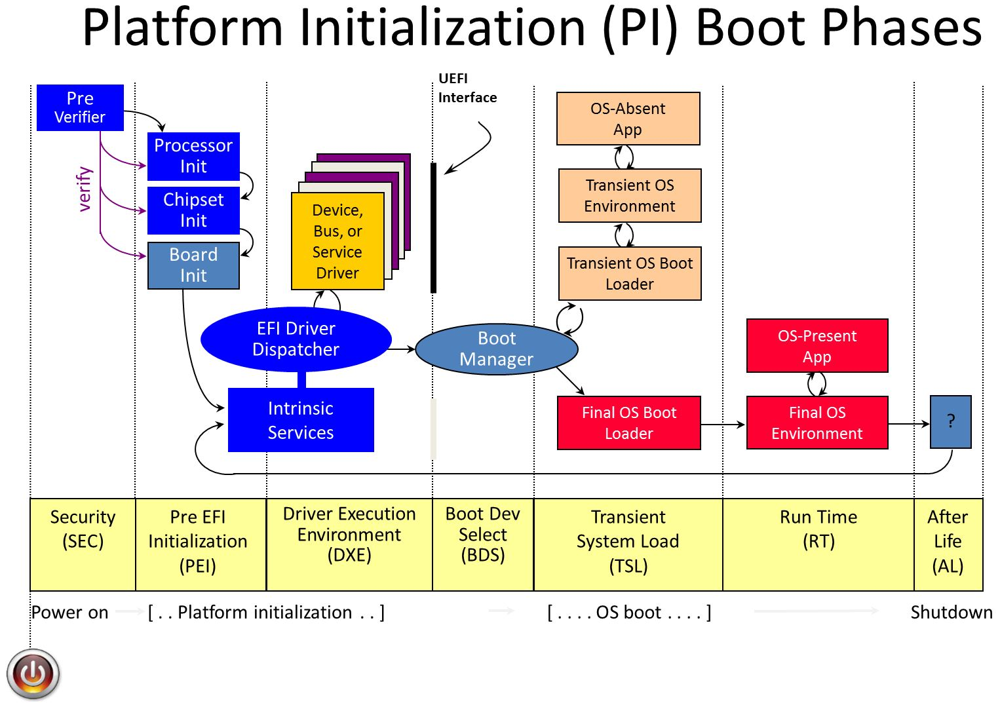
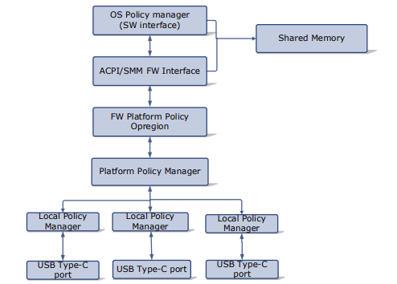

Open Device Partnership documentation guide
The purpose of this document is to guide you through an understanding of ODP regardless of where you are starting from or where your interest may lie.
The overall ODP umbrella is quite large and encompassing, and can be tricky to navigate through, so we will try to simplify that journey a little as well as giving direction on which path along the journey might best fit your interest or involvmement.
This document will briefly review the value proposition of ODP and why it is the right technology for the future of firmware development, at the right time.
Then the different 'tracks' of ODP will be explained. Here, you may find you are interested in only one of these tracks, or you may find you want to learn more about all of them.
Then, what is inside ODP and where to find it is detailed further - this is a good resource for those simply wishing to navigate the maze of contributed repositories that are available and which ones fit together for a given task.
Finally, for developers wishing to know more about how all of this comes together, a series of example implementation exercises are detailed. These can be explored in themselves or toward the end of the example's goal to create a complete virtual laptop that integrates the product of each of the individual exercises into a practical working end result.
You are in control of how you navigate through this guide, whether you proceed through it all one step at a time, or jump into the paths you find most compelling to your interest is entirely up to you.
Why ODP?
Modern computing devices are ubiquitous in our lives. They are integral to multiple aspects of our lives, from our workplace, to our finances, our creative endeavors, and our personal lifestyles.
Computer technology seemingly lept from its cradle a half century ago and never slowed its pace. It is easy to take much of it for granted.
We marvel as the new applications show us increasingly amazing opportunities. We also recognize and guard against the threats these applications pose to ourselves and society.
And in this heady environment, it is sometimes easy to forget that the "hidden parts" of these computers we use -- the lower-level hardware and firmware -- is often built upon languages and processes that, although having evolved to meet the demands of the time, are reaching the end of their practical sustainability for keeping up with the accelerating pace of the world around us.
What was originally just a "boot layer" and a few K of code for key hardware interfacing is now shouldering the responsibility of securing personal information and behavior patterns that a malicious intruder could use for nefarious purposes. High-value proprietary algorithms and Artificial Intelligence models are now built into the firmware and must be locked down. An increasing number of "always ready" peripherals, such as the battery and charger, biometric identification mechanisms, network connections, and other concerns are being increasingly handled by independent MCUs that must coordinate with one another and with the host system in a responsive, increasingly complex, yet highly secure manner.
Trying to manage all of this with what has been the status-quo for these concerns in past decades, without memory-safe languages and with a loosely-federated collection of standards and patterns agreed upon by an ad-hoc consortium of vendors is increasingly dangerous and costly.
The Open Device Partnership offers an alternative and a way forward to a more sustainable future that, while still built upon the proven paradigms of the past, boldly rejects the patterns that are known to be costly and ineffective in favor of future-ready, portable, sustainable, and expandable alternatives.
Key to this is the adoption of the programming language Rust as the successor to C. This immediately brings confidence that the code will not be susceptible to programming-error related vulnerabilities that may lead to either costly performance behaviors or be maliciously exploited by opportunistic bad actors. Furthermore, it provides the confidence that code from outside of one's immediate provenance of control may be audited and trusted and ready to join into a firmware construction built upon industry standards.
In the pages ahead, we'll look a little more closely at the advantages of ODP one at a time.
Security
Reduce firmware attack surface significantly, and meet modern security expectations using proven tools and patterns.
Security and Trustworthiness from the Ground Up
Rust is a modern, memory-safe language that mitigates entire classes of vulnerabilities endemic to C memory management, buffer overflows, use-after-free, and so forth by detecting and addressing these issues at compile time -- so there are few if any unpleasant surprises at runtime.
ODP is foundationally centered around Rust and not only embraces these philosophies, it defines patterns that further enhance the memory-safe paradigm, by preventing unauthorized access between ownership domains and guarding against possible malicious intrusions while implementing the proven industry-standard patterns proven in the industry.
Adoption of standards and patterns of DICE and EL2 Hypervisor supported architectures -- from a Rust-driven baseline - enables a hardware-rooted chain of trust across boot phases, aligning with NIST and platform security goals and requirements.
ODP makes component modularity and portability with a transparent provenance a practical and safe proposition by making it feasiable to audit and verify firmware behavior in specifically constrained ways.
Modular and Composable Firmware Architecture
ODP offers Modularity and agility not normally found in the firmware domain.
The buzz and the headlines generated by advances in the computer world typically belong to those who have created magic at the application layer. As such, this portion of the development community has seen exponential advances in the tooling and languages at their disposal. This has provided a high level of modulariy and with it, agility, that has become synonymous with the market responsiveness we see in the evolution of our favorite applications.
Firmware development, on the other hand, has generally been mired in the processes of the past, and has not enjoyed this same level of modularity and agility.
Composable and portable component modules
ODP changes that paradigm and raises the tide. It is inspired by modern software engineering practices: composability, dependency injection, testability.
Components (e.g., battery service, serial logging, boot policies) are decoupled and swappable, enabling faster iteration and better maintainability.
Because Rust enforces its memory and safety management guarantees at compile time, tooling such as that found in ODP Patina for example will build a DXE Core monolithically, without the need for an RTOS, and supports a composed modularity paradigm by design, streamlining certification and troubleshooting.
Cross-Domain Coherence
ODP is not just a patch atop of old layers. It is explicitly aligning system layers to reduce duplication, ambiguity, and failure points.
ODP is not just a firmware stack, but a vision that unites the embedded controller, main firmware, and even secure services under a coherent design and tooling approach.
Common patterns with clearly defined lanes
Shared services and conventions allow clear division of responsibility between firmware, EC, and OS—while promoting reuse and coordination.
Improved Developer Experience
ODP reduces developer friction and increases confidence, thus shortening the time to value for the development effort.
Developers can build and test components in isolation (e.g., battery, GPIO, boot timer), aided by QEMU emulation, mocks, and test harnesses.
With tools like patina-fw-patcher, even embedded iterations feel fast and accessible — no need to flash hardware with each development change.
The Rust ecosystem brings built-in unit testing, logging, dependency control (Cargo), and static analysis.
Sustainability and Long-Term Cost Reduction
ODP can help cut tech debt at its root by investing in sustainable design by enabling leaner teams and cleaner codebases.
Build right and reuse
Replacing legacy code with safer, testable, and reusable modules means lower maintenance costs over time.
HAL separation
The ability to reuse and recompose across product lines (via ODP libraries) reduces the need to "reinvent the wheel" for each board/platform, as Hardware Abstraction Layers can be cleanly isolated from the business logic of a component design, and easily expanded upon for new features.
Alignment with Industry Trends and Standards
ODP is forward-facing from its original concept, and embodied in its design. Adoption of ODP positions you at the forefront of secure, future-facing firmware innovation.
Perfectly Timed
ODP taps into the growing ecosystem momentum around Rust and embedded standards. Rust adoption at Microsoft, Google, and the Linux kernel reflects a broader industry shift.
Open Source and Collaborative
ODP Encourages upstream contributions and compliance with modern firmware interfaces (UEFI, ACPI, DICE).
An open collaboration model invites cross-vendor reuse and innovation.
Getting Started
Welcome! If you're new to the Open Device Partnership, this is the right place to begin.
If you're also new to the world of Embedded Controllers and the software that drives them, don't worry—you're still in the right place.
 | The Open Device Partnership introduces concepts that are game-changing when it comes to enabling reuse and interchangeability of Embedded Controller components—especially those found in modern laptops. Just as importantly, it brings a revolutionary focus on security and code safety from the ground up. |

To support this, ODP is designed to use Rust as the implementation language.
If you're coming from a C or assembly background, you may feel some initial resistance to learning a new language and unfamiliar patterns. That’s understandable.
But let’s face it: while it's certainly possible to write memory-safe and secure code in C, it's also very easy to make mistakes. With Rust, you'd have to work pretty hard to write unsafe code that even compiles.
As new standards—and potentially even government regulations—begin to push for memory-safe languages in critical systems, the Open Device Partnership aims to be ahead of the curve by bringing that future into the present.
Let's start by familiarizing ourselves with Rust (if you are not already), then we will get a high-level understanding of ODP Concepts in the Concepts section, which explains how the various pieces fit together.
One you've familiarized yourself with the fundamentals of Rust and the concepts and scope of ODP, you are ready to explore the ODP tracks and the repositories that support each track or to dive deep into practical examples in building your own firmware components that you can later use to build your own laptop.
Continue on to learn the concepts, or jump ahead to choose which ODP track you will follow next.
Concepts
The core firmware of a modern computing device is much more sophisticated than it was a couple of decades ago. What started out on early computers as the Basic Input-Output System (BIOS) firmware that allowed keyboard input, clock support, and maybe serial terminal output designed to give the most rudimentary of control to a system before it has the opportunity to load the operating system, as well as the initial bootstrap loader to bring that onboard, has grown into an orchestration of individual microcontroller-driven subsystems that manage a variety of input devices, cryptography subsystems, basic networking, power management, and even proprietary AI models.
Beyond handling the boot-time tasks, some of this lower-level firmware is meant to run autonomously in the background to monitor and adjust to operating conditions. For example, a thermal control subsystem will take measures to cool the computer if the CPU temperature exceeds optimal levels, or a battery charging subsystem must correctly detect when the power cord has been plugged in or removed and execute the steps necessary to charge the system. Such tasks are generally controlled by one or more Embedded Controllers, oftentimes found as a single System-on-Chip (SOC) construction.
Embedded Controllers are the unsung heroes of the modern laptop, quietly handling power management, thermal control, battery charging, lid sensors, keyboard scan matrices, and sometimes even security functions. There's a surprising amount of complexity tucked away in that little chip.
The drivers and handlers responsible for managing these subsystems must be secure, reliable, and easy to adopt with confidence. This calls for a standardized, community-moderated approach—one that still leaves room for innovation and platform-specific differentiation.
There are many proven standards that define and govern the development of this firmware. For example, UEFI (Unified Extensible Firmware Interface) defines a standard for boot-level firmware in a series of layers, and DICE (Device Identity Composition Engine) defines a standard for cryptographic verification of firmware components for a security layer.
Hardware components issue events or respond to signals transmitted over data buses such as eSPI,UART, I2C/I3C. These signals are monitored or driven by firmware, forming the basis for orchestrating and governing hardware behavior
Historically, much of this firmware has been vendor-supplied and tightly coupled to specific EC or boot hardware. It's often written in C or even assembly, and may be vulnerable to memory-unsafe operations or unintended behavior introduced by seemingly harmless changes.
The Open Device Partnership doesn't replace the former standards, but it defines a pattern for implementing this architecture in Rust.
As computing devices grow more complex and user data becomes increasingly sensitive, the need for provable safety and security becomes critical.
Rust offers a compelling alternative. As a systems programming language with memory safety at its core, Rust enables secure, low-level code without the tradeoffs typically associated with manual memory management. It’s a natural fit for Embedded Controller development—today and into the future.
Abstraction and normalization are key goals. OEMs often integrate components from multiple vendors and must adapt quickly when supply chains change. Rewriting integration logic for each vendor’s firmware is costly and error-prone.
By adopting ODP’s patterns, only the HAL layer typically needs to be updated when switching hardware components. The higher-level logic—what the system does with the component—remains unchanged
Instead, if the ODP patterns have been adopted, all that really needs to change is the HAL mapping layers that describe how the hardware action and data signals are defined and the higher-level business logic of handling that component can remain the same.
ODP is independent of any runtime or RTOS dependency. Asynchronous support is provided by packages such as the Embassy framework for embedded systems. Embassy provides key building blocks like Hardware Abstraction Layers (HALs), consistent timing models, and support for both asynchronous and blocking execution modes.
So how does this work?
A Rust crate defines the component behavior by implementing hardware pin traits provided by the target microcontroller's HAL (possibly via Embassy or a compatible interface). These traits are optionally normalized to ACPI (Advanced Configuration and Power Interface) and ASL (ACPI Source Language) standards to align with common host-side expectations.
From there, the system moves into a familiar abstraction pattern. The HAL exposes actions on those pins (such as read() or write()), and the service logic builds higher-level operations (like read_temperature() or set_fan_speed(x)) using those primitives.
flowchart LR Controller(Controller) --> PinTrait(Pin Traits) --> ASL(ASL) --> HAL(HAL interface) --> Fun(Functional Interface) --> Code(Code action) style Controller fill:#8C8 style PinTrait fill:#8C8
In the case of a controller being switched out, assuming both controllers perform the same basic functionality (e.g. read temperature, set fan speed) only the pin traits specific to the controller likely need to be changed to implement with similar behavior.
A quick look at Rust
If you are new to Rust, the venerable "Rust Book" is probably your best bet: The Rust Programming Language
and a great sandbox to play in while learning can be found at The Rust Playground
But before you run off to do that...
Let's look a little at what Rust has to offer first.
The basics are very important to learn because Rust builds on itself and the advanced features are made possible by leveraging the advantages of the basic ones. Most of these have to do with the type and memory safety models that are fundamental to the Rust proposition.
There are several parts to the rust toolchain that you should be aware of to start.
cargo
Cargo is an all-around utility player for the rust environment. It is many things:
- a build manager
- a package manager
- a linter / static analyzer
- a documentation engine
- a test runner
- an extensible system driven by installed modules
rustup
While Cargo is your go-to player for building with a toolchain, rustup is used to setup and modify the toolchain for different needs.
Among its other uses, you may want to familiarize yourself with rustup doc which will open a locally-sourced web book for Rust documentation that can be used offline.
rustc
Rust is a highly optimized compiled language. It's compiler is called rustc.
Typically rustc is not invoked directly; it is usually invoked with cargo build
The compiler is thorough and strict by design. Clean code is required on your part. Unused variables or mis-assigned variable types will result in compile errors.
- The compiler controls and understands memory allocation and deallocation
- It tracks borrows/references (borrow checking)
- Expands macros
Although some might accuse the Rust compiler of being deliberately unforgiving and opinionated, it is not heartless. It will tell you when you've done something wrong, and it will ask for additional information if it can't figure it out on its own (type, lifetime of borrowed values, etc)
Statements and Expressions
- Like many languages, Rust is primarily an expression-based language, where an expression produces a result or an effect.
- Multiple expression types:
- Literal
- Path
- Block
- Operator
- Struct
- Tuple
- Method
- Closure
- etc
- Expressions may be nested and obey an evaluation ordering
```
let y = 5;
let y = { let x = 5; x + 6; };
```
Variable binding and ownership
In other languages, a "let" statement specifies an assignment. In Rust, a "let" statement creates a variable binding. At first glance, this may seem the same, but there are important differences. A variable binding includes:
- Name of the binding
- Whether or not the value is mutable (default is false)
- The type of the value (based on type annotations, inferred by the compiler or default associated with literal expression)
- A value or backing resource (memory allocated on stack or heap)
- Whether or not this binding "owns" the value.
Binding examples (Primitive types)
fn main() {
// name: x, mutable: false, type: i32, value: 5 (stack), owner: true
let _x = 5;
// same result except with explicit type annotation of i32
let _x: i32 = 5;
// now with unsigned integer
let _x: u32 = 5;
//now mutable
let mut _x: u32 = 5;
// creates 2 immutable variable bindings for x and y
// using a tuple expression with integer literal expressions 1 and 2
let (_x, _y) = (1, 2);
// now x & y are mutable
let (mut _x, mut _y) = (1, 2);
}
Copy semantics and Move semantics
Consider this code:
fn copy_semantics() {
let x = 5;
let y = x;
}
This binds the value 5 to 'x' and then binds the value of 'x' to 'y'. So, in the end x == 5 and y == 5. No surprise there, but it should be understood that this is true because the primitive types for this implement the "Copy" trait that allows this.
Now let's look at another bit of code
fn move_semantics() {
// String does not implement the copy trait...
let message = String::from("hello Rustaceans");
let mut _hello = message;
println!("{}", message);
}
If your run this code in the Rust Playground you will see the following output:
Exited with status 101
error[E0382]: borrow of moved value: `message`
--> src/main.rs:8:20
|
4 | let message = String::from("hello Rustaceans");
| ------- move occurs because `message` has type `String`, which does not implement the `Copy` trait
5 | let mut _hello = message;
| ------- value moved here
...
8 | println!("{}", message);
| ^^^^^^^ value borrowed here after move
|
= note: this error originates in the macro `$crate::format_args_nl` which comes from the expansion of the macro `println` (in Nightly builds, run with -Z macro-backtrace for more info)
help: consider cloning the value if the performance cost is acceptable
|
5 | let mut _hello = message.clone();
| ++++++++
For more information about this error, try `rustc --explain E0382`.
error: could not compile `playground` (bin "playground") due to 1 previous error
Types that implement the Copy trait (like integers and booleans) are duplicated on assignment. For other types, ownership is transferred.
Simple primitive types implement the Copy trait — a marker trait indicating that values of a type can be duplicated with a simple bitwise copy
So you can see, the rust compiler, despite being picky, is very helpful. It explains exactly what is happening here:
String does not implement the "Copy" trait, so an assignent 'moves' the value from 'message' to '_hello' so that when we try to reference 'message' later in the print macro, we see the value is no longer there. It even suggests some possible alternatives we might try.
Allocating, Deallocating, and scope
- Memory is allocated when the result of an expression is assigned to a variable binding
- Memory is deallocated when the variable binding that is the owner of the value goes out of scope
- For non-primitive types (on the heap), you may call the
dropfunction (trait) for resources that you control the lifetime scope for. - The drop trait should be custom implemented for resource types that have specific destructor needs.
- Rust calls drop() automatically when a value goes out of scope, but you can override it via the Drop trait if your type needs custom cleanup logic (e.g. closing a file or freeing a resource).
Rust ownership rules
- Each value in rust has an owner (from a variable binding)
- There can only be one owner at a time
- When an owner goes out of scope, the value will be dropped.
Borrowing
Borrowing is the term used for a copy-by-reference. For example:
fn borrowing() {
let mut x: String = String::from("asdf");
// Borrow is a verb… Borrowing a value from the owner
// The result of a borrow is a reference; below an immutable reference
let _y: &String = &x;
// name: y, mutable: false, type: String, value: -> x, owner: false; an immutable reference
// Mutable borrow... the variable binding you are borrowing must be mutable
let _z: &mut String = &mut x;
// name: z, mutable: true, type: String, value: -> x, owner: false; a mutable reference
// You can borrow values stored on the heap or on the stack
let n: i32 = 5;
let _z: &i32 = &n; //is valid… same rules apply as for complex types
}
Borrowing rules
- Only 1 mutable borrow/reference at a time
- As many immutable borrows as you like
- If you have 1 or more immutable borrows and 1 mutable borrow, attempting to use any of the immutable borrows after the value has changed will result in a compile error
Rust uses lifetimes to ensure that borrowed references don’t outlive the data they point to. While often inferred by the compiler, they become important in more advanced usage.
Functions
Rust functions look much like function definitions from other languages. Here's some examples:
// A function that takes no parameters returns no useable result (unit type)
fn do_something() -> () {}
// equivalent to above… more typical
fn do_something() {}
// this returns an i32 with value 3…
// remember return statement is not needed… just leave off the semi-colon
fn get_three()-> i32 {
3
}
- The function starts with
fn. - Rust style conventions prefer "snake case" (underscore separated lowercase words) style for the function name.
- Functions take parameters which are listed within parenthesis following the function name.
- Functions that return a type denote their return type with ->
<type>after the parameter list. - The function body is within { } brackets.
- The result of the last expression executed becomes the return value if no 'return' keyword is encountered.
- The return type () is called the unit type — it’s like void in C/C++, representing ‘no meaningful value’.
Function parameters
- parameters must have a type annotation
- all parameters will be copied, moved, or borrowed from their origins and delivered into the scope of the function (the parameter definition should indicate if they expect a borrow/reference, or an actual value).
fn do_some_things(x: i32, y: String, z: &String, a: &mut String) {}
- x will be a copied value (from i32 primitive)
- y will be a moved value (from the string)
- z will be an immutable borrowed reference
- a will be a mutable borrowed reference
Tuples
- Tuples are primitive types that contain a finite sequence
- Tuples are heterogenous, the sequence does not need to be of the same type
- Tuples are a convenient way of returning multiple results from a function
- Tuples are often used with enums to associate one or more values with an enum variant
example:
let x: (&str,i32, char) = ("hello", 42, 'c')
In the example we define a tuple consisting of three element types: A string reference, a 32-bit integer, and a character. Then we assign literal values for this tuple definition to the binding variable 'x'.
Struct
A Struct (structure) in Rust is much like a structure definition in several other languages.
For example:
struct Example
{
foo: String,
bar: i32,
baz: bool
}
There is also the concept of a 'tuple struct' which is a convenient way to give a name to a tuple that can be treated like a structure, such as the Tuple example we visited above:
struct MyTupleStruct(&String, i32, char)
Remember, tuples can have any number of elements in the sequence.
Enum, Option, and Result
An enum is a way of saying that a value is one from a set of possible values. Most languages have some form of enum, but Rust has an particularly robust level of support around this construct.
Consider this example from the "Rust Book":
enum Message {
Quit,
Move { x: i32, y: i32 },
Write(String),
ChangeColor(i32, i32, i32),
}
One can imagine "Message" being used to direct some operation to do one of the four listed things. But note that each of these "directives" has annotations to describe the associated data type that accompany it. "Quit" needs no parameters, "Move" comes with structured data for x and y, "Write" is passed a String, and "ChangeColor" gets a Tuple.
Option
Option is a way to handle Null values in a way a little different from some other languages. An Option is basically a way to say that something has a value or it has no value (Some or None). Option is an enum that is part of the standard Rust library.
Since Option<T> is not the same type as T, the compiler will not allow an evaluation of a possible Null value.
You can also use the is_some() and is_none() functions of an option to determine if it has a value.
Result
Where Option is the state of "Some or None" Result is the state of "Ok or Err".
Option<T> is used when a value may or may not be present. Result<T, E> is used when a function may succeed (Ok) or fail (Err). Both are enums and must be handled explicitly.
Any operation or function that is executed may potentially fail, and Rust does not employ any sort of try/catch or "on_error" redirections found in other languages. Error conditions are a fact of life and as such are part of the result of doing something. Getting used to evaluating the return value of a function operation may seem annoying at first, but it is actually pretty liberating because it generally simplifies error handling.
Let's consider this function:
fn do_something() -> Result<String, std::io::Error> {
let x:String = "hooray".to_string();
return Ok(x);
}
We can see this function returns the "Ok" result (we don't create an error case in this example). Of course, unless we explicitly documented it, the caller has no idea there will not be an error, so it handles it like so:
fn main() {
let x = do_something();
let y = match x {
Ok(s) => s,
Err(_e) => panic!("Oh noes!")
};
println!("{}", y);
}
The error case never occurs, but if it did, it would probably be inadvisable to simply call panic! as a result. Of course, sometimes there are no good choices, but especially in firmware driver code, casually throwing panic! exceptions is not a good idea.
On that note, you will encounter a lot of sample code from the web and elsewhere that simply advise calling .unwrap() on an option or a result. While often used in examples or quick scripts, relying on .unwrap() in production firmware is discouraged. Define errors explicitly and handle them deliberately.
Functions and methods for user defined types
User define types include enums, structs, and union
impl Student {
fn new_with_username_email(username: String, email: String) -> Self {
Student {
active_enrollment: true,
username,
email
}
}
//method – with methods you add special parameter…
//a variable binding to “self”. This binding can be mutable or //immutable\
fn get_username(&self) -> String { self.username }
fn get_student(email: &str) -> Student { //query db, return student }
}
impl blocks let you associate methods with a type. Methods that take &self or &mut self operate on an instance, while functions without self are typically constructors or associated functions.
Common construction / initialization patterns
- "new" function
- Default trait
impl Default for Student {
fn default() -> Self {
Student {
active_enrollment: true,
username: String::default(),
email: String::new()
}
}
}
Summary
This introduction to key concepts of Rust just touches the surface of the Rust language itself, not to mention the extended ecosystem and community that surrounds it.
The goal of this introduction has been to introduce the fundamental safety and ownership guarantees Rust builds into its core design to alleviate some of the shortcomings that other languages often suffer from. These fundamentals are keystones to understanding the logic behind the rest of the language.
Don't stop here:
- visit Learn Rust - Rust Programming Language and learn the language!
- check out crates.io for a taste of the many thousand 3rd-party packages (crates) that you can import for your project
- Use the playground to experiment as you learn.
- for fun extended learning, visit Rustlings, where you get hands-on exercises to break in your muscle memory for writing solid Rust code.
- Since you are here, you undoubtedly have an interest in using Rust to write firmware, so you should visit Rust Embedded Book for a relevant introduction to using Rust in an Embedded Development Environment.
Patina
(Boot Firmware)
Patina is the codename for ODP's Rust-based SDK and framework for UEFI-compliant boot firmware development.
It is based upon the venerable UEFI standard and doesn't seek to reinvent the process of this well-known framework, as it necessarily re-implements these familiar patterns in Rust instead of C.
A review of UEFI
UEFI stands for Unified Extensible Firmware Interface and can be described as broken into a series of layers, as this diagram shows:
 (diagram source: TianoCore, , illustrating the PI Boot Flow from SEC to RT phase)
This boot-time firmware is executed by the platform main CPU on startup/reset and proceeds through the stages shown in the diagram. As part of its initialization, it may communicate with the embedded system microcontrollers that are also under the control of ODP rust drivers to initiate and orchestrate them to a starting state.
While the majority of ODP development focuses on the DXE phase, Patina also supports implementation in the PEI, SEC and other phases.
Some aspects of UEFI, especially those that have already been deprecated, may not be supported under ODP. These are legacy services, UI facilitators, and some Runtime Support components that either no longer serve a core purpose or can more effectively be implemented in other ways within ODP.
The Evolution of UEFI into Patina with Rust and ODP
Overview
Firmware and UEFI firmware in particular has long been written in C. Firmware operates in a unique environment to other system software. It is written to bootstrap a system often at the host CPU reset vector and as part of a chain of trust established by a hardware rooted immutable root of trust. Modern PC firmware is extraordinarily complex with little room for error.
Firmware Evolution
From a functional perspective, firmware must initialize the operating environment of a device. To do so involves integrating vendor code for dedicated microcontrollers, security engines, individual peripherals, SOC initialization, and so on. Individual firmware blobs may be located on a number of non-volatile media with very limited capacity. The firmware must perform its functional tasks successfully or risk difficult to diagnose errors in higher levels of the software stack that may impede overall device usability and debuggability.
These properties have led to slow but incremental expansion of host firmware advancements over time.
Importance of Security in Firmware
From a security perspective, firmware is an important component in the overall system Trusted Computing Base (TCB). Fundamental security features taken for granted in later system software such as kernels and hypervisors are often based on secure establishment in a lower layer of firmware. At the root is a concept of "trust".
While operating systems are attractive targets due to their ubiquity across devices and scale, attackers are are increasingly viewing firmware as an attack surface in response to increasingly effective security measures being applied in modern operating systems. While significant research has been devoted across the entire boot process, UEFI firmware on the host CPU presents a unique opportunity to gain more visibility into early code execution details and intercept the boot process before essential activities take place such as application of important security register locks, cache/memory/DMA protections, isolated memory regions, etc. The result is code executed in this timeframe must carry forward proper verification and measurement of future code while also ensuring it does not introduce a vulnerability in its own execution.
Performance Reliability in Firmware
From a performance perspective, firmware code is often expected to execute exceedingly fast. The ultimate goal is for an end user to not even be aware such code is present. In a consumer device scenario, a user expects to press a power button and immediately receive confirmation their system is working properly. In a server scenario, fleet uptime is paramount. Poorly written firmware can lead to long boot times that impact virtual machine responsiveness and workload scaling or, even worse, Denial of Service if the system fails to boot entirely. In an embedded scenario, government regulations may require firmware to execute fast enough to show a backup camera within a fixed amount of time.
All of this is to illustrate that firmware must perform important work in a diverse set of hardware states with code that is as small as possible and do so quickly and securely. In order to transition implementation spanning millions of lines of code written in a language developed over 50 years ago requires a unique and compelling alternative.
Rust and Firmware
For these reasons, modern PC firmware necessitates a powerful language that can support low-level programming with maximum performance, reliability, and safety. While C has provided the flexibility needed to implement relatively efficient firmware code, it has failed to prevent recurring problems around memory safety.
Stringent Safety
Common pitfalls in C such as null pointer dereferences, buffer and stack overflows, and pointer mismanagement continue to be at the root of high impact firmware vulnerabilities. These issues are especially impactful if they compromise the system TCB. Rust is compelling for UEFI firmware development because it is designed around strong memory safety without the usual overhead of a garbage collector. In addition, it enforces stringent type safety and concurrency rules that prevent the types of issues that often lead to subtle bugs in low-level software development.
Languages aside, UEFI firmware has greatly fallen behind other system software in its adoption of basic memory vulnerability mitigation techniques. For example, data execution protection, heap and stack guards, stack cookies, and null pointer dereference detection is not present in the vast majority of UEFI firmware today. More advanced (but long time) techniques such as Address Space Layout Randomization (ASLR), forward-edge control flow integrity technologies such as x86 Control Flow Enforcement (CET) Indirect Branch Tracking (IBT) or Arm Branch Target Identification (BTI) instructions, structured exception handling, and similar technologies are completely absent in most UEFI firmware today. This of course exacerbates errors commonly made as a result of poor language safety.
Given firmware code also runs in contexts with high privilege level such as System Management Mode (SMM) in x86, implementation errors can be elevated by attackers to gain further control over the system and subvert other protections.
Developer Productivity
The Rust ecosystem brings more than just safety. As a modern language firmware development can now participate in concepts and communities typically closed to firmware developers. For example:
-
Higher level multi-paradigm programming concepts such as those borrowed from functional programming in addition to productive polymorphism features such as generics and traits.
-
Safety guarantees that prevent errors and reduce the need for a myriad of static analysis tools with flexibility to still work around restrictions when needed in an organized and well understood way (unsafe code).
Modern Tooling
Rust includes a modern toolchain that is well integrated with the language and ecosystem. This standardizes tooling fragmented across vendors today and lends more time to firmware development. Examples of tools and community support:
-
An official package management system with useful tools such as first-class formatters and linters that reduce project-specific implementations and focus discussion on functional code changes.
-
High quality reusable bundles of code in the form of crates that increase development velocity and engagement with other domain experts.
-
Useful compilation messages and excellent documentation that can assist during code development.
Rust's interoperability with C code is also useful. This enables a phased adoption pathway where codebases can start incorporating Rust while still relying upon its extensive pre-existing code. At the same time, Rust has been conscious of low-level needs and can precisely structure data for C compatibility.
UEFI Rust in ODP
UEFI code in ODP plans to participate within the open Rust development community by:
- Engaging with the broader Rust community to learn best practices and share low-level system programming knowledge.
- Leveraging and contributing back to popular crates and publishing new crates that may be useful to other projects.
- A general design strategy is to solve common problems in a generic crate that can be shared and then integrate it back into firmware.
- Collaborating with other firmware vendors and the UEFI Forum to share knowledge and best practices and incorporate elements of memory safety languages like Rust into industry standard specifications where appropriate. Some specifications have interfaces defined around concepts and practices common in unsafe lanuages that could be improved for safety and reliability.
Looking forward, we're continuing to expand the coverage of our firmware code written in Rust. We are excited to continue learning more about Rust in collaboration with the community and our partners.
ODP Resources for UEFI
For traditional UEFI development, an SDK called EDK II is often used to supply much of the common functionality.
However, the EDK II presumes the use of C, and ODP is seeking to replace this potentially insecure code base with Rust for future devices.
ODP features a subproject body of code that represents the elements one might traditionally find within the EDK II, but designed for Rust.
The official documentation for the Patina track of ODP can be found here:
This document covers
- How to use materials from and contribute to the Open Device Partnership
- Development tools you will need, including Rust and other supporting tools
- Platform configuration and comparisons to EDK II (which may be familar to experienced UEFI developers)
- Coding patterns and standards
- Dependencies
- Industry background and current state assessments
How Patina compares to traditional UEFI approaches
There are differences in the ODP approach here in a few areas. For example, one significant departure is that in ODP there is no traditional SMM (System Management Mode).
SMM is a special-purpose operating mode provided by x86 CPUs (and compatible architectures) for executing highly privileged system-level code, independently of the operating system.
-
It is triggered by a System Management Interrupt (SMI).
-
Code running in SMM has full control over the system, including memory, I/O, and other hardware.
-
It is isolated: the OS (and even hypervisors) cannot access or interfere with SMM execution or memory (SMRAM).
This may seem more than a little significant at first because SMM is used in key EDK II contexts, including:
- SmmCore
- SmmDriver
- SmmCommunication
- SmmVariable
But there is good reason for this omission:
Traditional SMM is not supported to prevent coupling between the DXE and MM environments. This exclusion extends to so-called 'combined' DXE modules also. These patterns are error-prone, increase DXE module complexity, and elevate the risk of security vulnerabilities.
Standalone MM should be used instead. The combined drivers have not gained traction in actual implementations due to their lack of compatibility for most practical purposes and further increase the likelihood of coupling between core environments and user error when authoring those modules. The Rust DXE Core focuses on modern use cases and simplification of the overall DXE environment.
What's Next?
In upcoming sections we'll explore how Patina components interact within the DXE Core, how to define UEFI services in Rust, and how to develop real-world DXE drivers using ODP tools. First, we are going to discuss the role of ODP in an Embedded Controller context. If you are not interested in the EC side of things, you may want to jump directly to the Patina material from the ODP tracks section.
Embedded Controller

An Embedded Controller is typically a single SOC (System on Chip) design capable of managing a number of low-level tasks.
These individual tasked components of the SOC are represented by the gold boxes in the diagram. The ODP Support for Embedded Controller development is represented in the diagram in the green boxes, whereas third party support libraries are depicted in blue.
Component modularity
A Component can be thought of as a stack of functionality defined by traits (A trait in Rust is analogous to an interface in other comon languages).
For the functionality defined by the trait definition to interact with the hardware, there must be a HAL (hardware abstraction layer) defined that implements key actions required by the hardware to conduct these tasks. These HAL actions are then controlled by the functional interface of the component definition.
The component definition is part of a Subsystem of functionality that belongs to a Service.
For example, a Power Policy Service may host several related Subsystems for Battery, Charger, etc. Each of these Subsystems have Controllers to interact with their corresponding components. These Controllers are commanded by the Service their Subsystem belongs to, so for example, the power policy service may interrogate the current charge state of the battery. It does so by interrogating the Subsystem Controller which in turn relies upon the interface defined by the component Trait, which finally calls upon the hardware HAL to retrieve the necessary data from the hardware. This chain of stacked concerns forms a common pattern that allows for agile modularity and flexible portability of components between target contexts.
Secure vs Non-Secure
Communication between Subsystems may be considered to be either a "Secure" channel for data communication or a "Non-Secure" channel. An implementation may use more than one transport for different controller and controller service needs.
Data communication with the embedded controller can be considered an owned interface because it is implemented within the EC architecture itself. It may also tie into an external communication bus such as SPI or I2C for data exhanges between other MCUs or the host, but for purposes of communicating between its own subsystems, it is an internally implemented construct.
A "Secure" transport is one that can validate and trust the data from the channel, using cryptographic signatures and hypervisor isolation to insure the integrity of the data exchanged between subsystems. Not all such channels must necessarily be secure, and indeed in some cases depending upon the components used it may not even be possible to secure a channel. The ODP approach is agnostic to these decisions, and can support either or both patterns of implementation.
Depending upon the hardware architecture and available supporting features, a secure channel may incorporate strong isolation between individual component subsystems through memory access and paging mechanisms and/or hypervisor control.
Two similar sounding, but different models become known here. One is SMM, or "System Management Mode". SMM is a high-privilege CPU mode for x86 microcontrollers that EC services can utilize to gain access. To facilitate this, the SMM itself must be secured. This is done as part of the boot time validation and attestation of SMM access policies. With this in place, EC Services may be accessed by employing a SMM interrupt.
For A deeper dive into what SMM is, see How SMM isolation hardens the platform
Another term seen about will be "SMC", or "Secure Memory Control", which is a technology often found in ARM-based architectures. In this scheme, memory is divided into secure and non-secure areas that are mutally exclusive of each other, as well as a narrow section known as "Non-Secure Callable" which is able to call into the "Secure" area from the "Non-Secure" side.
Secure Memory Control concepts are discussed in detail with this document: TrustZone Technology for Armv8-M Architecture
SMM or SMC adoption has design ramifications for EC Services exchanges, but also affects the decisions made around boot firmware, and we'll see these terms again when we look at ODP Patina implementations.
Hypervisor context multiplexing
Another component of a Secure EC design is the use of a hypervisor to constrain the scope of any given component service to a walled-off virtualization context. One such discussion of such use is detailed in this article
The Open Device Partnership defines:
- An "owned interface" that communicates with the underlying hardware via the available data transport .
- We can think of this transport as being a channel that is considered either "Secure" or "Non-Secure".
- This interface supports business logic for operational abstractions and concrete implementations to manipulate or interrogate the connected hardware component.
- The business logic code may rely upon other crates to perform its functions. There are several excellent crates available in the Rust community that may be leveraged, such as Embassy.
- Synchronous and asynchronous patterns are supported.
- No runtime or RTOS dependencies.
An implementation may look a little like this:

EC Services
Embedded controller services are available for the operating system to call for various higher-level purposes dictated by specification. The Windows Operating system defines some of these standard services for its platform.
These service interfaces include those for:
- debug services
- firmware management services
- input management services
- oem services
- power services
- time services
Services may be available for operating systems other than Windows.
OEMs may wish to implement their own services as part of their product differentiation.
EC Service communication protocols
With a communication channel protocol established between OS and EC, operating system agents and applications are able to monitor and operate peripheral controllers from application space.
This scope comes with some obvious security ramifications that must be recognized.
Implementations of ODP may be architected for both Secure and Non-Secure system firmware designs, as previously discussed.

In the diagram above, the dark blue sections are those elements that are part of normal (non-secure) memory space and may be called from a service interface directly. As we can see on the Non-Secure side, the ACPI transport channel has access to the EC component implementations either directly or through the FF-A (Firmware Framework Memory Management Protocol).
FF-A
The Firmware Framework Memory Management Protocol (Spec) describes the relationship of a hypervisor controlling a set of secure memory partitions with configurable access and ownership attributes and the protocol for exchanging information between these virtualized contexts.
FF-A is available for Arm devices only. A common solution for x64 is still in development. For x64 implementations, use of SMM is employed to orchestrate hypervisor access using the [Hafnium] Rust product.
In a Non-Secure implementation without a hyperviser, the ACPI connected components can potentially change the state within any accessible memory space. An implementation with a hypervisor cannot. It may still be considered a "Non-Secure" implementation, however, as the ACPI data itself is unable to be verified for trust.
In a fully "Secure" implementation, controller code is validated at boot time to insure the trust of the data it provides. Additionally, for certain types of data, digital signing and/or encryption may be used on the data exchanged to provide an additional level of trust.
Sample System Implementation
This is short sample implementing a thermal control service interface. This sample assumes one thermal sensor and one thermal control device accessible via ACPI. For an ARM implementation, FF-A and Hafnium is assumed. For x86/x64, an eSPI transport is assumed and direct (Non-Secure) access is made from there.
FFA Device Definition
#![allow(unused)] fn main() { Device(\\_SB_.FFA0) { Name(_HID, "MSFT000C") OperationRegion(AFFH, FFixedHw, 4, 144) Field(AFFH, BufferAcc, NoLock, Preserve) { AccessAs(BufferAcc, 0x1), FFAC, 1152 } // Other components check this to make sure FFA is available Method(AVAL, 0, Serialized) { Return(One) } // Register notification events from FFA Method(_RNY, 0, Serialized) { Return( Package() { Package(0x2) { // Events for Management Service ToUUID("330c1273-fde5-4757-9819-5b6539037502"), Buffer() {0x1,0x0} // Register event 0x1 }, Package(0x2) { // Events for Thermal service ToUUID("31f56da7-593c-4d72-a4b3-8fc7171ac073"), Buffer() {0x1,0x0,0x2,0x0,0x3,0x0} // Register events 0x1, 0x2, 0x3 }, Package(0x2) { // Events for input device ToUUID("e3168a99-4a57-4a2b-8c5e-11bcfec73406"), Buffer() {0x1,0x0} // Register event 0x1 for LID } } ) } Method(_NFY, 2, Serialized) { // Arg0 == UUID // Arg1 == Notify ID // Management Service Events If(LEqual(ToUUID("330c1273-fde5-4757-9819-5b6539037502"),Arg0)) { Switch(Arg1) { Case(1) { // Test Notification Event Notify(\\_SB.ECT0,0x20) } } } // Thermal service events If(LEqual(ToUUID("31f56da7-593c-4d72-a4b3-8fc7171ac073"),Arg0)) { Switch(Arg1) { Case(1) { // Temp crossed low threshold Notify(\\_SB.SKIN,0x80) } Case(2) { // Temp crossed high threshold Notify(\\_SB.SKIN,0x81) } Case(3) { // Critical temperature event Notify(\\_SB.SKIN,0x82) } } } // Input Device Events If(LEqual(ToUUID("e3168a99-4a57-4a2b-8c5e-11bcfec73406"),Arg0)) { Switch(Arg1) { Case(1) { // LID event Notify(\\_SB._LID,0x80) } } } } } }
Memory Mapped Interface via FFA for UCSI
Note for this implementation of memory mapped interface to work the memory must be marked as reserved by UEFI and not used by the OS and direct access also given to the corresponding service in secure world.
#![allow(unused)] fn main() { Device(USBC) { Name(_HID,EISAID(“USBC000”)) Name(_CID,EISAID(“PNP0CA0”)) Name(_UID,1) Name(_DDN, “USB Type-C”) Name(_ADR,0x0) OperationRegion(USBC, SystemMemory, UCSI_PHYS_MEM, 0x30) Field(USBC,AnyAcc,Lock,Preserve) { // USB C Mailbox Interface VERS,16, // PPM-\>OPM Version RES, 16, // Reservied CCI, 32, // PPM-\>OPM CCI Indicator CTRL,64, // OPM-\>PPM Control Messages MSGI,128, // OPM-\>PPM Message In MSGO,128, // PPM-\>OPM Message Out } Method(_DSM,4,Serialized,0,UnknownObj, {BuffObj, IntObj,IntObj,PkgObj}) { // Compare passed in UUID to Supported UUID If(LEqual(Arg0,ToUUID(“6f8398c2-7ca4-11e4-ad36-631042b5008f”))) { // Use FFA to send Notification event down to copy data to EC If(LEqual(\\_SB.FFA0.AVAL,One)) { Name(BUFF, Buffer(144){}) // Create buffer for send/recv data CreateByteField(BUFF,0,STAT) // Out – Status for req/rsp CreateByteField(BUFF,1,LENG) // In/Out – Bytes in req, updates bytes returned CreateField(BUFF,16,128,UUID) // UUID of service CreateByteField(BUFF,18, CMDD) // In – First byte of command CreateField(BUFF,144,1024,FIFD) // Out – Msg data // Create Doorbell Event Store(20, LENG) Store(0x0, CMDD) // UCSI set doorbell Store(ToUUID("daffd814-6eba-4d8c-8a91-bc9bbf4aa301"), UUID) Store(Store(BUFF, \_SB_.FFA0.FFAC), BUFF) } // End AVAL } // End UUID } // End DSM } }
Thermal ACPI Interface for FFA
This sample code shows one Microsoft Thermal zone for SKIN and then a thermal device THRM for implementing customized IO.
#![allow(unused)] fn main() { // Sample Definition of FAN ACPI Device(SKIN) { Name(_HID, "MSFT000A") Method(_TMP, 0x0, Serialized) { If(LEqual(\\_SB.FFA0.AVAL,One)) { Name(BUFF, Buffer(30){}) CreateByteField(BUFF,0,STAT) // Out – Status for req/rsp CreateByteField(BUFF,1,LENG) // In/Out – Bytes in req, updates bytes returned CreateField(BUFF,16,128,UUID) // UUID of service CreateByteField(BUFF,18,CMDD) // Command register CreateByteField(BUFF,19,TZID) // Temp Sensor ID CreateDWordField(BUFF,26,RTMP) // Output Data Store(20, LENG) Store(0x1, CMDD) // EC_THM_GET_TMP Store(0x2, TZID) // Temp zone ID for SKIIN Store(ToUUID("31f56da7-593c-4d72-a4b3-8fc7171ac073"), UUID) Store(Store(BUFF, \\_SB_.FFA0.FFAC), BUFF) If(LEqual(STAT,0x0) ) // Check FF-A successful? { Return (RTMP) } } Return (Ones) } // Arg0 Temp sensor ID // Arg1 Package with Low and High set points Method(THRS,0x2, Serialized) { If(LEqual(\\_SB.FFA0.AVAL,One)) { Name(BUFF, Buffer(32){}) CreateByteField(BUFF,0,STAT) // Out – Status for req/rsp CreateByteField(BUFF,1,LENG) // In/Out – Bytes in req, updates bytes returned CreateField(BUFF,16,128,UUID) // UUID of service CreateByteField(BUFF,18,CMDD) // Command register CreateByteField(BUFF,19,TZID) // Temp Sensor ID CreateDwordField(BUFF,20,VTIM) // Timeout CreateDwordField(BUFF,24,VLO) // Low Threshold CreateDwordField(BUFF,28,VHI) // High Threshold CreateDWordField(BUFF,18,TSTS) // Output Data Store(ToUUID("31f56da7-593c-4d72-a4b3-8fc7171ac073"), UUID) Store(32, LENG) Store(0x2, CMDD) // EC_THM_SET_THRS Store(Arg0, TZID) Store(DeRefOf(Index(Arg1,0)),VTIM) Store(DeRefOf(Index(Arg1,1)),VLO) Store(DeRefOf(Index(Arg1,2)),VHI) Store(Store(BUFF, \\_SB_.FFA0.FFAC), BUFF) If(LEqual(STAT,0x0) ) // Check FF-A successful? { Return (TSTS) } } Return (0x3) // Hardware failure } // Arg0 GUID 1f0849fc-a845-4fcf-865c-4101bf8e8d79 // Arg1 Revision // Arg2 Function Index // Arg3 Function dependent Method(_DSM, 0x4, Serialized) { If(LEqual(ToUuid("1f0849fc-a845-4fcf-865c-4101bf8e8d79"),Arg0)) { Switch(Arg2) { Case (0) { Return(0x3) // Support Function 0 and Function 1 } Case (1) { Return( THRS(0x2, Arg3) ) // Call to function to set threshold } } } Return(0x3) } } Device(THRM) { Name(_HID, "MSFT000B") // Arg0 Instance ID // Arg1 UUID of variable // Return (Status,Value) Method(GVAR,2,Serialized) { If(LEqual(\\_SB.FFA0.AVAL,One)) { Name(BUFF, Buffer(38){}) CreateByteField(BUFF,0,STAT) // Out – Status for req/rsp CreateByteField(BUFF,1,LENG) // In/Out – Bytes in req, updates bytes returned CreateField(BUFF,16,128,UUID) // UUID of service CreateByteField(BUFF,18,CMDD) // Command register CreateByteField(BUFF,19,INST) // Instance ID CreateWordField(BUFF,20,VLEN) // 16-bit variable length CreateField(BUFF,176,128,VUID) // UUID of variable to read CreateField(BUFF,208,64,RVAL) // Output Data Store(ToUUID("31f56da7-593c-4d72-a4b3-8fc7171ac073"), UUID) Store(38, LENG) Store(0x5, CMDD) // EC_THM_GET_VAR Store(Arg0,INST) // Save instance ID Store(4,VLEN) // Variable is always DWORD here Store(Arg1, VUID) Store(Store(BUFF, \\_SB_.FFA0.FFAC), BUFF) If(LEqual(STAT,0x0) ) // Check FF-A successful? { Return (RVAL) } } Return (0x3) } // Arg0 Instance ID // Arg1 UUID of variable // Return (Status,Value) Method(SVAR,3,Serialized) { If(LEqual(\\_SB.FFA0.AVAL,One)) { Name(BUFF, Buffer(42){}) CreateByteField(BUFF,0,STAT) // Out – Status for req/rsp CreateByteField(BUFF,1,LENG) // In/Out – Bytes in req, updates bytes returned CreateField(BUFF,16,128,UUID) // UUID of service CreateByteField(BUFF,18,CMDD) // Command register CreateByteField(BUFF,19,INST) // Instance ID CreateWordField(BUFF,20,VLEN) // 16-bit variable length CreateField(BUFF,176,128,VUID) // UUID of variable to read CreateDwordField(BUFF,38,DVAL) // Data value CreateField(BUFF,208,32,RVAL) // Ouput Data Store(ToUUID("31f56da7-593c-4d72-a4b3-8fc7171ac073"), UUID) Store(42, LENG) Store(0x6, CMDD) // EC_THM_SET_VAR Store(Arg0,INST) // Save instance ID Store(4,VLEN) // Variable is always DWORD here Store(Arg1, VUID) Store(Arg2,DVAL) Store(Store(BUFF, \\_SB_.FFA0.FFAC), BUFF) If(LEqual(STAT,0x0) ) // Check FF-A successful? { Return (RVAL) } } Return (0x3) } // Arg0 GUID // 07ff6382-e29a-47c9-ac87-e79dad71dd82 - Input // d9b9b7f3-2a3e-4064-8841-cb13d317669e - Output // Arg1 Revision // Arg2 Function Index // Arg3 Function dependent Method(_DSM, 0x4, Serialized) { // Input Variable If(LEqual(ToUuid("07ff6382-e29a-47c9-ac87-e79dad71dd82"),Arg0)) { Switch(Arg2) { Case(0) { // We support function 0-3 Return(0xf) } Case(1) { Return(GVAR(1,ToUuid("ba17b567-c368-48d5-bc6f-a312a41583c1"))) // OnTemp } Case(2) { Return(GVAR(1,ToUuid("3a62688c-d95b-4d2d-bacc-90d7a5816bcd"))) // RampTemp } Case(3) { Return(GVAR(1,ToUuid("dcb758b1-f0fd-4ec7-b2c0-ef1e2a547b76"))) // MaxTemp } } Return(0x1) } // Output Variable If(LEqual(ToUuid("d9b9b7f3-2a3e-4064-8841-cb13d317669e"),Arg0)) { Switch(Arg2) { Case(0) { // We support function 0-3 Return(0xf) } Case(1) { Return(SVAR(1,ToUuid("ba17b567-c368-48d5-bc6f-a312a41583c1"),Arg3)) // OnTemp } Case(2) { Return(SVAR(1,ToUuid("3a62688c-d95b-4d2d-bacc-90d7a5816bcd"),Arg3)) // RampTemp } Case(3) { Return(SVAR(1,ToUuid("dcb758b1-f0fd-4ec7-b2c0-ef1e2a547b76"),Arg3)) // MaxTemp } } } Return (0x1) } } }
Call Flows for secure and non-secure Implementation
Depending on system requirements the ACPI calls may go directly to the EC or through secure world then through to EC.
When using non-secure interface the ACPI functions must define protocol level which is the Embedded controller for eSPI. For I2C/I3C or SPI interfaces the corresponding ACPI device must define the bus dependency and build the packet directly that is sent to the EC.
For secure communication all data is sent to the secure world via FF-A commands described in this document and the actual bus protocol and data sent to the EC is defined in the secure world in Hafnium. All support for FF-A is inboxed in the OS by default so EC communication will always work in any environment. However, FF-A is not supported in x86/x64 platforms so direct EC communication must be used on these platforms.
Non-Secure eSPI Access
This call flow assumes using Embedded controller definition with independent ACPI functions for MPTF support
Non-Secure eSPI READ
#![allow(unused)] fn main() { Device(EC0) { Name(_HID, EISAID("PNP0C09")) // ID for this EC // current resource description for this EC Name(_CRS, ResourceTemplate() { Memory32Fixed (ReadWrite, 0x100000, 0x10) // Used for simulated port access Memory32Fixed (ReadWrite, 0x100010, 0x10) // Interrupt defined for eSPI event signalling GpioInt(Edge, ActiveHigh, ExclusiveAndWake,PullUp 0,"\\_SB.GPI2"){43} }) Name(_GPE, 0) // GPE index for this EC // create EC's region and field for thermal support OperationRegion(EC0, EmbeddedControl, 0, 0xFF) Field(EC0, ByteAcc, Lock, Preserve) { MODE, 1, // thermal policy (quiet/perform) FAN, 1, // fan power (on/off) , 6, // reserved TMP, 16, // current temp AC0, 16, // active cooling temp (fan high) , 16, // reserved PSV, 16, // passive cooling temp HOT 16, // critical S4 temp CRT, 16 // critical temp BST1, 32, // Battery State BST2, 32, // Battery Present Rate BST3, 32, // Battery Remaining capacity BST4, 32, // Battery Present Voltage } Method (_BST) { Name (BSTD, Package (0x4) { \\_SB.PCI0.ISA0.EC0.BST1, // Battery State \\_SB.PCI0.ISA0.EC0.BST2, // Battery Present Rate \\_SB.PCI0.ISA0.EC0.BST3, // Battery Remaining Capacity \\_SB.PCI0.ISA0.EC0.BST4, // Battery Present Voltage }) Return(BSTD) } } }
sequenceDiagram OSPM->>ACPI: call _BST method ACPI->>ACPI: Map to EC0 fields in EC operation Region ACPI->>ACPI: EC0 accesses change to eSPI Peripheral accesses ACPI->>eSPI: Each field acccess changed to peripheral read/write ACPI->>ACPI: ACI handles SCI, port IO, MMIO, serialized ACPI->>ACPI: eSPI read/writes complete ACPI->>ACPI: Data is reorganized to _BST structure ACPI->>OSPM: Return _BST structure with status
Non-Secure eSPI Notifications
All interrupts are handled by the ACPI driver. When EC needs to send a notification event the GPIO is asserted and traps into IRQ. ACPI driver reads the EC_SC status register to determine if an SCI is pending. DPC callback calls and reads the EC_DATA port to determine the _Qxx event that is pending. Based on the event that is determined by ACPI the corresponding _Qxx event function is called.
#![allow(unused)] fn main() { Method (_Q07) { // Take action for event 7 Notify(\\_SB._LID, 0x80) } }
sequenceDiagram EC->>SCI ISR: EC asserts alert (IRQ) SCI ISR->>SCI DPC: Schedule DPC if EC_SC indicates SCI SCI DPC->>EC: Read EC_DATA to determine event EC->>SCI DPC: Send Qxx event SCI DPC->>ACPI: Call _Qxx function in EC0
Secure eSPI Access
The following flow assumes ARM platform using FF-A for secure calls. Note if you want to use the same EC firmware on both platforms with secure and non-secure access the EC_BAT_GET_BST in this case should be convert to a peripheral access with the same IO port and offset as non-secure definition.
Secure eSPI READ
#![allow(unused)] fn main() { Method (_BST) { // Check to make sure FFA is available and not unloaded If(LEqual(\\_SB.FFA0.AVAL,One)) { Name(BUFF, Buffer(32){}) // Create buffer for send/recv data CreateByteField(BUFF,0,STAT) // Out – Status for req/rsp CreateByteField(BUFF,1,LENG) // In/Out – Bytes in req, updates bytes returned CreateField(BUFF,16,128,UUID) // UUID of service CreateByteField(BUFF,18, CMDD) // In – First byte of command CreateDwordField(BUFF,19, BMA1) // In – Averaging Interval CreateField(BUFF,144,128,BSTD) // Out – 4 DWord BST data Store(ToUUID("25cb5207-ac36-427d-aaef-3aa78877d27e"), UUID) // Battery Store(42, LENG) Store(0x6, CMDD) // EC_BAT_GET_BST Store(Store(BUFF, \\_SB_.FFA0.FFAC), BUFF) If(LEqual(STAT,0x0) ) // Check FF-A successful? { Return (BMAD) } } Return(Zero) } }
sequenceDiagram OSPM->>ACPI: call_BST method ACPI->>FFA: Send EC_BAT_GET_BST_request FFA->>EC Service: Forward EC_BAT_GET_BST_request EC Service->>EC Service: Convert to eSPI peripheral read/write EC Service->>eSPI: send peripheral read/write access EC Service->>FFA: FFA_YIELD (as needed) FFA->>EC Service: FFA_RESUME (check for complete) eSPI->>EC Service: Return peripheral read data EC Service->>EC Service: Convert to EC_BAT_GET_BST response EC Service->>FFA: FFA response to original request FFA->>ACPI: return FFA status and _BST response ACPI->OSPM: return _BST structure
Secure eSPI Notification
When EC communication is done through Secure world we assert FIQ which is handled as eSPI interrupt. eSPI driver reads EC_SC and EC_DATA to retrieve the notification event details. On Non-secure implementation ACPI converts this to Qxx callback. On secure platform this is converted to a virtual ID and sent back to the OS via _NFY callback and a virtual ID.
#![allow(unused)] fn main() { Method(_NFY, 2, Serialized) { // Arg0 == UUID // Arg1 == Notify ID If(LEqual(ToUUID("25cb5207-ac36-427d-aaef-3aa78877d27e"),Arg0)) { If(LEqual(0x2,Arg1)) { Store(Arg1, \\_SB.ECT0.NEVT) Notify(\\_SB._LID, 0x80) } } } }
sequenceDiagram EC->>eSPI: EC asserts Alert (FIQ) eSPI->>EC: Read EC_SC to check for SCI eSPI->>EC: Read EC_DATA for SCI event EC->>eSPI: SCI Qxx event eSPI->>EC Service: Notification callback Qxx EC Service->>EC Service: Convert qxx to Virtual ID EC Service->>EC Nfy Service: Notify Virtual ID EC Nfy Service->>FFA:Send Physical ID FFA->>ACPI:Call_NFY with Virtual ID ACPI->>ACPI: Read SMEM notify details ACPI--)EC Service: Clear event (optional)
Legacy EC Interface
ACPI specification has a definition for an embedded controller, however this implementation is tied very closely to the eSPI bus and x86 architecture.
The following is an example of legacy EC interface definition from ACPI
11.7. Thermal Zone Examples — ACPI Specification 6.4 documentation
#![allow(unused)] fn main() { Scope(\\_SB.PCI0.ISA0) { Device(EC0) { Name(_HID, EISAID("PNP0C09")) // ID for this EC // current resource description for this EC Name(_CRS, ResourceTemplate() { IO(Decode16,0x62,0x62,0,1) IO(Decode16,0x66,0x66,0,1) }) Name(_GPE, 0) // GPE index for this EC // create EC's region and field for thermal support OperationRegion(EC0, EmbeddedControl, 0, 0xFF) Field(EC0, ByteAcc, Lock, Preserve) { MODE, 1, // thermal policy (quiet/perform) FAN, 1, // fan power (on/off) , 6, // reserved TMP, 16, // current temp AC0, 16, // active cooling temp (fan high) , 16, // reserved PSV, 16, // passive cooling temp HOT 16, // critical S4 temp CRT, 16 // critical temp } // following is a method that OSPM will schedule after // it receives an SCI and queries the EC to receive value 7 Method(_Q07) { Notify (\\_SB.PCI0.ISA0.EC0.TZ0, 0x80) } // end of Notify method // fan cooling on/off - engaged at AC0 temp PowerResource(PFAN, 0, 0) { Method(_STA) { Return (\\_SB.PCI0.ISA0.EC0.FAN) } // check power state Method(_ON) { Store (One, \\\\_SB.PCI0.ISA0.EC0.FAN) } // turn on fan Method(_OFF) { Store ( Zero, \\\\_SB.PCI0.ISA0.EC0.FAN) }// turn off fan } // Create FAN device object Device (FAN) { // Device ID for the FAN Name(_HID, EISAID("PNP0C0B")) // list power resource for the fan Name(_PR0, Package(){PFAN}) } // create a thermal zone ThermalZone (TZ0) { Method(_TMP) { Return (\\_SB.PCI0.ISA0.EC0.TMP )} // get current temp Method(_AC0) { Return (\\_SB.PCI0.ISA0.EC0.AC0) } // fan high temp Name(_AL0, Package(){\\_SB.PCI0.ISA0.EC0.FAN}) // fan is act cool dev Method(_PSV) { Return (\\_SB.PCI0.ISA0.EC0.PSV) } // passive cooling temp Name(_PSL, Package (){\\_SB.CPU0}) // passive cooling devices Method(_HOT) { Return (\\_SB.PCI0.ISA0.EC0.HOT) } // get critical S4 temp Method(_CRT) { Return (\\_SB.PCI0.ISA0.EC0.CRT) } // get critical temp Method(_SCP, 1) { Store (Arg1, \\\\_SB.PCI0.ISA0.EC0.MODE) } // set cooling mode Name(_TSP, 150) // passive sampling = 15 sec Name(_TZP, 0) // polling not required Name (_STR, Unicode ("System thermal zone")) } // end of TZ0 } // end of ECO } // end of \\\\_SB.PCI0.ISA0 scope- }
On platforms that do not support IO port access there is an option to define MMIO regions to simulate the IO port transactions.
In the above example you can see that the operation region directly maps to features on the EC and you can change the EC behavior by writing to a byte in the region or reading the latest data from the EC.
For a system with the EC connected via eSPI and that needs a simple non-secure interface to the EC the above mapping works very well and keeps the code simple. The eSPI protocol itself has details on port accesses and uses the peripheral channel to easily read/write memory mapped regions.
As the EC features evolve there are several requirements that do no work well with this interface:
-
Different buses such as I3C, SPI, UART target a packet request/response rather than a memory mapped interface
-
Protected or restricted access and validation of request/response
-
Firmware update, large data driven requests that require larger data response the 256-byte region is limited
-
Discoverability of features available and OEM customizations
-
Out of order completion of requests, concurrency, routing and priority handling
As we try to address these limitations and move to a more packet based protocol described in this document. The following section covers details on how to adopt existing operation region to new ACPI functionality.
Adopting EC Operation Region
The new OS frameworks such as MPTF still use ACPI methods as primary interface. Instead of defining devices such as FAN or ThermalZone in the EC region you can simply define the EC region itself and then map all the other ACPI functions to operate on this region. This will allow you to maintain backwards compatibility with existing EC definitions.
#![allow(unused)] fn main() { Device(EC0) { Name(_HID, EISAID("PNP0C09")) // ID for this EC // current resource description for this EC Name(_CRS, ResourceTemplate() { IO(Decode16,0x62,0x62,0,1) IO(Decode16,0x66,0x66,0,1) }) // create EC's region and field for thermal support OperationRegion(EC0, EmbeddedControl, 0, 0xFF) Field(EC0, ByteAcc, Lock, Preserve) { MODE, 1, // thermal policy (quiet/perform) FAN, 1, // fan power (on/off) , 6, // reserved TMP, 16, // current temp AC0, 16, // active cooling temp (fan high) , 16, // reserved PSV, 16, // passive cooling temp HOT 16, // critical S4 temp CRT, 16 // critical temp } } Device(SKIN) { Name(_HID, "MSFT000A") // New MPTF HID Temperature Device Method(_TMP, 0x0, Serialized) { Return( \\_SB.PCI0.ISA0.EC0.TMP) } } }
For more complicated functions that take a package some of the data may be constructed within ACPI and some of the data pulled from the OperationRegion. For example BIX for battery information may have a combination of static and dynamic data like this:
#![allow(unused)] fn main() { Method (_BIX) { Name (BAT0, Package (0x12) { 0x01, // Revision 0x02, // Power Unit 0x03, // Design Capacity \\_SB.PCI0.ISA0.EC0.BFCC, // Last Full Charge Capacity 0x05, // Battery Technology 0x06, // Design Voltage 0x07, // Design capacity of Warning 0x08, // Design Capacity of Low \\_SB.PCI0.ISA0.EC0.BCYL, // Cycle Count 0x0A, // Measurement Accuracy 0x0B, // Max Sampling Time 0x0C, // Min Sampling Time 0x0D, // Max Averaging Interval 0x0E, // Min Averaging Interval 0x0F, // Battery Capacity Granularity 1 0x10, // Battery Capacity Granularity 2 "Model123", // Model Number "Serial456", // Serial Number "Li-Ion", // Battery Type "OEMName" // OEM Information }) Return(BAT0) } }
Limitations for using Legacy EC
Before using the Legacy EC definition OEM’s should be aware of several use cases that may limit you ability to use it.
ACPI support for eSPI master
In the case of Legacy EC the communication to the EC is accomplished directly by the ACPI driver using PORT IO and eSPI Peripheral Bus commands. On ARM platforms there is no PORT IO and these must be substituted with MMIO regions. The ACPI driver needs changes to support MMIO which is being evaluated and support is not yet available. Some Silicon Vendors also do not implement the full eSPI specification and as such the ACPI driver cannot handle all the communication needs. On these platforms using Legacy EC interface is not an option.
Security of eSPI bus
When non-secure world is given access to the eSPI bus it can send commands to device on that bus. Some HW designs have the TPM or SPINOR on the same physical bus as the EC. On these designs allowing non-secure world to directly sends commands to EC can break the security requirements of other devices on the bus. In these cases the eSPI communication must be done in the secure world over FF-A as covered in this document and not use the Legacy EC channel. Since non-secure world has complete access to the EC operation region there is no chance for encryption of data. All data in the operation region is considered non-secure.
Functional limitations of Legacy EC
The peripheral region that is mapped in the Legacy EC in ACPI is limited to 256 bytes and notification events to the ones that are defined and handled in ACPI driver. To create custom solutions, send large packets or support encryption of data the Legacy EC interface has limitations in this area.
Secure EC Services Overview
In this section we review a system design where the EC communication is in the secure world running in a dedicated SP. In a system without secure world or where communication to EC is not desired to be secure all the ACPI functions can be mapped directly to data from the EC operation region.
The following github projects provide sample implementations of this interface:
ACPI EC samples, Kernel mode test driver, User mode test driver
Sample Secure Partition Service for EC services in RUST
RUST crate for FFA implementation in secure partition
The following GUID’s have been designed to represent each service operating in the secure partition for EC.
| EC Service Name | Service GUID | Description | EC_SVC_MANAGEMENT | 330c1273-fde5-4757-9819-5b6539037502 | Used to query EC functionality, Board info, version, security state, FW update | EC_SVC_POWER | 7157addf-2fbe-4c63-ae95-efac16e3b01c | Handles general power related requests and OS Sx state transition state notification | EC_SVC_BATTERY | 25cb5207-ac36-427d-aaef-3aa78877d27e | Handles battery info, status, charging | EC_SVC_THERMAL | 31f56da7-593c-4d72-a4b3-8fc7171ac073 | Handles thermal requests for skin and other thermal events | EC_SVC_UCSI | 65467f50-827f-4e4f-8770-dbf4c3f77f45 | Handles PD notifications and calls to UCSI interface | EC_SVC_INPUT | e3168a99-4a57-4a2b-8c5e-11bcfec73406 | Handles wake events, power key, lid, input devices (HID separate instance) | EC_SVC_TIME_ALARM | 23ea63ed-b593-46ea-b027-8924df88e92f | Handles RTC and wake timers. | EC_SVC_DEBUG | 0bd66c7c-a288-48a6-afc8-e2200c03eb62 | Used for telemetry, debug control, recovery modes, logs, etc | EC_SVC_TEST | 6c44c879-d0bc-41d3-bef6-60432182dfe6 | Used to send commands for manufacturing/factory test | EC_SVC_OEM1 | 9a8a1e88-a880-447c-830d-6d764e9172bb | Sample OEM custom service and example piping of events |
|---|
FFA Overview
This section covers the components involved in sending a command to EC through the FFA flow in windows. This path is specific to ARM devices and a common solution with x64 is still being worked out. Those will continue through the non-secure OperationRegion in the near term.

ARM has a standard for calling into the secure world through SMC’s and targeting a particular service running in secure world via a UUID. The full specification and details can be found here: Firmware Framework for A-Profile
The windows kernel provides native ability for ACPI to directly send and receive FFA commands. It also provides a driver ffadrv.sys to expose a DDI that allows other drivers to directly send/receive FFA commands without needing to go through ACPI.
Hyper-V forwards the SMC’s through to EL3 to Hafnium which then uses the UUID to route the request to the correct SP and service. From the corresponding EC service it then calls into the eSPI or underlying transport layer to send and receive the request to the physical EC.
FFA Device Definition
The FFA device is loaded from ACPI during boot and as such requires a Device entry in ACPI
#![allow(unused)] fn main() { Name(_HID, "MSFT000C") OperationRegion(AFFH, FFixedHw, 4, 144) Field(AFFH, BufferAcc, NoLock, Preserve) { AccessAs(BufferAcc, 0x1), FFAC, 1152 } Name(_DSD, Package() { ToUUID("daffd814-6eba-4d8c-8a91-bc9bbf4aa301"), //Device Prop UUID Package() { Package(2) { "arm-arml0002-ffa-ntf-bind", Package() { 1, // Revision 2, // Count of following packages Package () { ToUUID("330c1273-fde5-4757-9819-5b6539037502"), // Service1 UUID Package () { 0x01, //Cookie1 (UINT32) 0x07, //Cookie2 } }, Package () { ToUUID("b510b3a3-59f6-4054-ba7a-ff2eb1eac765"), // Service2 UUID Package () { 0x01, //Cookie1 0x03, //Cookie2 } } } } } }) // _DSD() Method(_DSM, 0x4, NotSerialized) { // Arg0 - UUID // Arg1 - Revision // Arg2: Function Index // 0 - Query // 1 - Notify // 2 - binding failure // 3 - infra failure // Arg3 - Data // // Device specific method used to query // configuration data. See ACPI 5.0 specification // for further details. // If(LEqual(Arg0, Buffer(0x10) { // // UUID: {7681541E-8827-4239-8D9D-36BE7FE12542} // 0x1e, 0x54, 0x81, 0x76, 0x27, 0x88, 0x39, 0x42, 0x8d, 0x9d, 0x36, 0xbe, 0x7f, 0xe1, 0x25, 0x42 })) { // Query Function If(LEqual(Arg2, Zero)) { Return(Buffer(One) { 0x03 }) // Bitmask Query + Notify } // Notify Function If(LEqual(Arg2, One)) { // Arg3 - Package {UUID, Cookie} Store(Index(Arg3,1), \_SB.ECT0.NEVT ) Return(Zero) } } Else { Return(Buffer(One) { 0x00 }) } } Method(AVAL,0x0, Serialized) { Return(One) } } }
HID definition
The _HID “MSFT000C” is reserved for FFA devices. Defining this HID for your device will cause the FFA interface for the OS to be loaded on this device.
Operation Region Definition
The operation region is marked as FFixedHw type 4 which lets the ACPI interpreter know that any read/write to this region requires special handling. The length is 144 bytes because this region operates on registers X0-X17 each of which are 8 bytes 18*8 = 144 bytes. This is mapped to FFAC is 1152 bits (144*8) and this field is where we act upon.
#![allow(unused)] fn main() { OperationRegion(AFFH, FFixedHw, 4, 144) Field(AFFH, BufferAcc, NoLock, Preserve) { AccessAs(BufferAcc, 0x1),FFAC, 1152 } }
When reading and writing from this operation region the FFA driver does some underlying mapping for X0-X3
X0 = 0xc400008d // FFA_DIRECT_REQ2
X1 = (Receiver Endpoint ID) | (Sender Endpoint ID \<\< 16)
X2/X3 = UUID
The following is the format of the request and response packets that are sent via ACPI
#![allow(unused)] fn main() { FFA_REQ_PACKET { uint8 status; // Not used just populated so commands are symmetric uint8 length; // Number of bytes in rawdata uint128 UUID; uint8 reqdata[]; } FFA_RSP_PACKET { uint8 status; // Status from ACPI if FFA command was sent successfully uint8 length; uint128 UUID; uint64 ffa_status; // Status returned from the service of the FFA command uint8 rspdata[]; } CreateByteField(BUFF,0,STAT) // Out – Status for req/rsp CreateByteField(BUFF,1,LENG) // In/Out – Bytes in req, updates bytes returned CreateField(BUFF,16,128,UUID) // In/Out - UUID of service CreateDwordField(BUFF,18,FFST)// Out - FFA command status }
Register Notification
During FFA driver initialization it calls into secure world to get a list of all available services for each secure partition. After this we send a NOTIFICATION_REGISTRATION request to each SP that has a service which registers for notification events
#![allow(unused)] fn main() { Name(_DSD, Package() { ToUUID("daffd814-6eba-4d8c-8a91-bc9bbf4aa301"), //Device Prop UUID Package() { Package(2) { "arm-arml0002-ffa-ntf-bind", Package() { 1, // Revision 1, // Count of following packages Package () { ToUUID("330c1273-fde5-4757-9819-5b6539037502"), // Service1 UUID Package () { 0x01, //Cookie1 (UINT32) 0x07, //Cookie2 } }, } } } }) // _DSD() }

In the above example we indicate that the OS will handle 2 different notification events for UUID 330c1273-fde5-4757-9819-5b6539037502 which is our EC management UUID. FFA knows which secure partition this maps to based on the list of services for each SP it has retrieved. Rather than having to keep track of all the physical bits in the bitmask that are used the FFA driver keeps track of this and allows each service to create a list of virtual ID’s they need to handle. The FFA driver then maps this to one of the available bits in the hardware bitmask and passes this mapping down to the notification service running in a given SP.
Input
| Parameter | Register | Value | Function | X4 | 0x1 | UUID Lo | X5 | Bytes [0..7] for the service UUID. | UUID Hi | X6 | Bytes [8..16] for the service UUID. | Mappings Count | X7 | The number of notification mappings | Notification Mapping1 | X8 | Bits [0..16] – Notification ID. --> 0,1,2,3,...
Bits [16..32] – Notification Bitmap bit number (0-383). |
Notification Mapping2 | X9 | Bits [0..16] – Notification ID. --> 0,1,2,3,...
Bits [16..32] – Notification Bitmap bit number (0-383).
|
... | ... | ... |
|---|
Output
| Parameter | Register | Value |
|---|---|---|
| Result | X4 | 0 on success. Otherwise, Failure |
Note this NOTIFICATION_REGISTER request is sent to the Notification Service UUID in the SP. The UUID of the service that the notifications are for are stored in X5/X6 registers shown above.
The UUID for notification service is {B510B3A3-59F6-4054-BA7A-FF2EB1EAC765} which is stored in X2/X3.
Notification Events
All notification events sent from all secure partitions are passed back through the FFA driver. The notification calls the _DSM method. Function 0 is always a bitmap of all the other functions supported. We must support at least a minium of the Query and Notify. The UUID is stored in Arg0 and the notification cookie is stored in Arg3 when Arg2 is 11.
#![allow(unused)] fn main() { Method(_DSM, 0x4, NotSerialized) { // Arg0 - UUID // Arg1 - Revision // Arg2: Function Index // 0 - Query // 1 - Notify // 2 - binding failure // 3 - infra failure // Arg3 - Data // // Device specific method used to query // configuration data. See ACPI 5.0 specification // for further details. // If(LEqual(Arg0, Buffer(0x10) { // // UUID: {7681541E-8827-4239-8D9D-36BE7FE12542} // 0x1e, 0x54, 0x81, 0x76, 0x27, 0x88, 0x39, 0x42, 0x8d, 0x9d, 0x36, 0xbe, 0x7f, 0xe1, 0x25, 0x42 })) { // Query Function If(LEqual(Arg2, Zero)) { Return(Buffer(One) { 0x03 }) // Bitmask Query + Notify } // Notify Function If(LEqual(Arg2, One)) { // Arg3 - Package {UUID, Cookie} Store(Index(Arg3,1), \_SB.ECT0.NEVT ) Return(Zero) } } Else { Return(Buffer(One) { 0x00 }) } } }
The following is the call flow showing a secure interrupt arriving to the EC service which results in a notification back to ACPI. The notification payload can optionally be written to a shared buffer or ACPI can make another call back into EC service to retrieve the notification details.
The _NFY only contains the ID of the notification and no other payload, so both ACPI and the EC service must be designed either with shared memory buffer or a further notify data packet.

Runtime Requests
During runtime the non-secure side uses FFA_MSG_SEND_DIRECT_REQ2 requests to send requests to a given service within an SP. Any request that is expected to take longer than 500 uSec should yield control back to the OS by calling FFA_YIELD within the service. When FFA_YIELD is called it will return control back to the OS to continue executing but the corresponding ACPI thread will be blocked until the original FFA request completes with DIRECT_RSP2. Note this creates a polling type interface where the OS will resume the SP thread after the timeout specified. The following is sample call sequence.

FFA Example Data Flow
For an example let’s take the battery status request _BST and follow data through.

#![allow(unused)] fn main() { FFA_REQ_PACKET req = { 0x0, // Initialize to no error 0x1, // Only 1 byte of data is sent after the header {0x25,0xcb,0x52,0x07,0xac,0x36,0x42,0x7d,0xaa,0xef,0x3a,0xa7,0x88,0x77,0xd2,0x7e}, 0x2 // EC_BAT_GET_BST } }
The equivalent to write this data into a BUFF in ACPI is as follows
#![allow(unused)] fn main() { Name(BUFF, Buffer(32){}) // Create buffer for send/recv data CreateByteField(BUFF,0,STAT) // Out – Status for req/rsp CreateByteField(BUFF,1,LENG) // In/Out – Bytes in req, updates bytes returned CreateField(BUFF,16,128,UUID) // UUID of service CreateByteField(BUFF,18, CMDD) // In – First byte of command CreateField(BUFF,144,128,BSTD) // Out – Raw data response 4 DWords Store(20,LENG) Store(0x2, CMDD) Store(ToUUID ("25cb5207-ac36-427d-aaef-3aa78877d27e"), UUID) Store(Store(BUFF, \\_SB_.FFA0.FFAC), BUFF) }
The ACPI interpreter when walking through this code creates a buffer and populates the data into buffer. The last line indicates to send this buffer over FFA interface.
ACPI calls into the FFA interface to send the data over to the secure world EC Service
typedef struct _FFA_INTERFACE {
ULONG Version;
PFFA_MSG_SEND_DIRECT_REQ2 SendDirectReq2;
} FFA_INTERFACE, \*PFFA_INTERFACE;
FFA Parsing
FFA is in charge of sending the SMC over to the secure world and routing to the correct service based on UUID.

X0 = SEND_DIRECT_REQ2 SMC command ID
X1 = Source ID and Destination ID
X2 = UUID Low
X3 = UUID High
X4-X17 = rawdata
Note: The status and length are not passed through to the secure world they are consumed only be ACPI.
HyperV and Monitor have a chance to filter or deny the request, but in general just pass the SMC request through to Hafnium
Hafnium extracts the data from the registers into an sp_msg structure which is directly mapping contents from x0-x17 into these fields.
#![allow(unused)] fn main() { pub struct FfaParams { pub x0: u64, pub x1: u64, pub x2: u64, pub x3: u64, pub x4: u64, pub x5: u64, pub x6: u64, pub x7: u64, pub x8: u64, pub x9: u64, pub x10: u64, pub x11: u64, pub x12: u64, pub x13: u64, pub x14: u64, pub x15: u64, pub x16: u64, pub x17: u64, } }
In our SP we receive the raw FfaParams structure and we convert this to an FfaMsg using our translator. This pulls out the function_id, source_id, destination_id and uuid.
#![allow(unused)] fn main() { fn from(params: FfaParams) -> FfaMsg { FfaMsg { function_id: params.x0, // Function id is in lower 32 bits of x0 source_id: (params.x1 >> 16) as u16, // Source in upper 16 bits destination_id: params.x1 as u16, // Destination in lower 16 bits uuid: u64_to_uuid(params.x2, params.x3), args64: [ params.x4, params.x5, params.x6, params.x7, params.x8, params.x9, params.x10, params.x11, params.x12, params.x13, params.x14, params.x15, params.x16, params.x17, ], } } }
The destination_id is used to route the message to the correct SP, this is based on the ID field in the DTS description file. Eg: id = <0x8001>;
EC Service Parsing
Within the EC partition there are several services that run, the routing of the FF-A request to the correct services is done by the main message handling loop for the secure partition. After receiving a message we call into ffa_msg_handler and based on the UUID send it to the corresponding service to handle the message.
#![allow(unused)] fn main() { let mut next_msg = ffa.msg_wait(); loop { match next_msg { Ok(ffamsg) => match ffa_msg_handler(&ffamsg) { Ok(msg) => next_msg = ffa.msg_resp(\&msg), Err(_e) => panic!("Failed to handle FFA msg"), }, Err(_e) => { panic!("Error executing msg_wait"); } } } }
The main message loop gets the response back from ffa_msg_handler and returns to non-secure world so the next incoming message after the response is a new message to handle.
#![allow(unused)] fn main() { fn ffa_msg_handler(msg: &FfaMsg) -> Result<FfaMsg> { println!( "Successfully received ffa msg: function_id = {:08x} uuid = {}", msg.function_id, msg.uuid ); match msg.uuid { UUID_EC_SVC_MANAGEMENT => { let fwmgmt = fw_mgmt::FwMgmt::new(); fwmgmt.exec(msg) } UUID_EC_SVC_NOTIFY => { let ntfy = notify::Notify::new(); ntfy.exec(msg) } UUID_EC_SVC_POWER => { let pwr = power::Power::new(); pwr.exec(msg) } UUID_EC_SVC_BATTERY => { let batt = battery::Battery::new(); batt.exec(msg) } UUID_EC_SVC_THERMAL => { let thm = thermal::ThmMgmt::new(); thm.exec(msg) } UUID_EC_SVC_UCSI => { let ucsi = ucsi::UCSI::new(); ucsi.exec(msg) } UUID_EC_SVC_TIME_ALARM => { let alrm = alarm::Alarm::new(); alrm.exec(msg) } UUID_EC_SVC_DEBUG => { let dbg = debug::Debug::new(); dbg.exec(msg) } UUID_EC_SVC_OEM => { let oem = oem::OEM::new(); oem.exec(msg) } _ => panic!("Unknown UUID"), } } }
Large Data Transfers
When making an FFA_MSG_SEND_DIRECT_REQ2 call the data is stored in registers X0-X17. X0-X3 are reserved to store the Function Id, Source Id, Destination Id and UUID. This leaves X4-X17 or 112 bytes. For larger messages they either need to be broken into multiple pieces or make use of a shared buffer between the OS and Secure Partition.
Shared Buffer Definitions
To create a shared buffer you need to modify the dts file for the secure partition to include mapping to your buffer.
#![allow(unused)] fn main() { ns_comm_buffer { description = "ns-comm"; base-address = <0x00000100 0x60000000>; pages-count = <0x8>; attributes = <NON_SECURE_RW>; }; }
During UEFI Platform initialization you will need to do the following steps, see the FFA specification for more details on these commands
- FFA_MAP_RXTX_BUFFER
- FFA_MEM_SHARE
- FFA_MSG_SEND_DIRECT_REQ2 (EC_CAP_MEM_SHARE)
- FFA_UNMAP_RXTX_BUFFER
The RXTX buffer is used during larger packet transfers but can be overridden and updated by the framework. The MEM_SHARE command uses the RXTX buffer so we first map that buffer then populate our memory descriptor requests to the TX_BUFFER and send to Hafnium. After sending the MEM_SHARE request we need to instruct our SP to retrieve this memory mapping request. This is done through our customer EC_CAP_MEM_SHARE request where we describe the shared memory region that UEFI has donated. From there we call FFA_MEM_RETRIEVE_REQ to map the shared memory that was described to Hafnium. After we are done with the RXTX buffers we must unmap them as the OS will re-map new RXTX buffers. From this point on both Non-secure and Secure side will have access to this shared memory buffer that was allocated.
Async Transfers
All services are single threaded by default. Even when doing FFA_YIELD it does not allow any new content to be executed within the service. If you need your service to be truly asynchronous you must have commands with delayed responses.
There is no packet identifier by default and tracking of requests and completion by FFA, so the sample solution given here is based on shared buffers defined in previous section and existing ACPI and FFA functionality.

Inside of our FFA functions rather than copying our data payload into the direct registers we define a queue in shared memory and populate the actual data into this queue entry. In the FFA_MSG_SEND_DIRECT_REQ2 we populate an ASYNC command ID (0x0) along with the seq #. The seq # is then used by the service to locate the request in the TX queue. We define a separate queue for RX and TX so we don’t need to synchronize between OS and secure partition.

ACPI Structures and Methods for Asynchronous
The SMTX is shared memory TX region definition
#![allow(unused)] fn main() { // Shared memory regions and ASYNC implementation OperationRegion (SMTX, SystemMemory, 0x10060000000, 0x1000) // Store our actual request to shared memory TX buffer Field (SMTX, AnyAcc, NoLock, Preserve) { TVER, 16, TCNT, 16, TRS0, 32, TB0, 64, TB1, 64, TB2, 64, TB3, 64, TB4, 64, TB5, 64, TB6, 64, TB7, 64, Offset(0x100), // First Entry starts at 256 byte offset each entry is 256 bytes TE0, 2048, TE1, 2048, TE2, 2048, TE3, 2048, TE4, 2048, TE5, 2048, TE6, 2048, TE7, 2048, } }
The QTXB method copies data into first available entry in the TX queue and returns sequence number used.
#![allow(unused)] fn main() { // Arg0 is buffer pointer // Arg1 is length of Data // Return Seq \# Method(QTXB, 0x2, Serialized) { Name(TBX, 0x0) Store(Add(ShiftLeft(1,32),Add(ShiftLeft(Arg1,16),SEQN)),TBX) Increment(SEQN) // Loop until we find a free entry to populate While(One) { If(LEqual(And(TB0,0xFFFF),0x0)) { Store(TBX,TB0); Store(Arg0,TE0); Return( And(TBX,0xFFFF) ) } If(LEqual(And(TB1,0xFFFF),0x0)) { Store(TBX,TB1); Store(Arg0,TE1); Return( And(TBX,0xFFFF) ) } If(LEqual(And(TB2,0xFFFF),0x0)) { Store(TBX,TB2); Store(Arg0,TE2); Return( And(TBX,0xFFFF) ) } If(LEqual(And(TB3,0xFFFF),0x0)) { Store(TBX,TB3); Store(Arg0,TE3); Return( And(TBX,0xFFFF) ) } If(LEqual(And(TB4,0xFFFF),0x0)) { Store(TBX,TB4); Store(Arg0,TE4); Return( And(TBX,0xFFFF) ) } If(LEqual(And(TB5,0xFFFF),0x0)) { Store(TBX,TB5); Store(Arg0,TE5); Return( And(TBX,0xFFFF) ) } If(LEqual(And(TB6,0xFFFF),0x0)) { Store(TBX,TB6); Store(Arg0,TE6); Return( And(TBX,0xFFFF) ) } If(LEqual(And(TB7,0xFFFF),0x0)) { Store(TBX,TB7); Store(Arg0,TE7); Return( And(TBX,0xFFFF) ) } Sleep(5) } } }
The SMRX is shared memory region for RX queues
#![allow(unused)] fn main() { // Shared memory region OperationRegion (SMRX, SystemMemory, 0x10060001000, 0x1000) // Store our actual request to shared memory TX buffer Field (SMRX, AnyAcc, NoLock, Preserve) { RVER, 16, RCNT, 16, RRS0, 32, RB0, 64, RB1, 64, RB2, 64, RB3, 64, RB4, 64, RB5, 64, RB6, 64, RB7, 64, Offset(0x100), // First Entry starts at 256 byte offset each entry is 256 bytes RE0, 2048, RE1, 2048, RE2, 2048, RE3, 2048, RE4, 2048, RE5, 2048, RE6, 2048, RE7, 2048, } }
The RXDB function takes sequence number as input and will keep looping through all the entries until we see packet has completed. Sleeps for 5ms between each iteration to allow the OS to do other things and other ACPI threads can run.
#![allow(unused)] fn main() { // Allow multiple threads to wait for their SEQ packet at once // If supporting packet \> 256 bytes need to modify to stitch together packet Method(RXDB, 0x1, Serialized) { Name(BUFF, Buffer(256){}) // Loop forever until we find our seq While (One) { If(LEqual(And(RB0,0xFFFF),Arg0)) { CreateField(BUFF, 0, Multiply(And(ShiftRight(RB0,16),0xFFFF),8), XB0) Store(RE0,BUFF); Store(0,RB0); Return( XB0 ) } If(LEqual(And(RB1,0xFFFF),Arg0)) { CreateField(BUFF, 0, Multiply(And(ShiftRight(RB1,16),0xFFFF),8), XB1) Store(RE1,BUFF); Store(0,RB1); Return( XB1 ) } If(LEqual(And(RB2,0xFFFF),Arg0)) { CreateField(BUFF, 0, Multiply(And(ShiftRight(RB2,16),0xFFFF),8), XB2) Store(RE2,BUFF); Store(0,RB2); Return( XB2 ) } If(LEqual(And(RB3,0xFFFF),Arg0)) { CreateField(BUFF, 0, Multiply(And(ShiftRight(RB3,16),0xFFFF),8), XB3) Store(RE3,BUFF); Store(0,RB3); Return( XB3 ) } If(LEqual(And(RB4,0xFFFF),Arg0)) { CreateField(BUFF, 0, Multiply(And(ShiftRight(RB4,16),0xFFFF),8), XB4) Store(RE4,BUFF); Store(0,RB4); Return( XB4 ) } If(LEqual(And(RB5,0xFFFF),Arg0)) { CreateField(BUFF, 0, Multiply(And(ShiftRight(RB5,16),0xFFFF),8), XB5) Store(RE5,BUFF); Store(0,RB5); Return( XB5 ) } If(LEqual(And(RB6,0xFFFF),Arg0)) { CreateField(BUFF, 0, Multiply(And(ShiftRight(RB6,16),0xFFFF),8), XB6) Store(RE6,BUFF); Store(0,RB6); Return( XB6 ) } If(LEqual(And(RB7,0xFFFF),Arg0)) { CreateField(BUFF, 0, Multiply(And(ShiftRight(RB7,16),0xFFFF),8), XB7) Store(RE7,BUFF); Store(0,RB7); Return( XB7 ) } Sleep(5) } // If we get here didn't find a matching sequence number Return (Ones) } }
The following is sample code to transmit a ASYNC request and wait for the data in the RX buffer.
#![allow(unused)] fn main() { Method(ASYC, 0x0, Serialized) { If(LEqual(\\_SB.FFA0.AVAL,One)) { Name(BUFF, Buffer(30){}) CreateByteField(BUFF,0,STAT) // Out – Status for req/rsp CreateByteField(BUFF,1,LENG) // In/Out – Bytes in req, updates bytes returned CreateField(BUFF,16,128,UUID) // UUID of service CreateByteField(BUFF,18,CMDD) // Command register CreateWordField(BUFF,19,BSQN) // Sequence Number // x0 -\> STAT Store(20, LENG) Store(0x0, CMDD) // EC_ASYNC command Local0 = QTXB(BUFF,20) // Copy data to our queue entry and get back SEQN Store(Local0,BSQN) // Sequence packet to read from shared memory Store(ToUUID("330c1273-fde5-4757-9819-5b6539037502"), UUID) Store(Store(BUFF, \\_SB_.FFA0.FFAC), BUFF) If(LEqual(STAT,0x0) ) // Check FF-A successful? { Return (RXDB(Local0)) // Loop through our RX queue till packet completes } } }
Recovery and Errors
The eSPI or bus driver is expected to detect if the EC is not responding and retry. The FFA driver will report back in the status byte if it cannot successfully talk to the secure world. If there are other failures generally they should be returned back up through ACPI with a value of (Ones) to indicate failure condition. This may cause some features to work incorrectly.
It is also expected that the EC has a watchdog if something on the EC is hung it should reset and reload on its own. The EC is also responsible for monitoring that the system is running within safe parameters. The thermal requests and queries are meant to be advisory in nature and EC should be able to run independently and safely without any intervention from the OS.
Tutorial
Ready to go hands-on?
Later in this book we will be writing real embedded code for real hardware, using one of many easily sourced and affordable development boards, such as the STM32F3Discovery Board, which is used in the Rust Embedded Book and is suitable for the exercises we will conduct here.
If you have a different development board, that's fine -- the examples are not really tied to any particular piece of hardware, and only minor adjustments may be needed to adapt the instructions here to different hardware.
If you are new to embedded programming in Rust, you may find the guide and excercises in the Rust Embedded Book to be a great introduction.
Once we have learned the basic principles of how to use the Rust language in an embedded environment, and have set up the tooling, we are ready to move into the ODP framework to structure our designs.
Continue your journey with the Discovery board, which bridges familiar embedded projects and EC-style service structure.
Not ready to go hands-on?
That's okay -- but you might want to look through this quick tutorial anyway because it contains key examples of the ODP construction patterns in practice.
Our first ODP-Style handler pair (with faked bus semantics)
The microcontrollers used for Embedded Controller purposes are not the same ones used in the example resources referenced by the Rust Book, but if you've started there then you may already have a STM32F3 microcontroller Discovery board and you may have even played with it to blink the LED lights or some other exercises.
Let's build on what we already know from experimenting with the STM32F3 exercises from the Rust Book.
We already know we can use the tooling setup we have to write code for the STM32F3 that will light one of its LED displays when the user button is pressed.
Code to do exactly that can be found in stm32f3-discovers/examples/button.rs of the development board resources.
That code looks like this:
#![no_std] #![no_main] extern crate panic_itm; use cortex_m_rt::entry; use stm32f3_discovery::stm32f3xx_hal::delay::Delay; use stm32f3_discovery::stm32f3xx_hal::prelude::*; use stm32f3_discovery::stm32f3xx_hal::pac; use stm32f3_discovery::button::UserButton; use stm32f3_discovery::leds::Leds; use stm32f3_discovery::switch_hal::{InputSwitch, OutputSwitch}; #[entry] fn main() -> ! { let device_periphs = pac::Peripherals::take().unwrap(); let mut reset_and_clock_control = device_periphs.RCC.constrain(); let core_periphs = cortex_m::Peripherals::take().unwrap(); let mut flash = device_periphs.FLASH.constrain(); let clocks = reset_and_clock_control.cfgr.freeze(&mut flash.acr); let mut delay = Delay::new(core_periphs.SYST, clocks); // initialize user leds let mut gpioe = device_periphs.GPIOE.split(&mut reset_and_clock_control.ahb); let leds = Leds::new( gpioe.pe8, gpioe.pe9, gpioe.pe10, gpioe.pe11, gpioe.pe12, gpioe.pe13, gpioe.pe14, gpioe.pe15, &mut gpioe.moder, &mut gpioe.otyper, ); let mut status_led = leds.ld3; // initialize user button let mut gpioa = device_periphs.GPIOA.split(&mut reset_and_clock_control.ahb); let button = UserButton::new(gpioa.pa0, &mut gpioa.moder, &mut gpioa.pupdr); loop { delay.delay_ms(50u16); match button.is_active() { Ok(true) => { status_led.on().ok(); } Ok(false) => { status_led.off().ok(); } Err(_) => { panic!("Failed to read button state"); } } } }
Of course, the STM32F3 is not an EC and we certainly would have little use for flashing lights on one if it were, but the basic process and principles are the same, and since we already know how to flash the lights, we can use this as a good way to show how and why the ODP framework fits into the scheme.
Let's first posit that the LED and the user button are two separate peripheral components. As such, we probably want two separate ODP handlers to address these, and then some business logic to tie them together. Let's start with the user button.
Addressing the user button
The user button of the STM32F3 will trigger an interrupt signal that can be intercepted by code to react to the button being pressed.
In the environment of an EC attached to an ACPI (or other transport) bus, the controller would be listening to / contributing to signals on that bus.
Recall our diagram of how EC components are attached to the bus through abstraction layers:
flowchart TB HW(Hardware) --> ACPI(ACPI) --> HAL(HAL) --> Listener(Listener)
In this example, we’re not using an actual ACPI or I²C bus, but we can simulate the idea of signal propagation and component decoupling using shared memory and interrupts.
We'll listen to the button interrupt and place a signal into a memory address that is accessible by both our button producer and our LED consumer. This will take the place of the ACPI for us here. In later excercises we'll explore the mappings to the ACPI and the ASL layers in a real Embedded Controller environment.
So let's create that button producer code. It will wait for the interrupt that signals the button action and it will set an AtomicBool at a location in memory named USER_BUTTON_PRESSED that we can interrogate at the listener side.
ButtonHandler.rs
#![no_std] #![no_main] extern crate panic_itm; use cortex_m_rt::entry; use stm32f3_discovery::stm32f3xx_hal::interrupt; use stm32f3_discovery::stm32f3xx_hal::prelude::*; use stm32f3_discovery::stm32f3xx_hal::pac; use stm32f3_discovery::wait_for_interrupt; use core::sync::atomic::{AtomicBool, Ordering}; use stm32f3_discovery::button; use stm32f3_discovery::button::interrupt::TriggerMode; use stm32f3_discovery::leds::Leds; use stm32f3_discovery::switch_hal::ToggleableOutputSwitch; // this will be imported into the listener code for direct visibility rather than transmitting through a bus static USER_BUTTON_PRESSED: AtomicBool = AtomicBool::new(false); #[interrupt] fn EXTI0() { //If we don't clear the interrupt to signal it's been serviced, it will continue to fire. button::interrupt::clear(); // pa0 has a low pass filter on it, so no need to debounce in software USER_BUTTON_PRESSED.store(true, Ordering::SeqCst); } fn main() -> ! { button::interrupt::enable( &device_periphs.EXTI, &device_periphs.SYSCFG, TriggerMode::Rising, ); loop { wait_for_interrupt() } }
Provide an API for controlling the lights
We now have a handler that will tell us when the user has pressed the button, but we still need a way to turn on the lights. Continuing the theme of ODP-style modularity, we will declare an API for light control here.
LedApi.rs
#![allow(unused)] #![no_std] #![no_main] fn main() { let mut status_led; fn lights_init() -> ! { let device_periphs = pac::Peripherals::take().unwrap(); let mut reset_and_clock_control = device_periphs.RCC.constrain(); // initialize user leds let mut gpioe = device_periphs.GPIOE.split(&mut reset_and_clock_control.ahb); let leds = Leds::new( gpioe.pe8, gpioe.pe9, gpioe.pe10, gpioe.pe11, gpioe.pe12, gpioe.pe13, gpioe.pe14, gpioe.pe15, &mut gpioe.moder, &mut gpioe.otyper, ); status_led = leds.ld3; } fn lights_on() { status_led.on().ok(); } fn lights_off() { status_led.off().ok() } }
Tying it together
We now have integrated a handler that will signal us when the button is pressed, and an API for turning on/off the lights. Let's complete the obvious logic and turn on/off the lights in response to the button.
ButtonToLedService.rs
#![no_std] #![no_main] extern crate panic_itm; use cortex_m_rt::entry; use stm32f3_discovery::stm32f3xx_hal::prelude::*; use stm32f3_discovery::stm32f3xx_hal::pac; use stm32f3_discovery::wait_for_interrupt; use stm32f3_discovery::stm32f3xx_hal::delay::Delay; mod ButtonHandler; mod LedApi; fn read_user_button() -> bool { USER_BUTTON_PRESSED.load(Ordering::SeqCst) } #[entry] fn main() -> ! { lights_init() let mut delay = Delay::new(core_periphs.SYST, clocks); loop { // give system some breathing room for the interrupt to occur delay.delay_ms(50u16); // synchronize the light to the button state if read_user_button() { lights_on() } else { lights_off() } } }
The tracks of ODP
ODP is a comprehensive umbrella addressing a span of firmware concerns:
- Boot Firmware / UEFI (Patina)
- Embedded Controller components and services (EC)
- Security firmware and architecture
Development efforts for these domains are often not performed by the same teams, and these pieces are often built independently of each other and only brought together in the end.
ODP does not usurp this development paradigm but rather empowers it further through the commonality of the Rust language and tools, and through a shared philosophy of modularity and agility.
How to continue with this book
This book is geared to a couple of different distinct audiences. If you are concerned primarily with any one of the particular 'tracks' of ODP and are interested in a guide to which ODP repositories are relevant for that track, continue with What is in ODP?
If you are interested in examples of how to develop along any of these tracks, follow the examples in Building a Virtual Laptop, either those relevant to the topic of your interest alone, or follow the entire exercise to build a complete virtual laptop comprised of each of these elements.
What is in ODP?
There are over 60 repositories that make up the whole of the ODP umbrella. Many of these are simply HAL definitions for particular hardware, but others define the critical business logic and data traits that comprise the portable and modular framework ODP provides. Many of the crates defined by these repositories may be interdependent. Other repositories represented here define tools and tests that are useful in development.
| Repository | Description | Patina | EC | Security | Tooling | Other |
|---|---|---|---|---|---|---|
| Developing UEFI with Rust | (Document) An overview of using ODP Patina and Rust, how to contribute to ODP, and how to setup and build DXE Core components. | ✅ | ✅ | |||
| patina | This maintains a library of crates that implement UEFI-like code in Rust. This defines all of the reusable | ✅ | ||||
| patina-dxe-core-qemu | This repository holds the code responsible for pulling in reusable Rust DXE Core components from the Patina SDK, combining these with locally defined custom components, and building the resulting .efi image that may be loaded into the QEMU emulator. | ✅ | ||||
| patina-qemu | This repository supplies a platform wrapper that loads the .efi firmware into QEMU using EDK build tools (stuart_build) from the .efi file indicated at build time. | ✅ | ||||
| patina-fw-patcher | This repository simplifies the iterative turnaround for incremental builds in a workflow, once one has been established, able to forego the full stuart_build process for each code update. | ✅ | ✅ | |||
| patina-mtrr | This repository supports a MTRR(Memory Type Range Registers) API that helps program MTRRs on x86_64 architecture. | ✅ | ||||
| patina-paging | Common paging support for various architectures such as ARM64 and X64 | ✅ | ||||
| embedded_services | Business logic service definitions and code for wrapping and controlling HAL-level component definitions into a service context. | ✅ | ||||
| soc-embedded-controller | Demonstration of EC firmware built using ODP components | ✅ | ||||
| embedded-batteries | SmartBattery Specification support defining traits for HAL abstraction. | ✅ | ||||
| embedded-sensors | Defines the embedded sensors interface for HAL abstraction. Designed for use with embedded-services. | ✅ | ||||
| embedded-fans | HAL definition for fan control. Designed for use with embedded-services. | ✅ | ||||
| embedded-power-sequence | Abstraction of SoC power on/off via firmware control. | ✅ | ||||
| embedded-cfu | Implements commands and responses as structs per the Windows CFU spec. | ✅ | ||||
| embedded-usb-pd | common types for usb pd. May be necessary as a dependency for several embedded-services builds. | ✅ | ||||
| embedded-mcu | an agnostic set of MCU-related traits and libraries for manipulating hardware peripherals in a generic way. | ✅ | ||||
| hid-embedded-controller | Embedded Controller HID library / HID over I2C demo | ✅ | ||||
| ec-test-app | Test application to exercise EC functionality through ACPI from the OS | ✅ | ✅ | |||
| ffa | FFA for Rust services running under Hafnium through FF-A | ✅ | ✅ | |||
| haf-ec-service | Rust services for Hafnium supported EC architectures. | ✅ | ✅ | |||
| patina-mtrr | This repository supports a MTRR(Memory Type Range Registers) API that helps program MTRRs on x86_64 architecture. | ✅ | ✅ | |||
| patina-paging | Common paging support for various architectures such as ARM64 and X64 | ✅ | ✅ | |||
| rust_crate_audits | Aggregated audits for Rust crates by the Open Device Partnership | ✅ | ✅ | |||
| uefi-bds | UEFI Boot Device Selection DXE driver | ✅ | ✅ | |||
| uefi-corosensei | UEFI fork of the corosensei crate | ✅ | ✅ | |||
| modern-payload | Slimmed down UEFI payload | ✅ | ✅ | |||
| slimloader | First stage boot loader for AArch64 | ✅ | ✅ | |||
| ec-slimloader | A light-weight stage-one bootloader for loading an app image as configured by ec-slimloader-descriptors | ✅ | ✅ | ✅ | ||
| ec-slimloader-descriptors | Boot-time application image management descriptors for enabling multi-image firmware boot scenarios, such as those provided by CFU | ✅ | ✅ | ✅ | ||
| odp-utilites | A collection of Rust utilities focused on embedded systems development. | ✅ | ✅ | |||
| systemview-tracing | Support for adding Segger SystemView tracing to ODP projects | ✅ | ✅ | |||
| nxp-header | CLI utility to modify binary firmware image file to add NXP image header | ✅ | ✅ | |||
| bq24773 | Driver for TI BQ24773 battery charge controller | ✅ | ✅ | |||
| bq25713 | Driver for TI BQ25713 battery charge controller | ✅ | ✅ | |||
| bq25730 | Driver for TI BQ25730 battery charge controller | ✅ | ✅ | |||
| bq25770g | Driver for TI BQ2577G battery charge controller | ✅ | ✅ | |||
| bq25773 | Driver for TI BQ25773 battery charge controller | ✅ | ✅ | |||
| bq40z50 | Driver for TI BQ40Z50 Li-ion battery pack manager | ✅ | ✅ | |||
| tmp108 | Driver for TI TMP108 digital temperature sensor | ✅ | ✅ | |||
| cec17-data | Single meta-PAC supporting all variants within the MEC/CEC family of MCUs produced by Microchip | ✅ | ✅ | |||
| mec17xx-pac | Peripheral Access Crate (PAC) for the Microchip MEC17xx family of MCUs | ✅ | ✅ | |||
| mimxrt633s-pac | Embedded PAC for NXP RT633s MCU | ✅ | ✅ | |||
| mimxrt685s-pac | Rust PAC created with svd2rust for MIMXRT685s family of MCUs | ✅ | ✅ | |||
| mimxrt685s-examples | Collection of examples demonstrating the use of the mimxrt685s-pac crate | ✅ | ✅ | |||
| npcx490m-pac | Embedded PAC for Nuvoton NPCX490M MCU | ✅ | ✅ | |||
| npcx490m-examples | Examples for Nuvoton NPCX490M Embedded PAC | ✅ | ✅ | |||
| embedded-regulator | Embedded HAL for system voltage regulators | ✅ | ✅ | |||
| embedded-keyboard-rs | Driver for embedded system matrix keyboards | ✅ | ✅ | |||
| rt4531 | Driver for Richtek RT4531 keyboard backlight controller | ✅ | ✅ | |||
| tps65994ae | Driver for TI TPS65994AE USB-C power delivery controller | ✅ | ✅ | |||
| tps6699x | Driver for TI TPS6699x USB-C power delivery controller | ✅ | ✅ | |||
| is31fl3743b | Driver for Lumissil IS31FL3743B LED matrix controller | ✅ | ✅ | |||
| pcal6416a | Rust driver for IO Expander pcal6416a | ✅ | ✅ | |||
| embassy-imxrt | Embassy HAL for NXP IMXRT MCU family | ✅ | ✅ | |||
| embassy-microchip | Embassy HAL for Microchip MEC17xx and MEC16xx series MCUs | ✅ | ✅ | |||
| embassy-npcx | Embassy HAL for Nuvoton NPCX MCU family | ✅ | ✅ | |||
| lis2dw12-i2c | Rust driver for STMicroelectronics LIS2DW12 accelerometer | ✅ | ✅ | |||
| mimxrt600-fcb | Flash Control Block for MIMXRT600 MCUs | ✅ | ✅ | |||
| MX25U1632FZUI02 | Rust based driver for flash part MACRONIX/MX25U1632FZUI02 | ✅ | ✅ |
How To Build A Modern Laptop using ODP
This section will present a series of practical examples for creating ODP components for the embedded controller using a commodity-level development board to serve as an ersatz MCU SoC, and implementing a Patina DXE Core and bootloader to start up an operating system on a QEMU host that communicates with the EC. This is done through a series of practical exercises that stand alone as development examples, and come together in the end to create a credible, working integration.
These exercises will:
- build components for the embedded controller
- battery, charger and power policy
- thermal and sensors
- connectivity
- security architectures
- build components for the DXE Core
- example component
- firmware security
- EC coordination
- integrate the components into a system
- set up QEMU as a virtual host
- use Patina firmware to boot this virtual host into Windows
- coordinate between the boot firmware and the embedded controller
- use runtime services to interact with EC services
- implement and explore security firmware and architectures
Setting up Development
If you are planning on going through these exercises to get a handle on developing components for Patina or the Embedded Controller, you will not need anything more than the Rust toolchain and development tools already described. You can build each of the exercises to construct a component in a non-embedded (std) environment and test on your local machine.
However, if you are planning on building for the virtual laptop project, you will need to set up QEMU as the host for the Patina boot firmware, and for EC Components, you will need a development board where you will target your embedded code to run on as a makeshift Embedded Controller.
Embedded Controller Components
TODO
The Embedded Controller topic comes first, because this is where most of the modern features live and when we get to Patina, it will need to wait for this to be ready and then also connect to it for certain runtime operations.
Basic idea is to reference the Battery effort currently in place, and the soon to follow Charger and Thermal examples. This should provide a pretty good blueprint for building a mock or real EC for these components and inspire the pattern for things not covered by the examples.
Battery and Power Management
This example shows how to implement a mock battery service as part of the Embedded Controller (EC) power management system.
In this sample, we are going to implement a complete battery service subsystem.
Relevant Repositories
We don't need to reinvent any wheels here. The ODP resources include ample template code and examples we can refer to for such a task. It is useful to identify which repositories contain these resources:
embedded-services
We've touched on this before in Embedded Services, where we examined a Thermal subsystem implementation and explored variations between secure ARM-based and legacy x86_64-based systems.
We'll return to both of these concepts later. For now, we’ll focus on implementing a Battery subsystem and related Power Policy services. After that, we’ll fold in Thermal support and revisit the secure vs. non-secure implementations.
embedded-batteries
This repository defines the Hardware Abstraction Layer (HAL) for a battery, tailored to the specific IC hardware being targeted. It builds a layered API chain upward, making most of the code portable and reusable across different integrations.
embassy
Although our first exercises will be limited to simple desktop tests, we will then be building for an embedded context and that will require us to use features from Embassy both directly and indirectly.
soc-embedded-controller
This repository provides the core EC functionality, which in this case is centered around power policy and regulation.
We will refer to this later as we work on our own (virtual) battery service implementation.
We’ll begin with the battery service — one of the embedded services — and later return here to integrate our battery into the broader scope of power management.
The Smart Battery
Batteries are ubiquitous in today’s portable devices. With many types of batteries serving various applications and provided by many vendors, the Smart Battery Data Specification offers a standard to normalize this diversity.
Published by the Smart Battery System Implementers Forum (SBS-IF), this specification defines both electrical characteristics and — more importantly for us — the data and communication semantics of battery state.
Let's explore how this specification informs our implementation.
Battery Information
A battery provides dynamic information (e.g., remaining charge), static metadata (e.g., make/model/serial/version), and operational parameters (e.g., recommended charge voltage/current).
As explored in ..., some of this information is exposed through direct hardware interfaces (e.g., GPIO or MMIO), while others originate from firmware logic or are derived dynamically.
Batteries typically report their state over a bus when queried and may also broadcast alarms when thresholds are breached.
The SBS specification outlines these functions that a smart battery should implement. These define a consistent set of data points and behaviors that other power management components can rely on:
ManufacturerAccess– Optional, manufacturer-specific 16-bit value.RemainingCapacityAlarm– Battery capacity threshold at which an alert should be raised.RemainingTimeAlarm– Estimated time remaining before an alert should be raised.BatteryMode– Flags indicating operational states or supported features.AtRate– Charging/discharging rate used in subsequent time estimations.AtRateTimeToFull– Time to full charge at the given rate.AtRateTimeToEmpty– Time to depletion at the given rate.AtRateTimeOK– Whether the battery can sustain the given rate for at least 10 seconds.Temperature– Battery temperature.Voltage– Battery voltage.Current– Charge or discharge current.AverageCurrent– One-minute rolling average of current.MaxError– Expected error margin in charge calculations.RelativeStateOfCharge– % of full charge capacity remaining.AbsoluteStateOfCharge– % of design capacity remaining.RemainingCapacity– In mAh or Wh, based on a capacity mode flag.FullChargeCapacity– In mAh or Wh, based on capacity mode.RunTimeToEmpty– Estimated minutes remaining.AverageTimeToEmpty– One-minute average of minutes to empty.AverageTimeToFull– One-minute average of minutes to full charge.BatteryStatus– Flags indicating current state conditions.CycleCount- Number of cycles (a measure of wear). A cycle is the amount of discharge approximately equal to the value of the DesignCapacity.DesignCapacity- The theoretical capacity of a new battery pack.DesignVoltage- The theoritical voltage of a new battery pack.SpecificationInfo- Version and scaling specification infoManufactureDate- The data of manufacture as a bit-packed integerSerialNumber- the manufacturer assigned serial number of this battery pack.ManufacturerName- Name of the manufacturerDeviceName- Name of battery model.DeviceChemistry- String defining the battery chemical typeManufacturerData- (optional) proprietary manufacturer data.
Please refer to the actual specification for details. For example, functions referring to capacity may report in either current (mAh) or wattage (Wh) depending upon the current state of the CAPACITY_MODE flag (found in BatteryMode).
Some systems may support removable batteries, and such conditions must be accounted for in those designs.
A Mock Battery
In our example, we will use a microcontroller board as our EC but will not focus on real battery or charger hardware at this stage.
This allows us to begin development without sourcing specific hardware while still implementing nearly all of the system’s behavior. In the end, we will have a fully functional—albeit artificial—battery subsystem.
Once complete, this mock can be replaced with hardware-specific IO bindings, without requiring changes to the higher-level system logic.
Next we will look at what resources in the ODP repositories we will be working with as we build our battery implementation.
A Mock Battery Project
In the previous section, we saw how the Smart Battery Specification (SBS) defines a set of functions that a Smart Battery service should implement.
In this section, we are going to review how these traits are defined in Rust within the embedded-services repository, and we are going to import these structures into our own workspace as we build our mock battery. In subsequent sections we'll connect the battery into the supporting upstream EC service framwork.
Setting up for development
We are going to create a project space that contains a folder for our battery code, and the dependent repository clones.
So, start by finding a suitable location on your local computer and create the workpace:
mkdir battery_project
cd battery_project
git init
This will create a workspace root for us and establish it as a git repository (not attached).
Now, we are going to bring the embedded-batteries directory into our workspace and build the crates it exports.
(from the battery_project directory):
git submodule add https://github.com/OpenDevicePartnership/embedded-batteries
Now, we can create our project space and start our own work. Within the battery_project directory, create a folder named mock_battery and give it this project structure:
mock_battery/
src/
- lib.rs
- mock_battery.rs
Cargo.toml
Cargo.toml
note there are two Cargo.toml files here. One is within the battery_project root folder and the other is at the root of mock_battery. The mock_battery.rs file resides within the mock_battery/src directory.
The contents of the battery_project/Cargo.toml file should contain:
[workspace]
resolver = "2"
members = [
"mock_battery"
]
and the contents of the battery_project/mock_battery/Cargo.toml file should be set to:
[package]
name = "mock_battery"
version = "0.1.0"
edition = "2024"
[dependencies]
embedded-batteries = { path = "../embedded-batteries/embedded-batteries" }
This structure and the Cargo.toml definitions just define a minimal skeleton for the dependencies we will be adding to as we continue to build our mock battery implementation and work it into the larger ODP framework.
The lib.rs file is used to tell Rust which modules are part of the project. Set it's contents to:
pub mod mock_battery;
the mock_battery.rs file can be empty for now. We will define its contents in the next section.
Using the ODP repositories for defined Battery Traits
In the previous step we set up our project workspace so that we can import from the ODP framework. In this step we will define the traits that our mock battery will expose.
Implementing the defined traits
From the overview discussion you will recall that the SBS specification defines the Smart Battery with a series of functions that will return required data in expected ways. Not surprisingly, then, we will find that the embedded-batteries crate we have imported defines these functions as traits to a SmartBattery trait. If you are new to Rust, recall that if this were, say, C++ or Java, we would call this the SmartBattery class, or an interface. These are almost interchangeable terms, but there are differences. See this definition for more detail on that.
If we look through the embedded-batteries repository, we will see the SmartBattery trait defines the same functions we saw in the specification (except for the optional proprietary manufacturer facilitations).
So our job now is to implement these functions with data that comes from our battery - our Mock Battery.
We'll start off our mock_battery.rs file with this:
use embedded_batteries::smart_battery::{
SmartBattery, CapacityModeValue, CapacityModeSignedValue, BatteryModeFields,
BatteryStatusFields, SpecificationInfoFields, ManufactureDate, ErrorType,
ErrorKind
};
#[derive(Debug)]
pub enum MockBatteryError {}
impl core::fmt::Display for MockBatteryError {
fn fmt(&self, f: &mut core::fmt::Formatter<'_>) -> core::fmt::Result {
write!(f, "MockBatteryError")
}
}
use embedded_batteries::smart_battery::Error;
impl Error for MockBatteryError {
fn kind(&self) -> ErrorKind {
ErrorKind::Other
}
}
pub struct MockBattery;
impl ErrorType for MockBattery {
type Error = MockBatteryError;
}
impl SmartBattery for MockBattery {
fn remaining_capacity_alarm(&mut self) -> Result<CapacityModeValue, Self::Error> {
Ok(CapacityModeValue::MilliAmpUnsigned(0))
}
fn set_remaining_capacity_alarm(&mut self, _val: CapacityModeValue) -> Result<(), Self::Error> {
Ok(())
}
fn remaining_time_alarm(&mut self) -> Result<u16, Self::Error> {
Ok(0)
}
fn set_remaining_time_alarm(&mut self, _val: u16) -> Result<(), Self::Error> {
Ok(())
}
fn battery_mode(&mut self) -> Result<BatteryModeFields, Self::Error> {
Ok(BatteryModeFields::default())
}
fn set_battery_mode(&mut self, _val: BatteryModeFields) -> Result<(), Self::Error> {
Ok(())
}
fn at_rate(&mut self) -> Result<CapacityModeSignedValue, Self::Error> {
Ok(CapacityModeSignedValue::MilliAmpSigned(0))
}
fn set_at_rate(&mut self, _val: CapacityModeSignedValue) -> Result<(), Self::Error> {
Ok(())
}
fn at_rate_time_to_full(&mut self) -> Result<u16, Self::Error> {
Ok(0)
}
fn at_rate_time_to_empty(&mut self) -> Result<u16, Self::Error> {
Ok(0)
}
fn at_rate_ok(&mut self) -> Result<bool, Self::Error> {
Ok(true)
}
fn temperature(&mut self) -> Result<u16, Self::Error> {
Ok(2950) // 29.5°C in deciKelvin
}
fn voltage(&mut self) -> Result<u16, Self::Error> {
Ok(7500) // mV
}
fn current(&mut self) -> Result<i16, Self::Error> {
Ok(1500)
}
fn average_current(&mut self) -> Result<i16, Self::Error> {
Ok(1400)
}
fn max_error(&mut self) -> Result<u8, Self::Error> {
Ok(1)
}
fn relative_state_of_charge(&mut self) -> Result<u8, Self::Error> {
Ok(88)
}
fn absolute_state_of_charge(&mut self) -> Result<u8, Self::Error> {
Ok(85)
}
fn remaining_capacity(&mut self) -> Result<CapacityModeValue, Self::Error> {
Ok(CapacityModeValue::MilliAmpUnsigned(4200))
}
fn full_charge_capacity(&mut self) -> Result<CapacityModeValue, Self::Error> {
Ok(CapacityModeValue::MilliAmpUnsigned(4800))
}
fn run_time_to_empty(&mut self) -> Result<u16, Self::Error> {
Ok(60)
}
fn average_time_to_empty(&mut self) -> Result<u16, Self::Error> {
Ok(75)
}
fn average_time_to_full(&mut self) -> Result<u16, Self::Error> {
Ok(30)
}
fn charging_current(&mut self) -> Result<u16, Self::Error> {
Ok(2000)
}
fn charging_voltage(&mut self) -> Result<u16, Self::Error> {
Ok(8400)
}
fn battery_status(&mut self) -> Result<BatteryStatusFields, Self::Error> {
Ok(BatteryStatusFields::default())
}
fn cycle_count(&mut self) -> Result<u16, Self::Error> {
Ok(100)
}
fn design_capacity(&mut self) -> Result<CapacityModeValue, Self::Error> {
Ok(CapacityModeValue::MilliAmpUnsigned(5000))
}
fn design_voltage(&mut self) -> Result<u16, Self::Error> {
Ok(7800)
}
fn specification_info(&mut self) -> Result<SpecificationInfoFields, Self::Error> {
Ok(SpecificationInfoFields::default())
}
fn manufacture_date(&mut self) -> Result<ManufactureDate, Self::Error> {
let mut date = ManufactureDate::new();
date.set_day(1);
date.set_month(1);
date.set_year(2025 - 1980); // must use offset from 1980
Ok(date)
}
fn serial_number(&mut self) -> Result<u16, Self::Error> {
Ok(12345)
}
fn manufacturer_name(&mut self, buf: &mut [u8]) -> Result<(), Self::Error> {
let name = b"MockBatteryCorp";
buf[..name.len()].copy_from_slice(name);
Ok(())
}
fn device_name(&mut self, buf: &mut [u8]) -> Result<(), Self::Error> {
let name = b"MB-4200";
buf[..name.len()].copy_from_slice(name);
Ok(())
}
fn device_chemistry(&mut self, buf: &mut [u8]) -> Result<(), Self::Error> {
let name = b"Li-Ion";
buf[..name.len()].copy_from_slice(name);
Ok(())
}
}
Yes, that's a bit long, but it's not particularly complex. We'll unpack what all this is in a moment. For now, let's verify this Rust code is valid and that we've imported from the ODP repository properly.
Type
cargo build
at the project root. This should build without error.
What's in there
The code in mock_battery.rs starts out with a use statement that imports what we will need from the embedded-batteries::smart_battery crate.
The next section defines a simple custom error type for use in our mock battery implementation. This MockBatteryError enum currently has no variants — it serves as a placeholder that allows our code to conform to the expected error traits used by the broader embedded_batteries framework.
By implementing core::fmt::Display, we ensure that error messages can be printed in a readable form (here, just "MockBatteryError"). Then, by implementing the embedded_batteries::smart_battery::Error trait, we allow this error to be returned in contexts where the smart battery interface expects a well-formed error object. The .kind() method returns ErrorKind::Other to indicate a generic error category.
This scaffolding allows our mock implementation to slot into the service framework cleanly, even if the actual logic is still forthcoming.
Finally, we get to the SmartBattery implementation for our MockBattery. As you might guess, this simply implements each of the functions of the trait as declared, by simply returning an arbitrary representative return value for each. We'll make these values more meaningful later, but for now, it's pretty minimalist.
Now to expose this to the service
We have defined the battery traits and given our simulated placeholder values for our mock battery here. If we were implementing a real battery, the process would follow the same pattern except that instead of the literal values we've assigned, we would call upon our Hardware Abstraction Layer (HAL) implementation modules to pull these values from the actual hardware circuitry, per manufacturer design (i.e. GPIO or MMIO). But before any of this is useful, it needs to be exposed to the service layer. In the next step, we'll do a simple test that shows we can expose these values, and then we'll implement the service layer that conveys these up the chain in response to service messages.
Battery values
In the previous step, we defined the traits of our mock battery. In this step, we will begin to implement the service layer that defines the messaging between the battery and the controller controller service.
Before we implement the actual service, however, let's write a quick test/example to illustrate these values being extracted from our battery traits.
Create main.rs file for mock_battery
In your mock_battery project create src/main.rs with this content:
use mock_battery::mock_battery::MockBattery;
use embedded_batteries::smart_battery::SmartBattery;
fn main() {
let mut battery = MockBattery;
let voltage = battery.voltage().unwrap();
let soc = battery.relative_state_of_charge().unwrap();
let temp = battery.temperature().unwrap();
println!("Voltage: {} mV", voltage);
println!("State of Charge: {}%", soc);
println!("Temperature: {} deci-K", temp);
}
and type cargo run to build and execute it.
After it builds and runs successfully, you should see output similar to this:
Voltage: 7500 mV
State of Charge: 88%
Temperature: 2950 deci-K
Note that you can execute Cargo run in this case both from either the battery_project/mock_battery or battery_project directories.
As we continue with the integration, we will only be able to build and execute from the battery_project root, so you may want to get used to running from there.
We're going to replace this main.rs very shortly in an upcoming step, and this print to console behavior will be removed. But for now it's a good sanity check of what you have built so far. Later, we'll turn checks like this into meaningful unit tests.
We'll move ahead with forwarding this information up to the battery service controller, but for now, pat yourself on the back, pour yourself a cup of coffee, and take a moment to review the pattern you have walked through:
- Identified the traits needed for the battery per spec as reflected in the
SmartBatterytrait imported from the ODP embedded-batteries repository - Implemented a HAL layer to retrieve these values from the hardware (We conveniently skipped this part because this is a mock battery)
- Implemented the traits to return these values per the
SmartBatterytrait - Created a simple sanity check to prove these values are available at runtime.
Next, we'll look at the ODP embedded-services repository and the battery-service support we find there.
Building for the Embedded Target
We've validated our simplistic mock battery has implemented basic traits, and we've been able to do that with a generic build on the desktop. To go much further, we need to start building for the embedded controller context that this component is designed to run as - targeted for a microcontroller, without standard library dependencies.
Which development board we use at this point isn’t critical. Our mock battery and simulated components will remain software-only for now, so we don’t need physical hardware peripherals or a fully implemented HAL. Later, when we explore advanced features like ARM TrustZone or Hafnium hypervisor integration, we may need a specific Cortex-M board — but those can be hard to source. So rather than lock ourselves in too early, we’ll keep this next section general and adaptable to what you may already have.
In particular, if you've followed the excellent Rust Embedded Book, there's a good chance you already have an STM32 Discovery board on hand. These boards are inexpensive, well-supported, and ideal for this stage of development.
The examples here will use the STM32F3 Discovery board. If you're using a different board, you may need to adjust your configuration accordingly. That said, our code will aim to be as portable and HAL-independent as possible.
Getting Set Up
To build for an embedded target, we need to prepare our development environment with a few important tools and configuration files.
While there are many variations depending on target board and host OS, we will aim to keep this setup as broadly compatible and standard as possible.
Installing the Embedded Rust Toolchain
The standard Rust toolchain needs a few additions to suppor cross-compiling for emedded targets.
Staying within your current battery_project workspace,
run
rustup target add thumbv7em-none-eabihf
Including Embassy
Many of the embedded features supported by ODP rely on dependencies of Embassy, and we will also want to use many of Embassy's framework support to simplify our construction.
To keep things as consistent as possible, we will be bringing in the Embassy repository as another submodule, similar to what we did with embedded-batteries
At the battery_project root:
git submodule add https://github.com/embassy-rs/embassy.git
Updating the configuration files
In mock_battery/Cargo.toml, update the contents to look like this:
[package]
name = "mock_battery"
version = "0.1.0"
edition = "2024"
[dependencies]
embedded-batteries = { path = "../embedded-batteries/embedded-batteries" }
embassy-executor = { path = "../embassy/embassy-executor", optional = true }
[features]
default = ["embedded"]
embedded = ["embassy-executor"]
At the top-level Cargo.toml (battery_project/Cargo.toml), update the workspace members to include the new local crates:
members = [
"mock_battery",
"embedded-batteries/embedded-batteries",
"embassy/embassy-executor"
]
Now you should be able to build with
cargo build
That should build properly. Now let's see if we can target our embedded toolchain. enter
cargo build --target thumbv7em-none-eabihf
This will produce a number of errors because we still have the old println! statements in there from the previous example.
We also need to better prepare the code for a "no-std" environment.
Replace the current main.rs content with this new version:
#![no_std]
#![no_main]
use embedded_batteries::smart_battery::SmartBattery;
use mock_battery::mock_battery::MockBattery;
use cortex_m_rt::entry;
#[entry]
fn main() -> ! {
let mut battery = MockBattery;
let _ = battery.voltage();
let _ = battery.relative_state_of_charge();
let _ = battery.temperature();
loop {}
}
#[panic_handler]
fn panic(_info: &core::panic::PanicInfo) -> ! {
loop {}
}
You can see we're not only not printing anything to the output here, we have specifically declared #![no_std] and provided a #[panic_handler] that normally would be supplied by std.
One more thing to do. In lib.rs, add #![no_std] at the top of that file as well.
#![no_std]
pub mod mock_battery;
Now
cargo build --target thumbv7em-none-eabihf
should build without issue.
In the next section, we will look at writing Unit Tests to prove out the behaviors of our mock battery and provide some simulation of charge behaviors.
Battery Service Preparation
We've successfully exposed and proven our implementation of battery traits and their values for our mock battery, and built for an embedded target. In this step, we'll continue our integration by connecting to a battery service, but that requires some setup to cover first.
Battery-service
The ODP repository embedded-services has the battery-service we need for this, as well as the power-policy infracture support that uses it.
The ODP repository embedded-cfu is also needed here,
as is embedded-usb-pd.
We will bring these into our scope now.
In the battery_project, we'll bring these in with the commands:
git submodule add https://github.com/OpenDevicePartnership/embedded-services
git submodule add git@github.com:OpenDevicePartnership/embedded-cfu
git submodule add git@github.com:OpenDevicePartnership/embedded-usb-pd
A Mock Battery Device
To fit the design of the ODP battery service, we first need to create a wrapper that contains our MockBattery and a Device Trait. We need to implement DeviceContainer for this wrapper and reference that Device.
Then we will register the wrapper with register_device(...) and we will have an async loop that awaits commands on the Device's channel, executes them, and updates state.
Import the battery-service from the ODP crate
One of the service definitions from the embedded-services repository we brought into scope is the battery-service.
We now need to update our Cargo.toml to know where to find it.
Open the Cargo.toml file of your mock-battery project and add the dependency to the battery-service path to our Cargo.toml. We will also need a reference to embedded-services itself for various support needs. Update your mock_battery/Cargo.toml so that your [dependencies] section now looks like this:
[dependencies]
cortex-m-rt = "0.7.3"
static_cell = "2.0.0"
embedded-batteries = { path = "../embedded-batteries/embedded-batteries" }
embedded-batteries-async = { path = "../embedded-batteries/embedded-batteries-async" }
battery-service = { path = "../embedded-services/battery-service" }
embedded-services = { path = "../embedded-services/embedded-service" }
This will allow us to import what we need for the next steps.
Define the MockBatteryDevice wrapper
In your mock_battery project src folder, create a new file named mock_battery_device.rs and give it this content:
use crate::mock_battery::MockBattery;
use embedded_services::power::policy::DeviceId;
use embedded_services::power::policy::action::device::AnyState;
use embedded_services::power::policy::device::{
Device, DeviceContainer, CommandData, ResponseData//, State
};
// use embedded_services::intrusive_list::Node;
pub struct MockBatteryDevice {
#[allow(dead_code)] // Prevent unused warning for MockBattery -- not used yet
battery: MockBattery,
device: Device,
}
impl MockBatteryDevice {
pub fn new(id: DeviceId) -> Self {
Self {
battery: MockBattery,
device: Device::new(id)
}
}
pub fn device(&self) -> &Device {
&self.device
}
pub async fn run(&self) {
loop {
let cmd = self.device.receive().await;
// Access command using the correct method
let request = &cmd.command;
match request {
CommandData::ConnectConsumer(_cap) => {
// println!("Received ConnectConsumer for {}mA @ {}mV", cap.current_ma, cap.voltage_mv);
// Safe placeholder: detach any existing state
match self.device.device_action().await {
AnyState::ConnectedProvider(dev) => {
if let Err(_e) = dev.detach().await {
// println!("Detach failed: {:?}", e);
}
}
AnyState::ConnectedConsumer(dev) => {
if let Err(_e) = dev.detach().await {
// println!("Detach failed: {:?}", e);
}
}
_ => (),
}
cmd.respond(Ok(ResponseData::Complete));
}
CommandData::ConnectProvider(_cap) => {
// println!("Received ConnectProvider for {}mA @ {}mV", cap.current_ma, cap.voltage_mv);
match self.device.device_action().await {
AnyState::ConnectedProvider(dev) => {
if let Err(_e) = dev.detach().await {
// println!("Detach failed: {:?}", e);
}
}
AnyState::ConnectedConsumer(dev) => {
if let Err(_e) = dev.detach().await {
// println!("Detach failed: {:?}", e);
}
}
_ => (),
}
cmd.respond(Ok(ResponseData::Complete));
}
CommandData::Disconnect => {
// println!("Received Disconnect");
match self.device.device_action().await {
AnyState::ConnectedProvider(dev) => {
if let Err(_e) = dev.detach().await {
// println!("Detach failed: {:?}", e);
}
}
AnyState::ConnectedConsumer(dev) => {
if let Err(_e) = dev.detach().await {
// println!("Detach failed: {:?}", e);
}
}
_ => {
// println!("Already disconnected or idle");
}
}
cmd.respond(Ok(ResponseData::Complete));
}
}
}
}
}
impl DeviceContainer for MockBatteryDevice {
fn get_power_policy_device(&self) -> &Device {
&self.device
}
}
What we've done here is:
-
Imported what we need from the ODP repositories for both the SmartBattery definition from
embedded-batteriesand the battery service components fromembedded-servicescrates as as our own local MockBattery definition. -
Define and implement our MockBatteryDevice
-
implement a run loop for our MockBatteryDevice
Note also there are some commented-out println! macros. We can't use println! in our embedded context, but we'll deal with that later. For now these comments serve as placeholders.
Including mock_battery_device
Just like we had to inform the build of our mock_battery, we need to do likewise with mock_battery_device. So edit lib.rs and to this:
#![no_std]
pub mod mock_battery;
pub mod mock_battery_device;
Important: Note that we also added #![no_std] at the top of this lib.rs file. This is necessary to insure that our build is not expecting the defaults from std to be available.
Updating the dependencies
We now must make some edits to our top-level battery_project/Cargo.toml file to reflect the new dependencies.
Add the references to our embedded-services dependencies to members list of the [workspace] section so it now has all our new members:
members = [
"mock_battery",
"embedded-batteries/embedded-batteries",
"embedded-batteries/embedded-batteries-async",
"embedded-services/embedded-service",
"embedded-services/battery-service",
"embedded-cfu",
"embedded-usb-pd",
"embassy/embassy-executor",
"embassy/embassy-futures",
"embassy/embassy-sync",
"embassy/embassy-time",
"embassy/embassy-time-driver"
]
and create a new [workspace.depedencies] section in this file as well:
[workspace.dependencies]
embedded-services = { path = "embedded-services/embedded-service" }
This reconciles the name from 'embedded-service' to 'embedded-services'.
🛠️🧩 Dependency Detour: Manual Overrides Required 🧩 🛠️
At this point, you'll encounter a wall of configuration.
If you try to build here you will get an error about an failure to inherit a workspace dependency or else a dependency not found. This is due to the need to match the configurations for the crates we are importing. You can use tools like cargo search to show the current version of dependencies, for example, and tackle these one at a time, but in the interest of efficiency, just copy what is shown here, because there is a lot.
Unfortunately, the current structure of the service crates requires us to explicitly patch and align many transitive dependencies to avoid conflicts—especially around async runtime and HAL crates.
This may feel excessive, but it’s a one-time setup step to align everything cleanly for builds targeting either desktop or embedded systems. Once it’s in place, the rest of the work proceeds smoothly.
Your top-level Cargo.toml at battery_project/Cargo.toml should have a full [workspace.dependencies] section that looks like this:
[workspace.dependencies]
embedded-services = { path = "embedded-services/embedded-service" }
defmt = "1.0"
embassy-executor = { path = "embassy/embassy-executor" }
embassy-futures = { path = "embassy/embassy-futures" }
embassy-sync = { path = "embassy/embassy-sync" }
embassy-time = { path = "embassy/embassy-time" }
embassy-time-driver = { path = "embassy/embassy-time-driver" }
embedded-batteries-async = { path = "embedded-batteries/embedded-batteries-async" }
embedded-cfu-protocol = { path = "embedded-cfu" }
embedded-usb-pd = { path = "embedded-usb-pd" }
embedded-hal = "1.0.0"
embedded-hal-async = "1.0.0"
log = "0.4"
bitfield = "0.17.0"
bitflags = "2.8.0"
bitvec = { version = "1.0.1", default-features = false }
cfg-if = "1.0.0"
chrono = { version = "0.4", default-features = false }
cortex-m = "0.7.6"
cortex-m-rt = "0.7.5"
critical-section = "1.1"
document-features = "0.2.7"
embedded-hal-nb = "1.0.0"
embedded-io = "0.6.1"
embedded-io-async = "0.6.1"
embedded-storage = "0.3.0"
embedded-storage-async = "0.3.0"
rand_core = "0.9.3"
heapless = { version = "0.7.16", default-features = false }
fixed = { version = "1.23.1", default-features = false }
postcard = { version = "1.1.1", default-features = false }
serde = { version = "1.0.219", default-features = false, features = ["derive"] }
After you've done all that, you should be able to build with
cargo build --target thumbv7em-none-eabihf
and get a clean result
Next we will work to put this battery to use.
Battery Service Registry
So far, we've defined our mock battery and wrapped it in Device wrapper so that it is ready to be included in a Service registry.
To do so meant committing to an embedded target build and a no-std environment compatible with the ODP crates and dependencies.
Now it is time to prepare the code we need to put this MockBatteryDevice to work.
Looking at the examples
The embedded-services repository has some examples for us to consider already. In the embedded-services/examples/std folder, particularly in battery.rs and power_policy.rs we can see how devices are created and then registered, and also how they are executed via per-device tasks. The system is initialized and a runtime Executor is used to spawn the tasks.
🔌 Wiring Up the Battery Service
We need to create a device Registry as defined by embedded-services to wire our MockBatteryDevice into.
To do this, let's replace our current mock_battery/main.rs with this:
#![no_std]
#![no_main]
use embassy_executor::Spawner;
use embedded_services::init;
use embedded_services::power::policy::{register_device, DeviceId};
use static_cell::StaticCell;
use mock_battery::mock_battery_device::MockBatteryDevice;
use battery_service::{self, device::Device, wrapper::Wrapper};
use mock_battery::mock_battery_controller::MockBatteryController;
#[embassy_executor::main]
async fn async_main(spawner: Spawner) {
// Required by embedded-services to initialize internals
init().await;
// Initialize and register our battery device
static BATTERY: StaticCell<MockBatteryDevice> = StaticCell::new();
let battery = BATTERY.init(MockBatteryDevice::new(DeviceId(0)));
register_device(battery).await.unwrap();
spawner.must_spawn(battery_run_task(battery));
static WRAPPER: StaticCell<Wrapper<'static, &'static mut MockBatteryController>> = StaticCell::new();
// Initialize our fuel gauge controller
static CONTROLLER: StaticCell<MockBatteryController> = StaticCell::new();
let controller = CONTROLLER.init(MockBatteryController::new());
// Initialize the device used by the battery service wrapper
static DEVICE: StaticCell<Device> = StaticCell::new();
let dev = DEVICE.init(Device::new(battery_service::device::DeviceId(1)));
// Create a wrapper that can process battery service messages
let wrapper = WRAPPER.init(Wrapper::new(dev, controller));
// must_spawn will panic if the task fails to spawn, suitable for no_std
spawner.must_spawn(wrapper_task(wrapper));
}
#[embassy_executor::task]
async fn battery_run_task(battery: &'static MockBatteryDevice) {
battery.run().await;
}
#[embassy_executor::task]
async fn wrapper_task(wrapper: &'static Wrapper<'static, &'static mut MockBatteryController>) {
loop {
wrapper.process().await;
}
}
/// Required by embedded targets for panic handling
use core::panic::PanicInfo;
#[panic_handler]
fn panic(_info: &PanicInfo) -> ! {
loop {}
}
When you execute cargo build --target thumbv7em-none-eabihf you will receive errors, such as
"error: No architecture selected for embassy-executor. Make sure you've enabled one of the arch-* features in your Cargo.toml."
We still have some configuration to do.
embassy-executor requires specific selection of the MCU architecture via features.
In your mock_battery/Cargo.toml, remove the line
from the [dependencies] section
embassy-executor = { path = "../embassy/embassy-executor", optional = true }
and add this section:
[dependencies.embassy-executor]
path = "../embassy/embassy-executor"
features = ["arch-cortex-m", "executor-thread"]
optional = true
also, add these lines to the [dependencies] section (these references will come up soon):
embassy-time = { path = "../embassy/embassy-time" }
embassy-sync = { path = "../embassy/embassy-sync" }
and then try again: cargo build --target thumbv7em-none-eabihf
The Battery Service
Now we have registered our battery device as a device for the embedded-services power policy,
but the battery_service knows how to use a battery specifically, so we need to register our battery as a 'fuel gauge' by that definition.
The Battery Controller
The battery service Controller is the trait interface used to control a battery connected via the SmartBattery trait interface at a slightly higher level.
Create a new file in mock_battery named mock_battery_controller.rs and give it this content:
use battery_service::controller::{Controller, ControllerEvent};
use battery_service::device::{DynamicBatteryMsgs, StaticBatteryMsgs};
use embassy_time::{Duration, Timer};
use embedded_batteries_async::smart_battery::{
SmartBattery, ErrorType,
ManufactureDate, SpecificationInfoFields, CapacityModeValue, CapacityModeSignedValue,
BatteryModeFields, BatteryStatusFields,
DeciKelvin, MilliVolts
};
use core::convert::Infallible;
pub struct MockBatteryController;
impl MockBatteryController {
pub fn new() -> Self {
Self
}
}
impl ErrorType for MockBatteryController {
type Error = Infallible;
}
impl SmartBattery for &mut MockBatteryController {
async fn temperature(&mut self) -> Result<DeciKelvin, Self::Error> {
Ok(2732) // Stubbed temperature in deci-Kelvin
}
// You can stub other SmartBattery methods as needed
async fn voltage(&mut self) -> Result<MilliVolts, Self::Error> {
Ok(11000)
}
// Stub all other required methods
async fn remaining_capacity_alarm(&mut self) -> Result<CapacityModeValue, Self::Error> {
Ok(CapacityModeValue::MilliAmpUnsigned(0))
}
async fn set_remaining_capacity_alarm(&mut self, _: CapacityModeValue) -> Result<(), Self::Error> {
Ok(())
}
async fn remaining_time_alarm(&mut self) -> Result<u16, Self::Error> {
Ok(0)
}
async fn set_remaining_time_alarm(&mut self, _: u16) -> Result<(), Self::Error> {
Ok(())
}
async fn battery_mode(&mut self) -> Result<BatteryModeFields, Self::Error> {
Ok(BatteryModeFields::new())
}
async fn set_battery_mode(&mut self, _: BatteryModeFields) -> Result<(), Self::Error> {
Ok(())
}
async fn at_rate(&mut self) -> Result<CapacityModeSignedValue, Self::Error> {
Ok(CapacityModeSignedValue::MilliAmpSigned(0))
}
async fn set_at_rate(&mut self, _: CapacityModeSignedValue) -> Result<(), Self::Error> {
Ok(())
}
async fn at_rate_time_to_full(&mut self) -> Result<u16, Self::Error> {
Ok(0)
}
async fn at_rate_time_to_empty(&mut self) -> Result<u16, Self::Error> {
Ok(0)
}
async fn at_rate_ok(&mut self) -> Result<bool, Self::Error> {
Ok(true)
}
async fn current(&mut self) -> Result<i16, Self::Error> {
Ok(0)
}
async fn average_current(&mut self) -> Result<i16, Self::Error> {
Ok(0)
}
async fn max_error(&mut self) -> Result<u8, Self::Error> {
Ok(0)
}
async fn relative_state_of_charge(&mut self) -> Result<u8, Self::Error> {
Ok(0)
}
async fn absolute_state_of_charge(&mut self) -> Result<u8, Self::Error> {
Ok(0)
}
async fn remaining_capacity(&mut self) -> Result<CapacityModeValue, Self::Error> {
Ok(CapacityModeValue::MilliAmpUnsigned(0))
}
async fn full_charge_capacity(&mut self) -> Result<CapacityModeValue, Self::Error> {
Ok(CapacityModeValue::MilliAmpUnsigned(0))
}
async fn run_time_to_empty(&mut self) -> Result<u16, Self::Error> {
Ok(0)
}
async fn average_time_to_empty(&mut self) -> Result<u16, Self::Error> {
Ok(0)
}
async fn average_time_to_full(&mut self) -> Result<u16, Self::Error> {
Ok(0)
}
async fn charging_current(&mut self) -> Result<u16, Self::Error> {
Ok(0)
}
async fn charging_voltage(&mut self) -> Result<u16, Self::Error> {
Ok(0)
}
async fn battery_status(&mut self) -> Result<BatteryStatusFields, Self::Error> {
Ok(BatteryStatusFields::new())
}
async fn cycle_count(&mut self) -> Result<u16, Self::Error> {
Ok(0)
}
async fn design_capacity(&mut self) -> Result<CapacityModeValue, Self::Error> {
Ok(CapacityModeValue::MilliAmpUnsigned(0))
}
async fn design_voltage(&mut self) -> Result<u16, Self::Error> {
Ok(0)
}
async fn specification_info(&mut self) -> Result<SpecificationInfoFields, Self::Error> {
Ok(SpecificationInfoFields::new())
}
async fn manufacture_date(&mut self) -> Result<ManufactureDate, Self::Error> {
let mut date = ManufactureDate::new();
date.set_day(1);
date.set_month(1);
date.set_year(2025 - 1980); // must use offset from 1980
Ok(date)
}
async fn serial_number(&mut self) -> Result<u16, Self::Error> {
Ok(0)
}
async fn manufacturer_name(&mut self, _: &mut [u8]) -> Result<(), Self::Error> {
Ok(())
}
async fn device_name(&mut self, _: &mut [u8]) -> Result<(), Self::Error> {
Ok(())
}
async fn device_chemistry(&mut self, _: &mut [u8]) -> Result<(), Self::Error> {
Ok(())
}
}
impl Controller for &mut MockBatteryController {
type ControllerError = Infallible;
async fn initialize(&mut self) -> Result<(), Self::ControllerError> {
Ok(())
}
async fn get_static_data(&mut self) -> Result<StaticBatteryMsgs, Self::ControllerError> {
Ok(StaticBatteryMsgs { ..Default::default() })
}
async fn get_dynamic_data(&mut self) -> Result<DynamicBatteryMsgs, Self::ControllerError> {
Ok(DynamicBatteryMsgs { ..Default::default() })
}
async fn get_device_event(&mut self) -> ControllerEvent {
loop {
Timer::after(Duration::from_secs(60)).await;
}
}
async fn ping(&mut self) -> Result<(), Self::ControllerError> {
Ok(())
}
fn get_timeout(&self) -> Duration {
Duration::from_secs(10)
}
fn set_timeout(&mut self, _duration: Duration) {
// Ignored for mock
}
}
This just implements the SmartBattery traits with stubs for now. We will connect it to our mock_battery shortly. But for now, this gets us going past the next few steps.
add to lib.rs
Don't forget that we need to include this new file in our lib.rs declarations:
#![no_std]
pub mod mock_battery;
pub mod mock_battery_device;
pub mod mock_battery_controller;
Make sure you can build cleanly at this point, and then we will move ahead.
The fuel gauge
The battery service has the concept of a 'fuel gauge' that calls into the SmartBattery traits to monitor charge / discharge.
We'll hook that up now.
Add this task to your main.rs file, nearby the other tasks found there:
#[embassy_executor::task]
async fn battery_service_init_task(dev: &'static Device) {
let reg = battery_service::register_fuel_gauge(dev).await;
if reg.is_err() {
// Handle registration failure as needed
panic!("Failed to register fuel gauge device");
}
}
and we'll call upon it just after registering the device, so at the end of your async main function, just after spawner.must_spawn(wrapper_task(wrapper));, add this:
// Register the fuel gauge device with the battery service
spawner.must_spawn(battery_service_init_task(dev));
Verify you can still build cleanly
cargo build --target thumbv7em-none-eabihf
Implementing "comms"
The battery service is one of several services that may reside within the Embedded Controller (EC) microcontroller. In a fully integrated system, messages between the EC and other components — such as a host CPU or companion chips — are typically carried over physical transports like SPI or I²C.
However, within the EC firmware itself, services communicate through an internal message routing layer known as comms. This abstraction allows us to test and exercise service logic without needing external hardware.
At this point, we’ll establish a simple comms setup that allows messages to reach our battery service from other parts of the EC — particularly the power policy manager. The overall comms architecture can expand later to handle actual buses, security paging, or multi-core domains, but for now, a minimal local implementation will suffice.
The "espi" comms
We'll follow a pattern exhibited by the ODP embedded-services/examples/std/src/bin/battery.rs, but trimmed for embedded/no-std use.
Create a file for a module named espi_service.rs inside your mock_battery/src folder and give it this content:
use battery_service::context::{BatteryEvent, BatteryEventInner};
use battery_service::device::DeviceId;
use embassy_sync::blocking_mutex::raw::NoopRawMutex;
use embassy_sync::once_lock::OnceLock;
use embassy_sync::signal::Signal;
use embedded_services::comms::{self, EndpointID, External};
use embedded_services::ec_type::message::BatteryMessage;
pub struct EspiService {
endpoint: comms::Endpoint,
_signal: Signal<NoopRawMutex, BatteryMessage>,
}
impl EspiService {
pub fn new() -> Self {
Self {
endpoint: comms::Endpoint::uninit(EndpointID::External(External::Host)),
_signal: Signal::new(),
}
}
}
impl comms::MailboxDelegate for EspiService {
fn receive(&self, message: &comms::Message) -> Result<(), comms::MailboxDelegateError> {
let msg = message
.data
.get::<BatteryMessage>()
.ok_or(comms::MailboxDelegateError::MessageNotFound)?;
match msg {
BatteryMessage::CycleCount(_count) => {
// Do something if needed; placeholder
Ok(())
}
_ => Err(comms::MailboxDelegateError::InvalidData),
}
}
}
static ESPI_SERVICE: OnceLock<EspiService> = OnceLock::new();
pub async fn init() {
let svc = ESPI_SERVICE.get_or_init(EspiService::new);
if comms::register_endpoint(svc, &svc.endpoint).await.is_err() {
// Handle registration failure as needed
panic!("Failed to register ESPI service endpoint");
}
}
#[embassy_executor::task]
pub async fn task() {
let svc = ESPI_SERVICE.get().await;
let _ = svc.endpoint.send(
EndpointID::Internal(comms::Internal::Battery),
&BatteryEvent {
device_id: DeviceId(1),
event: BatteryEventInner::DoInit,
},
).await;
let _ = battery_service::wait_for_battery_response().await;
loop {
let _ = svc.endpoint.send(
EndpointID::Internal(comms::Internal::Battery),
&BatteryEvent {
device_id: DeviceId(1),
event: BatteryEventInner::PollDynamicData,
},
).await;
let _ = battery_service::wait_for_battery_response().await;
embassy_time::Timer::after(embassy_time::Duration::from_secs(5)).await;
}
}
Before the loop, the DoInit message is sent which will cause Controller::initialize to be invoked via service layer. The loop runs at 5 second intervals and polls for updates in the dynamic data
(such as the current level of charge).
and, by now I'm sure you know the drill, remember to add this module to your lib.rs file:
#![no_std]
pub mod mock_battery;
pub mod mock_battery_device;
pub mod mock_battery_controller;
pub mod espi_service;
Now we will attach it in our main.rs file.
Add this use statement to import it:
use mock_battery::espi_service;
and these lines at the end of your async main to initialize it and spin it up:
// Start up our comms
espi_service::init().await;
spawner.must_spawn(espi_service::task());
Adding some logging support
We are now in a position to get data from our battery. But how will we know? We need some logging in place first. Let's hook that up now.
In your mock_battery/Cargo.toml, add or update these values in their respective sections:
[dependencies]
defmt = "1.0"
defmt-rtt = "0.4"
panic-probe = { version = "0.3", features = ["print-defmt"] }
# Add the log shim for libraries using `log` crate
log = { version = "0.4", features = ["release_max_level_debug"], optional = true }
defmt-log = { version = "0.3", optional = true }
[features]
default = ["embedded", "defmt-log", "log"]
[package.metadata.cargo-xbuild]
linker = "rust-lld"
We can now remove the #![panic_handler] block in main.rs` altogether and replace it with:
/// Required by embedded targets for panic handling
use panic_probe as _; // This provides a defmt-compatible panic handler
The panic-probe crate, when built with the print-defmt feature, automatically installs the right panic handler for you — no need to write one manually.
Using the logging is straightforward. Examples of log statements would be like:
info!("Starting wrapper task");
warn!("Something unusual");
error!("Something failed: {:?}", err);
Getting the dynamic data
So now that we have logging in place,
Charger
TODO
This will be an adjunct to the current Battery example, completing the relationship for power management.
Thermal
TODO
This example will closely follow the Battery effort and will tie into the overall EC Services in much the same way.
Connectivity
TODO
possibly include a USB example may also include mentions (probably not examples) of WiFi and Bluetooth integration
USB
May or may not produce a sample showing implementation of USB. If there is not an example, there will at least be a discussion.
TODO
WiFi
May or may not produce and example of implementing WiFi...
If no example, there will at least be a discussion.
This might move to Patina, although I think it may need to be on the EC for certain options to be practical. TBD
TODO
Bluetooth
TODO
May or may not produce and example of implementing Bluetooth...
If no example, there will at least be a discussion.
This might move to Patina, although I think it may need to be on the EC for certain options to be practical. TBD
Patina Components
TODO
The Evolution of UEFI into Patina with Rust and ODP
Deprecated -- replace
Overview
Firmware and UEFI firmware in particular has long been written in C. Firmware operates in a unique environment to other system software. It is written to bootstrap a system often at the host CPU reset vector and as part of a chain of trust established by a hardware rooted immutable root of trust. Modern PC firmware is extraordinarily complex with little room for error.
Firmware Evolution
From a functional perspective, firmware must initialize the operating environment of a device. To do so involves integrating vendor code for dedicated microcontrollers, security engines, individual peripherals, SOC initialization, and so on. Individual firmware blobs may be located on a number of non-volatile media with very limited capacity. The firmware must perform its functional tasks successfully or risk difficult to diagnose errors in higher levels of the software stack that may impede overall device usability and debuggability.
These properties have led to slow but incremental expansion of host firmware advancements over time.

Importance of Security in Firmware
From a security perspective, firmware is an important component in the overall system Trusted Computing Base (TCB). Fundamental security features taken for granted in later system software such as kernels and hypervisors are often based on secure establishment in a lower layer of firmware. At the root is a concept of "trust".
While operating systems are attractive targets due to their ubiquity across devices and scale, attackers are are increasingly viewing firmware as an attack surface in response to increasingly effective security measures being applied in modern operating systems. While significant research has been devoted across the entire boot process, UEFI firmware on the host CPU presents a unique opportunity to gain more visibility into early code execution details and intercept the boot process before essential activities take place such as application of important security register locks, cache/memory/DMA protections, isolated memory regions, etc. The result is code executed in this timeframe must carry forward proper verification and measurement of future code while also ensuring it does not introduce a vulnerability in its own execution.
Performance Reliability in Firmware
From a performance perspective, firmware code is often expected to execute exceedingly fast. The ultimate goal is for an end user to not even be aware such code is present. In a consumer device scenario, a user expects to press a power button and immediately receive confirmation their system is working properly. In a server scenario, fleet uptime is paramount. Poorly written firmware can lead to long boot times that impact virtual machine responsiveness and workload scaling or, even worse, Denial of Service if the system fails to boot entirely. In an embedded scenario, government regulations may require firmware to execute fast enough to show a backup camera within a fixed amount of time.
All of this is to illustrate that firmware must perform important work in a diverse set of hardware states with code that is as small as possible and do so quickly and securely. In order to transition implementation spanning millions of lines of code written in a language developed over 50 years ago requires a unique and compelling alternative.
Rust and Firmware
For these reasons, modern PC firmware necessitates a powerful language that can support low-level programming with maximum performance, reliability, and safety. While C has provided the flexibility needed to implement relatively efficient firmware code, it has failed to prevent recurring problems around memory safety.
Stringent Safety
Common pitfalls in C such as null pointer dereferences, buffer and stack overflows, and pointer mismanagement continue to be at the root of high impact firmware vulnerabilities. These issues are especially impactful if they compromise the system TCB. Rust is compelling for UEFI firmware development because it is designed around strong memory safety without the usual overhead of a garbage collector. In addition, it enforces stringent type safety and concurrency rules that prevent the types of issues that often lead to subtle bugs in low-level software development.
Languages aside, UEFI firmware has greatly fallen behind other system software in its adoption of basic memory vulnerability mitigation techniques. For example, data execution protection, heap and stack guards, stack cookies, and null pointer dereference detection is not present in the vast majority of UEFI firmware today. More advanced (but long time) techniques such as Address Space Layout Randomization (ASLR), forward-edge control flow integrity technologies such as x86 Control Flow Enforcement (CET) Indirect Branch Tracking (IBT) or Arm Branch Target Identification (BTI) instructions, structured exception handling, and similar technologies are completely absent in most UEFI firmware today. This of course exacerbates errors commonly made as a result of poor language safety.
Given firmware code also runs in contexts with high privilege level such as System Management Mode (SMM) in x86, implementation errors can be elevated by attackers to gain further control over the system and subvert other protections.
Developer Productivity
The Rust ecosystem brings more than just safety. As a modern language firmware development can now participate in concepts and communities typically closed to firmware developers. For example:
-
Higher level multi-paradigm programming concepts such as those borrowed from functional programming in addition to productive polymorphism features such as generics and traits.
-
Safety guarantees that prevent errors and reduce the need for a myriad of static analysis tools with flexibility to still work around restrictions when needed in an organized and well understood way (unsafe code).
Modern Tooling
Rust includes a modern toolchain that is well integrated with the language and ecosystem. This standardizes tooling fragmented across vendors today and lends more time to firmware development. Examples of tools and community support:
-
An official package management system with useful tools such as first-class formatters and linters that reduce project-specific implementations and focus discussion on functional code changes.
-
High quality reusable bundles of code in the form of crates that increase development velocity and engagement with other domain experts.
-
Useful compilation messages and excellent documentation that can assist during code development.
Rust's interoperability with C code is also useful. This enables a phased adoption pathway where codebases can start incorporating Rust while still relying upon its extensive pre-existing code. At the same time, Rust has been conscious of low-level needs and can precisely structure data for C compatibility.
UEFI Rust in ODP
UEFI code in ODP plans to participate within the open Rust development community by:
- Engaging with the broader Rust community to learn best practices and share low-level system programming knowledge.
- Leveraging and contributing back to popular crates and publishing new crates that may be useful to other projects.
- A general design strategy is to solve common problems in a generic crate that can be shared and then integrate it back into firmware.
- Collaborating with other firmware vendors and the UEFI Forum to share knowledge and best practices and incorporate elements of memory safety languages like Rust into industry standard specifications where appropriate. Some specifications have interfaces defined around concepts and practices common in unsafe lanuages that could be improved for safety and reliability.
Looking forward, we're continuing to expand the coverage of our firmware code written in Rust. We are excited to continue learning more about Rust in collaboration with the community and our partners.
Setting up for Patina
Patina is based upon the foundations of UEFI, and as such, much of the tooling used to build boot firmware
continues to leverage the existing proven tools from Tianocore, such as the stuart_build set of commands, and many other parts familiar within the EDK II framework.
The steps to setting up the tooling can be found documented in the Readme of the patina-qemu repository, but what is not immediately clear from that discussion is the role that different repositories play. This is a bit of a marathon, so we'll walk through it here.
The repositories involved
The full umbrella of ODP material encompassses multiple repositories, because ODP covers several diverse aspects of firmware development that speak to different audiences. Simililarly, the Patina subsection of ODP itself is maintained in multiple repositories, which ones are utilized by a developer will depend upon the goals and scope of a particular project.
The most common Patina-related repositories are as follows
-
patina - This maintains a library of crates that implement UEFI-like code in Rust. This defines all of the reusable 'Patina SDK' components that may be pulled into other workflows (such as patina-dxe-core-qemu) to create customized
.efiimages. -
patina-dxe-core-qemu - This repository holds the code responsible for pulling in reusable Rust DXE Core components from the Patina SDK, combining these with locally defined custom components, and building the resulting
.efiimage that may be loaded into the QEMU emulator. -
patina-qemu - This repository supplies a platform wrapper that loads the
.efifirmware into QEMU using EDK build tools (stuart_build) from the.efifile indicated at build time. -
patina-fw-patcher - This repository simplifies the iterative turnaround for incremental builds in a workflow, once one has been established, able to forego the full
stuart_buildprocess for each code update. -
patina-mtrr - This repository supports a MTRR(Memory Type Range Registers) API that helps program MTRRs on x86_64 architecture.
-
patina-paging - Common paging support for various architectures such as ARM64 and X64
In this discussion we will be focused on the steps required to build Patina into a QEMU emulator. We will be primarily concerned with the patina-dxe-core-qemu and patina-quemu repositories for this.
Preparing the workspace environment
_TODO - Rewrite as a guide to how to read the other docs to set up and then come back here.
Note that we'll need to clone or submodule the two repos we need.
Include a note about making sure windows has long path support turned on or alternately creating an alias
Some of the qemu mentions here can go up to the overview_
Much of the steps shown here are restructured from the patina-qemu README, but contains a few additional clarifications.
The end result will be a set of Patina rust-based firmware running as a QEMU hosted emulated platform. Once this is established, we can work with the firmware ourselves and/or we can target an actual platform board instead of the emulator. But let's not get ahead of ourselves just yet. First we need to get things into place.
Qemu Q35 package
In these steps, we will be building an emulated platform based on the Intel Q35 chipset. This will demonstrate the Patina UEFI firmware development for x86/64. The patina-qemu repository also has support for an ARM architecture. Refer there for more information.
Preparing for "Stuart"
The EDK II build tool, Stuart, is duplicated in the patina-qemu repository and further leveraged by specific platform build scripts.
Python
But before we go there, we need to make sure we have Python installed. For Windows, download the official Python installer
(For Linux or MacOS, consult available sources for installing Python for your platform).
The installer should install both python and py (python launcher). Test your installation with
py -0
This should list the available python versions, and
python --version
should verify your default python version is available.
patina-qemu
Now to get on with building the "Stuart" tools:
Start by cloning the patina-quemu repository to your workspace.
git clone git@github.com:OpenDevicePartnership/patina-qemu.git
and then we are going to establish a virtual python environment in this space and use it to build the tools.
(Windows)
cd edk2
py -m venv .venv
.venv\Scripts\activate.bat
pip install -r pip-requirements.txt --upgrade
stuart_setup -c .pytool/CISettings.py
Patina-qemu
Now we are equipped to build from the patina-qemu repository. Start by cloning the patina-quemu repository to your workspace.
git clone git@github.com:OpenDevicePartnership/patina-qemu.git
Shorten the path
On Windows, the build commands reference pathnames that when combined can exceed the maximum allowed path length, so to prevent issues here, we will redirect where we work so that our paths are shorter.
Do this from within the patina-quemu repository root directory:
cd
<this will show you the full path of the repository root, where you are>
subst z: <full path shown above>
cd z:\
z:
now you should be able to treat your Z:\ location the same as your repository root, but the resulting path names will be shorter.
Preparing and Building
(from within your new Z:\ location)
# Create a Python virtual environment for this workspace
py -e -m venv patina.venv
# and then activate it
.\patina.venv\Scripts\activate.bat
Note that there is activate.bat (for cmd) and Activate.ps1 (for PowerShell). Use the one that matches your console shell.
Now install the python dependencies:
pip install --upgrade -r pip-requirements.txt
Then use the Stuart tools to setup and build:
stuart_setup -c Platforms\QemuQ35Pkg\PlatformBuild.py
stuart_upgrade -c Platforms\QemuQ35Pkg\PlatformBuild.py
First and subsequent setup
The steps above will create a virtual python environment and install the stuart tools into it.
You should only need to do these steps the one time for your workspace.
On subsequent visits, simply activate the virtual environment again (.\patina.venv\Scripts\activate.bat)
and then proceed with the build and/or run steps.
To build and install into QEMU, include the --FlashRom argument:
stuart_build -c Platforms\QemuQ35Pkg\PlatformBuild.py --FlashRom
building will take several minutes. At the end of this you should see a QEMU window that shows a brief splash graphic and then a shell prompt and output showing success.
You will also see a long train of runtime debug output to the console window. This will exceed the scroll-back buffer of the window so you won't be able to see the first portion of it. The tail end of this runtime log will likely contain a number of TRACE level warnings at this stage. We can ignore this output at this time.
To build without running on QEMU, leave off the --FlashRom flag.
What did we just build?
The Patina DXE Core was successfully installed into your QEMU emulator! But the actual Rust code for that is contained within a prebuilt .efi binary. Next we will look at the steps you will need to take to update that .efi binary so that your firmware development can be set into place.
Now that the QEMU tooling is ready, let's look at getting a customized Patina core and your own component code onto it with the next steps.
Patina-dxe-core-qemu Code
The "patina-dxe-core-qemu" repository contains the tooling and build steps needed to combine elements of the patina SDK (maintained in the 'patina' repository) with locally provided component code.
Let's review the component parts of UEFI again at this point:

All of these sections can be found covered in the Patina implementation.
The DXE Core (colloquially pronounced "Dixie") is the Driver Execution Environment and where most of the key development for components is centered.
There is also of course the Runtime Services (RT) that continue beyond boot of the OS.
And there are all the parts in between, including security management, transient system load (TSL) handling, logging, boot device selection, and so forth.
There are some key differences between a conventional UEFI implmentation and Patina.
One such difference is there is no traditional EFI Dispatcher. Instead, the DXE Core is built monolithically using dependency injection for the drivers that are bound to a prescribed function.
Read more about the construction and differences of the Patina code base in the Patina Documentation
How does this come together?
Within the patina-dxe-core-qemu repository there is a primary file at bin\q35_dxe_core.rs that controls the monolithic construction of the core and its various components. Inpecting this file, we see a key function, Core::defualt() that is the launching point for a number of .with_component() and .with_config() calls chained together to construct the complement of our firmware image.
Patina uses a Dependency-Injection scheme to map components and their configurations into the dispatch mechanism, and this is where the registration comes together.
Reviewing and finalizing the setup
Before we start constructing our own component, let's take a moment to be sure we are set up properly and understand the steps of the process:
- We will be making our coding additions within our local patina-dxe-core-qemu repository space, and build it there.
- When the code is ready, we will switch to our Z:\ location (which is our alias for the patina-qemu repository root) and build and run the stuart_build process that will construct our emulator image and execute it in QEMU.
Finalizing setup
For the binding in step 2 to work, we need to tell the patina-qemu tools where the .efi target file is, so that it can load it into the emulator. Let's find out where this is.
from your local patina-dxe-core-qemu root, type cargo make q35 this should produce a build with no errors. Now look in the location target\x86_64-unknown-uefi\debug\ and you should see a qemu_q35_dxe_core.efi file created there.
Note the full path to this file, i.e. <your-path-to-repository-root>\target\x86_64-unknown-uefi\debug\qemu_q35_dxe_core.efi
Go to your patina-qemu local directory and edit the file Platforms\QemuQ35Pkg\QemuQ35Pkg.fdf. Around about line 644 you will see a section that looks like this:
FILE DXE_CORE = 23C9322F-2AF2-476A-BC4C-26BC88266C71 {
!if $(TARGET) == RELEASE
SECTION PE32 = $(DXE_CORE_BINARY_PATH)/release/qemu_q35_dxe_core.efi
!else
SECTION PE32 = $(DXE_CORE_BINARY_PATH)/debug/qemu_q35_dxe_core.efi
!endif
SECTION UI = "DxeCore"
}
This implies that the DXE_CORE_BINARY_PATH environment variable can be used to redirect where the .efi file comes from.
As of this writing, however, the repository code does not behave this way. Instead, we must change this to a literal path that points to our location.
Change this section to look like this:
FILE DXE_CORE = 23C9322F-2AF2-476A-BC4C-26BC88266C71 {
SECTION PE32 = <your-path-to-repository-root>\target\x86_64-unknown-uefi\debug\qemu_q35_dxe_core.efi
SECTION UI = "DxeCore"
}
So that it will point to the output where your .efi is being constructed. Note that we are explicitly referring to the debug (default) build here. Adjust this path as needed for release builds or other targets.
Redirecting log output
You may recall that when we did our first test run using the default .efi location that the runtime debug log output was output to the console and was too lengthy to see the top portion of. We can redirect the output to go to a file instead, which will allow us to see everything as well as keeping it in a place we can review after each run.
Edit the file Platforms\QemuQ35Pkg\Plugins\QemuRunner.py and look for a line that says args = "-debugcon stdio" (about line 66) and change this to read args = "-debugcon file:debug.log". This will redirect log output to a file "debug.log" in your Z:\ location when run.
Now, still at the Z:\ prompt (activated), type
stuart_build -c Platforms\QemuQ35Pkg/PlatformBuild.py --FlashRom
Again, this will take several minutes and cover a few phases with lots of console output. Finally, the QEMU window will appear, display it's splash graphic, identifying text, and shell prompt.
You will find your Z:\debug.log file now populated and containing the run output.
Verify this is from your local build by checking this log. You should see the log line
INFO - DXE Core Platform Binary v0.3.2
around about line 900 - 910 or so note version number may be different
This log line is emitted from the bin/q35_dxe_core.rs file of the patina-dxe-core-qemu sources, which is the launch point for the components.
We will create and install our own component in the next exercise.
Creating a component
By this point, we have set up our development workspace between the patina-dxe-core-qemu and the patina-qemu repositories and have them wired together so that the image loaded and run in the QEMU emulator is that which was built from the patina-dxe-core-qemu sources.
Now let's create our own component that we can add to this set.
In the src directory we find a component directory and some other small .rs files. The component directory is where we will be adding our new component.
Defining the component code
Inside the component directory, create a new file named test_component.rs that contains this content:
use log::info;
use patina_sdk::{component::params::Config, error::Result};
#[derive(Default, Clone, Copy)]
pub struct Name(pub &'static str);
pub fn run_test_component(name: Config<Name>) -> Result<()> {
info!("============= Test Component ===============");
info!("Hello, {}!", name.0);
info!("=========================================");
Ok(())
}
As you can see, this presents a classic 'hello world' style example, which is all we will need to get started.
It starts by importing (the use statements at the top) the logging support we will use for our message, the Config construct from the patina_sdk that we will use for our parameter, and the classic Rust Result construct.
The function signature for this implementation forms the basis for the dependency injection we will register in the next step.
Registering the component
The file bin/q35_dxe_core.rs is the main binding and execution point for the manifest of components that will make up the image.
If we look at this file we will see a Core:default() function is called with a number of with_config() and with_component() calls, along with a few others, chained together. This sets up the components that will be included.
The chain concludes with .start().unwrap(). We can add our component just prior to this, by inserting the lines
.with_component(test_component::run_test_component)
.with_config(test_component::Name("World"))
just before the .start() call.
importing the component
Of course, before this code can register our component, it must know about it.
We name it as one of the exported components by editing src/q35/component.rs and adding the line pub mod test_component; to this file.
We can then add our import to the list of 'usestatements near the top of thebin/q35_dxe_core.rs` file with the line
use qemu_resources:q35::component::test_component;
removing other samples
(optional)
You may have noticed in the debug.log dispatches to other "hello, world" sample components. These come from the patina_samples section of the 'patina' repository. Recall, the 'patina' repository is like a library of prebuilt-crates. This sample code there is one of these crates, but we don't need to use it. Let's either comment out or remove the use patina_samples as sc line from the list of use statements and these lines from the Core::default() chain:
.with_config(sc::Name("World")) // Config knob for sc::log_hello
.with_component(sc::log_hello) // Example of a function component
.with_component(sc::HelloStruct("World")) // Example of a struct component
.with_component(sc::GreetingsEnum::Hello("World")) // Example of a struct component (enum)
.with_component(sc::GreetingsEnum::Goodbye("World")) // Example of a struct component (enum)
As this will remove some of the clutter from our example build. We will leave the other components there, and verify that we've added our test_component references.
Building
We can now build with the command cargo make q35
.
Once we have built without errors, switch to Z:\ and run
stuart_build -c Platforms\QemuQ35Pkg\PlatformBuild.py --FlashRom
and check the debug.log after it runs.
Search for 'test component' and you should find this:
INFO - DISPATCH_ATTEMPT BEGIN: Id = ["qemu_resources::q35::component::test_component::run_test_component"]
INFO - ============= Test Component ===============
INFO - Hello, World!
INFO - =========================================
INFO - DISPATCH_ATTEMPT END: Id = ["qemu_resources::q35::component::test_component::run_test_component"] Status = [Success]
Congratulations! you have built and run your first Patina Rust component and executed it as emulated firmware!
Using the Patina FW Patcher
There is no need to rebuild everything with the Stuart build process each time you make a change in Rust.
The Patina-FW-Patcher is maintained in a repository of the same name: patina-fw-patcher. The README there has instructions for use.
There are a couple of ways to efficiently update the firmware build, depending upon the circumstances.
(TODO practical examples)
Security
TODO
With overview and links to prior articles. 3rd party support content reposition to here. Solicit input for this one.
DXE
TODO : Move the existing test_component example here
Runtime
TODO
Booting into Windows
TODO -- find existing doc on this and reference
Integrating the Virtual Laptop
TODO This section will take the components created in the previous exercises and apply them in an integration that covers
-
setting up QEMU as a host
-
apply the Patina Firmware we built in exercises and a bootloader
-
communicate with the EC we have constructed in exercises
-
run some tests
Summary and Takeaways
ODP Specification documents
Adherence to the specifications defined by the ODP allow for component portability and auditing.
Embedded Controller Interface Specification
Embedded Controller(EC) Interface Specification describes base set of requirements to interface to core windows features. It covers the following areas:
- Firmware Management
- Battery
- Time and Alarm
- UCSI
- Thermal and Power
- Input Devices
- Customization
EC SOC Interface
EC Physical Interface
The interface by which the EC is physically wired to the SOC may vary depending on what interfaces are supported by the Silicon Vendor, EC manufacturer and OEM. It is recommended that a simple and low latency protocol is chosen such as eSPI, I3C, UART, memory.
EC Software Interface
There are several existing OS interfaces that exist today via ACPI and HID to manage thermal, battery, keyboard, touch etc. These existing structures need to keep working and any new interface must be created in such a way that it does not break existing interfaces. This document covers details on how to implement EC services in secure world and keep compatibility with non-secure EC OperationRegions. It is important to work towards a more robust solution that will handle routing, larger packets and security in a common way across OS’s and across SV architectures.

Legacy EC Interface
ACPI specification has a definition for an embedded controller, however this implementation is tied very closely to the eSPI bus and x86 architecture.
The following is an example of legacy EC interface definition from ACPI
11.7. Thermal Zone Examples — ACPI Specification 6.4 documentation
Scope(\\_SB.PCI0.ISA0) {
Device(EC0) {
Name(_HID, EISAID("PNP0C09")) // ID for this EC
// current resource description for this EC
Name(_CRS, ResourceTemplate() {
IO(Decode16,0x62,0x62,0,1)
IO(Decode16,0x66,0x66,0,1)
})
Name(_GPE, 0) // GPE index for this EC
// create EC's region and field for thermal support
OperationRegion(EC0, EmbeddedControl, 0, 0xFF)
Field(EC0, ByteAcc, Lock, Preserve) {
MODE, 1, // thermal policy (quiet/perform)
FAN, 1, // fan power (on/off)
, 6, // reserved
TMP, 16, // current temp
AC0, 16, // active cooling temp (fan high)
, 16, // reserved
PSV, 16, // passive cooling temp
HOT 16, // critical S4 temp
CRT, 16 // critical temp
}
// following is a method that OSPM will schedule after
// it receives an SCI and queries the EC to receive value 7
Method(_Q07) {
Notify (\\_SB.PCI0.ISA0.EC0.TZ0, 0x80)
} // end of Notify method
// fan cooling on/off - engaged at AC0 temp
PowerResource(PFAN, 0, 0) {
Method(_STA) { Return (\\_SB.PCI0.ISA0.EC0.FAN) } // check power state
Method(_ON) { Store (One, \\\\_SB.PCI0.ISA0.EC0.FAN) } // turn on fan
Method(_OFF) { Store ( Zero, \\\\_SB.PCI0.ISA0.EC0.FAN) }// turn off
fan
}
// Create FAN device object
Device (FAN) {
// Device ID for the FAN
Name(_HID, EISAID("PNP0C0B"))
// list power resource for the fan
Name(_PR0, Package(){PFAN})
}
// create a thermal zone
ThermalZone (TZ0) {
Method(_TMP) { Return (\\_SB.PCI0.ISA0.EC0.TMP )} // get current temp
Method(_AC0) { Return (\\_SB.PCI0.ISA0.EC0.AC0) } // fan high temp
Name(_AL0, Package(){\\_SB.PCI0.ISA0.EC0.FAN}) // fan is act cool dev
Method(_PSV) { Return (\\_SB.PCI0.ISA0.EC0.PSV) } // passive cooling
temp
Name(_PSL, Package (){\\_SB.CPU0}) // passive cooling devices
Method(_HOT) { Return (\\_SB.PCI0.ISA0.EC0.HOT) } // get critical S4
temp
Method(_CRT) { Return (\\_SB.PCI0.ISA0.EC0.CRT) } // get critical temp
Method(_SCP, 1) { Store (Arg1, \\\\_SB.PCI0.ISA0.EC0.MODE) } // set
cooling mode
Name(_TSP, 150) // passive sampling = 15 sec
Name(_TZP, 0) // polling not required
Name (_STR, Unicode ("System thermal zone"))
} // end of TZ0
} // end of ECO
} // end of \\\\_SB.PCI0.ISA0 scope-
On platforms that do not support IO port access there is an option to define MMIO regions to simulate the IO port transactions.
In the above example you can see that the operation region directly maps to features on the EC and you can change the EC behavior by writing to a byte in the region or reading the latest data from the EC.
For a system with the EC connected via eSPI and that needs a simple non-secure interface to the EC the above mapping works very well and keeps the code simple. The eSPI protocol itself has details on port accesses and uses the peripheral channel to easily read/write memory mapped regions.
As the EC features evolve there are several requirements that do no work well with this interface:
-
Different buses such as I3C, SPI, UART target a packet request/response rather than a memory mapped interface
-
Protected or restricted access and validation of request/response
-
Firmware update, large data driven requests that require larger data response the 256-byte region is limited
-
Discoverability of features available and OEM customizations
-
Out of order completion of requests, concurrency, routing and priority handling
As we try to address these limitations and move to a more packet based protocol described in this document. The following section covers details on how to adopt existing operation region to new ACPI functionality.
Adopting EC Operation Region
The new OS frameworks such as MPTF still use ACPI methods as primary interface. Instead of defining devices such as FAN or ThermalZone in the EC region you can simply define the EC region itself and then map all the other ACPI functions to operate on this region. This will allow you to maintain backwards compatibility with existing EC definitions.
Device(EC0) {
Name(_HID, EISAID("PNP0C09")) // ID for this EC
// current resource description for this EC
Name(_CRS, ResourceTemplate() {
IO(Decode16,0x62,0x62,0,1)
IO(Decode16,0x66,0x66,0,1)
})
// create EC's region and field for thermal support
OperationRegion(EC0, EmbeddedControl, 0, 0xFF)
Field(EC0, ByteAcc, Lock, Preserve) {
MODE, 1, // thermal policy (quiet/perform)
FAN, 1, // fan power (on/off)
, 6, // reserved
TMP, 16, // current temp
AC0, 16, // active cooling temp (fan high)
, 16, // reserved
PSV, 16, // passive cooling temp
HOT 16, // critical S4 temp
CRT, 16 // critical temp
}
}
Device(SKIN) {
Name(_HID, "MSFT000A") // New MPTF HID Temperature Device
Method(_TMP, 0x0, Serialized) {
Return( \\_SB.PCI0.ISA0.EC0.TMP)
}
}
For more complicated functions that take a package some of the data may be constructed within ACPI and some of the data pulled from the OperationRegion. For example BIX for battery information may have a combination of static and dynamic data like this:
Method (_BIX) {
Name (BAT0, Package (0x12)
{
0x01, // Revision
0x02, // Power Unit
0x03, // Design Capacity
\\_SB.PCI0.ISA0.EC0.BFCC, // Last Full Charge Capacity
0x05, // Battery Technology
0x06, // Design Voltage
0x07, // Design capacity of Warning
0x08, // Design Capacity of Low
\\_SB.PCI0.ISA0.EC0.BCYL, // Cycle Count
0x0A, // Measurement Accuracy
0x0B, // Max Sampling Time
0x0C, // Min Sampling Time
0x0D, // Max Averaging Interval
0x0E, // Min Averaging Interval
0x0F, // Battery Capacity Granularity 1
0x10, // Battery Capacity Granularity 2
"Model123", // Model Number
"Serial456", // Serial Number
"Li-Ion", // Battery Type
"OEMName" // OEM Information
})
Return(BAT0)
}
Limitations for using Legacy EC
Before using the Legacy EC definition OEM’s should be aware of several use cases that may limit you ability to use it.
ACPI support for eSPI master
In the case of Legacy EC the communication to the EC is accomplished directly by the ACPI driver using PORT IO and eSPI Peripheral Bus commands. On ARM platforms there is no PORT IO and these must be substituted with MMIO regions. The ACPI driver needs changes to support MMIO which is being evaluated and support is not yet available. Some Silicon Vendors also do not implement the full eSPI specification and as such the ACPI driver cannot handle all the communication needs. On these platforms using Legacy EC interface is not an option.
Security of eSPI bus
When non-secure world is given access to the eSPI bus it can send commands to device on that bus. Some HW designs have the TPM or SPINOR on the same physical bus as the EC. On these designs allowing non-secure world to directly sends commands to EC can break the security requirements of other devices on the bus. In these cases the eSPI communication must be done in the secure world over FF-A as covered in this document and not use the Legacy EC channel. Since non-secure world has complete access to the EC operation region there is no chance for encryption of data. All data in the operation region is considered non-secure.
Functional limitations of Legacy EC
The peripheral region that is mapped in the Legacy EC in ACPI is limited to 256 bytes and notification events to the ones that are defined and handled in ACPI driver. To create custom solutions, send large packets or support encryption of data the Legacy EC interface has limitations in this area.
Secure EC Services Overview
In this section we review a system design where the EC communication is in the secure world running in a dedicated SP. In a system without secure world or where communication to EC is not desired to be secure all the ACPI functions can be mapped directly to data from the EC operation region.
The following github projects provide sample implementations of this interface:
ACPI EC samples, Kernel mode test driver, User mode test driver
Sample Secure Partition Service for EC services in RUST
RUST crate for FFA implementation in secure partition
The following GUID’s have been designed to represent each service operating in the secure partition for EC.
| EC Service Name | Service GUID | Description | EC_SVC_MANAGEMENT | 330c1273-fde5-4757-9819-5b6539037502 | Used to query EC functionality, Board info, version, security state, FW update | EC_SVC_POWER | 7157addf-2fbe-4c63-ae95-efac16e3b01c | Handles general power related requests and OS Sx state transition state notification | EC_SVC_BATTERY | 25cb5207-ac36-427d-aaef-3aa78877d27e | Handles battery info, status, charging | EC_SVC_THERMAL | 31f56da7-593c-4d72-a4b3-8fc7171ac073 | Handles thermal requests for skin and other thermal events | EC_SVC_UCSI | 65467f50-827f-4e4f-8770-dbf4c3f77f45 | Handles PD notifications and calls to UCSI interface | EC_SVC_INPUT | e3168a99-4a57-4a2b-8c5e-11bcfec73406 | Handles wake events, power key, lid, input devices (HID separate instance) | EC_SVC_TIME_ALARM | 23ea63ed-b593-46ea-b027-8924df88e92f | Handles RTC and wake timers. | EC_SVC_DEBUG | 0bd66c7c-a288-48a6-afc8-e2200c03eb62 | Used for telemetry, debug control, recovery modes, logs, etc | EC_SVC_TEST | 6c44c879-d0bc-41d3-bef6-60432182dfe6 | Used to send commands for manufacturing/factory test | EC_SVC_OEM1 | 9a8a1e88-a880-447c-830d-6d764e9172bb | Sample OEM custom service and example piping of events |
|---|
FFA Overview
This section covers the components involved in sending a command to EC through the FFA flow in windows. This path is specific to ARM devices and a common solution with x64 is still being worked out. Those will continue through the non-secure OperationRegion in the near term.

ARM has a standard for calling into the secure world through SMC’s and targeting a particular service running in secure world via a UUID. The full specification and details can be found here: Firmware Framework for A-Profile
The windows kernel provides native ability for ACPI to directly send and receive FFA commands. It also provides a driver ffadrv.sys to expose a DDI that allows other drivers to directly send/receive FFA commands without needing to go through ACPI.
Hyper-V forwards the SMC’s through to EL3 to Hafnium which then uses the UUID to route the request to the correct SP and service. From the corresponding EC service it then calls into the eSPI or underlying transport layer to send and receive the request to the physical EC.
FFA Device Definition
The FFA device is loaded from ACPI during boot and as such requires a Device entry in ACPI
Name(_HID, "MSFT000C")
OperationRegion(AFFH, FFixedHw, 4, 144)
Field(AFFH, BufferAcc, NoLock, Preserve) { AccessAs(BufferAcc, 0x1), FFAC, 1152 }
Name(_DSD, Package() {
ToUUID("daffd814-6eba-4d8c-8a91-bc9bbf4aa301"), //Device Prop UUID
Package() {
Package(2) {
"arm-arml0002-ffa-ntf-bind",
Package() {
1, // Revision
2, // Count of following packages
Package () {
ToUUID("330c1273-fde5-4757-9819-5b6539037502"), // Service1 UUID
Package () {
0x01, //Cookie1 (UINT32)
0x07, //Cookie2
}
},
Package () {
ToUUID("b510b3a3-59f6-4054-ba7a-ff2eb1eac765"), // Service2 UUID
Package () {
0x01, //Cookie1
0x03, //Cookie2
}
}
}
}
}
}) // _DSD()
Method(_DSM, 0x4, NotSerialized)
{
// Arg0 - UUID
// Arg1 - Revision
// Arg2: Function Index
// 0 - Query
// 1 - Notify
// 2 - binding failure
// 3 - infra failure
// Arg3 - Data
//
// Device specific method used to query
// configuration data. See ACPI 5.0 specification
// for further details.
//
If(LEqual(Arg0, Buffer(0x10) {
//
// UUID: {7681541E-8827-4239-8D9D-36BE7FE12542}
//
0x1e, 0x54, 0x81, 0x76, 0x27, 0x88, 0x39, 0x42, 0x8d, 0x9d, 0x36, 0xbe, 0x7f, 0xe1, 0x25, 0x42
}))
{
// Query Function
If(LEqual(Arg2, Zero))
{
Return(Buffer(One) { 0x03 }) // Bitmask Query + Notify
}
// Notify Function
If(LEqual(Arg2, One))
{
// Arg3 - Package {UUID, Cookie}
Store(Index(Arg3,1), \_SB.ECT0.NEVT )
Return(Zero)
}
} Else {
Return(Buffer(One) { 0x00 })
}
}
Method(AVAL,0x0, Serialized)
{
Return(One)
}
}
HID definition
The _HID “MSFT000C” is reserved for FFA devices. Defining this HID for your device will cause the FFA interface for the OS to be loaded on this device.
Operation Region Definition
The operation region is marked as FFixedHw type 4 which lets the ACPI interpreter know that any read/write to this region requires special handling. The length is 144 bytes because this region operates on registers X0-X17 each of which are 8 bytes 18*8 = 144 bytes. This is mapped to FFAC is 1152 bits (144*8) and this field is where we act upon.
OperationRegion(AFFH, FFixedHw, 4, 144)
Field(AFFH, BufferAcc, NoLock, Preserve) { AccessAs(BufferAcc, 0x1),FFAC, 1152 }
When reading and writing from this operation region the FFA driver does some underlying mapping for X0-X3
X0 = 0xc400008d // FFA_DIRECT_REQ2
X1 = (Receiver Endpoint ID) | (Sender Endpoint ID \<\< 16)
X2/X3 = UUID
The following is the format of the request and response packets that are sent via ACPI
FFA_REQ_PACKET
{
uint8 status; // Not used just populated so commands are symmetric
uint8 length; // Number of bytes in rawdata
uint128 UUID;
uint8 reqdata[];
}
FFA_RSP_PACKET
{
uint8 status; // Status from ACPI if FFA command was sent successfully
uint8 length;
uint128 UUID;
uint64 ffa_status; // Status returned from the service of the FFA command
uint8 rspdata[];
}
CreateByteField(BUFF,0,STAT) // Out – Status for req/rsp
CreateByteField(BUFF,1,LENG) // In/Out – Bytes in req, updates bytes returned
CreateField(BUFF,16,128,UUID) // In/Out - UUID of service
CreateDwordField(BUFF,18,FFST)// Out - FFA command status
Register Notification
During FFA driver initialization it calls into secure world to get a list of all available services for each secure partition. After this we send a NOTIFICATION_REGISTRATION request to each SP that has a service which registers for notification events
Name(_DSD, Package() {
ToUUID("daffd814-6eba-4d8c-8a91-bc9bbf4aa301"), //Device Prop UUID
Package() {
Package(2) {
"arm-arml0002-ffa-ntf-bind",
Package() {
1, // Revision
1, // Count of following packages
Package () {
ToUUID("330c1273-fde5-4757-9819-5b6539037502"), // Service1 UUID
Package () {
0x01, //Cookie1 (UINT32)
0x07, //Cookie2
}
},
}
}
}
}) // _DSD()
In the above example we indicate that the OS will handle 2 different notification events for UUID 330c1273-fde5-4757-9819-5b6539037502 which is our EC management UUID. FFA knows which secure partition this maps to based on the list of services for each SP it has retrieved. Rather than having to keep track of all the physical bits in the bitmask that are used the FFA driver keeps track of this and allows each service to create a list of virtual ID’s they need to handle. The FFA driver then maps this to one of the available bits in the hardware bitmask and passes this mapping down to the notification service running in a given SP.
Input
| Parameter | Register | Value | Function | X4 | 0x1 | UUID Lo | X5 | Bytes [0..7] for the service UUID. | UUID Hi | X6 | Bytes [8..16] for the service UUID. | Mappings Count | X7 | The number of notification mappings | Notification Mapping1 | X8 | Bits [0..16] – Notification ID. --> 0,1,2,3,...
Bits [16..32] – Notification Bitmap bit number (0-383). |
Notification Mapping2 | X9 | Bits [0..16] – Notification ID. --> 0,1,2,3,...
Bits [16..32] – Notification Bitmap bit number (0-383).
|
... | ... | ... |
|---|
Output
| Parameter | Register | Value |
|---|---|---|
| Result | X4 | 0 on success. Otherwise, Failure |
Note this NOTIFICATION_REGISTER request is sent to the Notification Service UUID in the SP. The UUID of the service that the notifications are for are stored in X5/X6 registers shown above.
The UUID for notification service is {B510B3A3-59F6-4054-BA7A-FF2EB1EAC765} which is stored in X2/X3.
Notification Events
All notification events sent from all secure partitions are passed back through the FFA driver. The notification calls the _DSM method. Function 0 is always a bitmap of all the other functions supported. We must support at least a minium of the Query and Notify. The UUID is stored in Arg0 and the notification cookie is stored in Arg3 when Arg2 is 11.
Method(_DSM, 0x4, NotSerialized)
{
// Arg0 - UUID
// Arg1 - Revision
// Arg2: Function Index
// 0 - Query
// 1 - Notify
// 2 - binding failure
// 3 - infra failure
// Arg3 - Data
//
// Device specific method used to query
// configuration data. See ACPI 5.0 specification
// for further details.
//
If(LEqual(Arg0, Buffer(0x10) {
//
// UUID: {7681541E-8827-4239-8D9D-36BE7FE12542}
//
0x1e, 0x54, 0x81, 0x76, 0x27, 0x88, 0x39, 0x42, 0x8d, 0x9d, 0x36, 0xbe, 0x7f, 0xe1, 0x25, 0x42
}))
{
// Query Function
If(LEqual(Arg2, Zero))
{
Return(Buffer(One) { 0x03 }) // Bitmask Query + Notify
}
// Notify Function
If(LEqual(Arg2, One))
{
// Arg3 - Package {UUID, Cookie}
Store(Index(Arg3,1), \_SB.ECT0.NEVT )
Return(Zero)
}
} Else {
Return(Buffer(One) { 0x00 })
}
}
The following is the call flow showing a secure interrupt arriving to the EC service which results in a notification back to ACPI. The notification payload can optionally be written to a shared buffer or ACPI can make another call back into EC service to retrieve the notification details.
The _NFY only contains the ID of the notification and no other payload, so both ACPI and the EC service must be designed either with shared memory buffer or a further notify data packet.
Runtime Requests
During runtime the non-secure side uses FFA_MSG_SEND_DIRECT_REQ2 requests to send requests to a given service within an SP. Any request that is expected to take longer than 500 uSec should yield control back to the OS by calling FFA_YIELD within the service. When FFA_YIELD is called it will return control back to the OS to continue executing but the corresponding ACPI thread will be blocked until the original FFA request completes with DIRECT_RSP2. Note this creates a polling type interface where the OS will resume the SP thread after the timeout specified. The following is sample call sequence.

FFA Example Data Flow
For an example let’s take the battery status request _BST and follow data through.
FFA_REQ_PACKET req = {
0x0, // Initialize to no error
0x1, // Only 1 byte of data is sent after the header
{0x25,0xcb,0x52,0x07,0xac,0x36,0x42,0x7d,0xaa,0xef,0x3a,0xa7,0x88,0x77,0xd2,0x7e},
0x2 // EC_BAT_GET_BST
}
The equivalent to write this data into a BUFF in ACPI is as follows
Name(BUFF, Buffer(32){}) // Create buffer for send/recv data
CreateByteField(BUFF,0,STAT) // Out – Status for req/rsp
CreateByteField(BUFF,1,LENG) // In/Out – Bytes in req, updates bytes returned
CreateField(BUFF,16,128,UUID) // UUID of service
CreateByteField(BUFF,18, CMDD) // In – First byte of command
CreateField(BUFF,144,128,BSTD) // Out – Raw data response 4 DWords
Store(20,LENG)
Store(0x2, CMDD)
Store(ToUUID ("25cb5207-ac36-427d-aaef-3aa78877d27e"), UUID)
Store(Store(BUFF, \\_SB_.FFA0.FFAC), BUFF)
The ACPI interpreter when walking through this code creates a buffer and populates the data into buffer. The last line indicates to send this buffer over FFA interface.
ACPI calls into the FFA interface to send the data over to the secure world EC Service
typedef struct _FFA_INTERFACE {
ULONG Version;
PFFA_MSG_SEND_DIRECT_REQ2 SendDirectReq2;
} FFA_INTERFACE, \*PFFA_INTERFACE;
FFA Parsing
FFA is in charge of sending the SMC over to the secure world and routing to the correct service based on UUID.
X0 = SEND_DIRECT_REQ2 SMC command ID
X1 = Source ID and Destination ID
X2 = UUID Low
X3 = UUID High
X4-X17 = rawdata
Note: The status and length are not passed through to the secure world they are consumed only be ACPI.
HyperV and Monitor have a chance to filter or deny the request, but in general just pass the SMC request through to Hafnium
Hafnium extracts the data from the registers into an sp_msg structure which is directly mapping contents from x0-x17 into these fields.
pub struct FfaParams {
pub x0: u64,
pub x1: u64,
pub x2: u64,
pub x3: u64,
pub x4: u64,
pub x5: u64,
pub x6: u64,
pub x7: u64,
pub x8: u64,
pub x9: u64,
pub x10: u64,
pub x11: u64,
pub x12: u64,
pub x13: u64,
pub x14: u64,
pub x15: u64,
pub x16: u64,
pub x17: u64,
}
In our SP we receive the raw FfaParams structure and we convert this to an FfaMsg using our translator. This pulls out the function_id, source_id, destination_id and uuid.
fn from(params: FfaParams) -> FfaMsg {
FfaMsg {
function_id: params.x0, // Function id is in lower 32 bits of x0
source_id: (params.x1 >> 16) as u16, // Source in upper 16 bits
destination_id: params.x1 as u16, // Destination in lower 16 bits
uuid: u64_to_uuid(params.x2, params.x3),
args64: [
params.x4, params.x5, params.x6, params.x7, params.x8, params.x9, params.x10,
params.x11, params.x12, params.x13, params.x14, params.x15, params.x16, params.x17,
],
}
}
The destination_id is used to route the message to the correct SP, this is based on the ID field in the DTS description file. Eg: id = <0x8001>;
EC Service Parsing
Within the EC partition there are several services that run, the routing of the FF-A request to the correct services is done by the main message handling loop for the secure partition. After receiving a message we call into ffa_msg_handler and based on the UUID send it to the corresponding service to handle the message.
let mut next_msg = ffa.msg_wait();
loop {
match next_msg {
Ok(ffamsg) => match ffa_msg_handler(&ffamsg) {
Ok(msg) => next_msg = ffa.msg_resp(\&msg),
Err(_e) => panic!("Failed to handle FFA msg"),
},
Err(_e) => {
panic!("Error executing msg_wait");
}
}
}
The main message loop gets the response back from ffa_msg_handler and returns to non-secure world so the next incoming message after the response is a new message to handle.
fn ffa_msg_handler(msg: &FfaMsg) -> Result<FfaMsg> {
println!(
"Successfully received ffa msg:
function_id = {:08x}
uuid = {}",
msg.function_id, msg.uuid
);
match msg.uuid {
UUID_EC_SVC_MANAGEMENT => {
let fwmgmt = fw_mgmt::FwMgmt::new();
fwmgmt.exec(msg)
}
UUID_EC_SVC_NOTIFY => {
let ntfy = notify::Notify::new();
ntfy.exec(msg)
}
UUID_EC_SVC_POWER => {
let pwr = power::Power::new();
pwr.exec(msg)
}
UUID_EC_SVC_BATTERY => {
let batt = battery::Battery::new();
batt.exec(msg)
}
UUID_EC_SVC_THERMAL => {
let thm = thermal::ThmMgmt::new();
thm.exec(msg)
}
UUID_EC_SVC_UCSI => {
let ucsi = ucsi::UCSI::new();
ucsi.exec(msg)
}
UUID_EC_SVC_TIME_ALARM => {
let alrm = alarm::Alarm::new();
alrm.exec(msg)
}
UUID_EC_SVC_DEBUG => {
let dbg = debug::Debug::new();
dbg.exec(msg)
}
UUID_EC_SVC_OEM => {
let oem = oem::OEM::new();
oem.exec(msg)
}
_ => panic!("Unknown UUID"),
}
}
Large Data Transfers
When making an FFA_MSG_SEND_DIRECT_REQ2 call the data is stored in registers X0-X17. X0-X3 are reserved to store the Function Id, Source Id, Destination Id and UUID. This leaves X4-X17 or 112 bytes. For larger messages they either need to be broken into multiple pieces or make use of a shared buffer between the OS and Secure Partition.
Shared Buffer Definitions
To create a shared buffer you need to modify the dts file for the secure partition to include mapping to your buffer.
ns_comm_buffer {
description = "ns-comm";
base-address = <0x00000100 0x60000000>;
pages-count = <0x8>;
attributes = <NON_SECURE_RW>;
};
During UEFI Platform initialization you will need to do the following steps, see the FFA specification for more details on these commands
- FFA_MAP_RXTX_BUFFER
- FFA_MEM_SHARE
- FFA_MSG_SEND_DIRECT_REQ2 (EC_CAP_MEM_SHARE)
- FFA_UNMAP_RXTX_BUFFER
The RXTX buffer is used during larger packet transfers but can be overridden and updated by the framework. The MEM_SHARE command uses the RXTX buffer so we first map that buffer then populate our memory descriptor requests to the TX_BUFFER and send to Hafnium. After sending the MEM_SHARE request we need to instruct our SP to retrieve this memory mapping request. This is done through our customer EC_CAP_MEM_SHARE request where we describe the shared memory region that UEFI has donated. From there we call FFA_MEM_RETRIEVE_REQ to map the shared memory that was described to Hafnium. After we are done with the RXTX buffers we must unmap them as the OS will re-map new RXTX buffers. From this point on both Non-secure and Secure side will have access to this shared memory buffer that was allocated.
Async Transfers
All services are single threaded by default. Even when doing FFA_YIELD it does not allow any new content to be executed within the service. If you need your service to be truly asynchronous you must have commands with delayed responses.
There is no packet identifier by default and tracking of requests and completion by FFA, so the sample solution given here is based on shared buffers defined in previous section and existing ACPI and FFA functionality.
Inside of our FFA functions rather than copying our data payload into the direct registers we define a queue in shared memory and populate the actual data into this queue entry. In the FFA_MSG_SEND_DIRECT_REQ2 we populate an ASYNC command ID (0x0) along with the seq #. The seq # is then used by the service to locate the request in the TX queue. We define a separate queue for RX and TX so we don’t need to synchronize between OS and secure partition.
ACPI Structures and Methods for Asynchronous
The SMTX is shared memory TX region definition
// Shared memory regions and ASYNC implementation
OperationRegion (SMTX, SystemMemory, 0x10060000000, 0x1000)
// Store our actual request to shared memory TX buffer
Field (SMTX, AnyAcc, NoLock, Preserve)
{
TVER, 16,
TCNT, 16,
TRS0, 32,
TB0, 64,
TB1, 64,
TB2, 64,
TB3, 64,
TB4, 64,
TB5, 64,
TB6, 64,
TB7, 64,
Offset(0x100), // First Entry starts at 256 byte offset each entry is 256 bytes
TE0, 2048,
TE1, 2048,
TE2, 2048,
TE3, 2048,
TE4, 2048,
TE5, 2048,
TE6, 2048,
TE7, 2048,
}
The QTXB method copies data into first available entry in the TX queue and returns sequence number used.
// Arg0 is buffer pointer
// Arg1 is length of Data
// Return Seq \#
Method(QTXB, 0x2, Serialized) {
Name(TBX, 0x0)
Store(Add(ShiftLeft(1,32),Add(ShiftLeft(Arg1,16),SEQN)),TBX)
Increment(SEQN)
// Loop until we find a free entry to populate
While(One) {
If(LEqual(And(TB0,0xFFFF),0x0)) {
Store(TBX,TB0); Store(Arg0,TE0); Return( And(TBX,0xFFFF) )
}
If(LEqual(And(TB1,0xFFFF),0x0)) {
Store(TBX,TB1); Store(Arg0,TE1); Return( And(TBX,0xFFFF) )
}
If(LEqual(And(TB2,0xFFFF),0x0)) {
Store(TBX,TB2); Store(Arg0,TE2); Return( And(TBX,0xFFFF) )
}
If(LEqual(And(TB3,0xFFFF),0x0)) {
Store(TBX,TB3); Store(Arg0,TE3); Return( And(TBX,0xFFFF) )
}
If(LEqual(And(TB4,0xFFFF),0x0)) {
Store(TBX,TB4); Store(Arg0,TE4); Return( And(TBX,0xFFFF) )
}
If(LEqual(And(TB5,0xFFFF),0x0)) {
Store(TBX,TB5); Store(Arg0,TE5); Return( And(TBX,0xFFFF) )
}
If(LEqual(And(TB6,0xFFFF),0x0)) {
Store(TBX,TB6); Store(Arg0,TE6); Return( And(TBX,0xFFFF) )
}
If(LEqual(And(TB7,0xFFFF),0x0)) {
Store(TBX,TB7); Store(Arg0,TE7); Return( And(TBX,0xFFFF) )
}
Sleep(5)
}
}
The SMRX is shared memory region for RX queues
// Shared memory region
OperationRegion (SMRX, SystemMemory, 0x10060001000, 0x1000)
// Store our actual request to shared memory TX buffer
Field (SMRX, AnyAcc, NoLock, Preserve)
{
RVER, 16,
RCNT, 16,
RRS0, 32,
RB0, 64,
RB1, 64,
RB2, 64,
RB3, 64,
RB4, 64,
RB5, 64,
RB6, 64,
RB7, 64,
Offset(0x100), // First Entry starts at 256 byte offset each entry is 256 bytes
RE0, 2048,
RE1, 2048,
RE2, 2048,
RE3, 2048,
RE4, 2048,
RE5, 2048,
RE6, 2048,
RE7, 2048,
}
The RXDB function takes sequence number as input and will keep looping through all the entries until we see packet has completed. Sleeps for 5ms between each iteration to allow the OS to do other things and other ACPI threads can run.
// Allow multiple threads to wait for their SEQ packet at once
// If supporting packet \> 256 bytes need to modify to stitch together packet
Method(RXDB, 0x1, Serialized) {
Name(BUFF, Buffer(256){})
// Loop forever until we find our seq
While (One) {
If(LEqual(And(RB0,0xFFFF),Arg0)) {
CreateField(BUFF, 0, Multiply(And(ShiftRight(RB0,16),0xFFFF),8), XB0)
Store(RE0,BUFF); Store(0,RB0); Return( XB0 )
}
If(LEqual(And(RB1,0xFFFF),Arg0)) {
CreateField(BUFF, 0, Multiply(And(ShiftRight(RB1,16),0xFFFF),8), XB1)
Store(RE1,BUFF); Store(0,RB1); Return( XB1 )
}
If(LEqual(And(RB2,0xFFFF),Arg0)) {
CreateField(BUFF, 0, Multiply(And(ShiftRight(RB2,16),0xFFFF),8), XB2)
Store(RE2,BUFF); Store(0,RB2); Return( XB2 )
}
If(LEqual(And(RB3,0xFFFF),Arg0)) {
CreateField(BUFF, 0, Multiply(And(ShiftRight(RB3,16),0xFFFF),8), XB3)
Store(RE3,BUFF); Store(0,RB3); Return( XB3 )
}
If(LEqual(And(RB4,0xFFFF),Arg0)) {
CreateField(BUFF, 0, Multiply(And(ShiftRight(RB4,16),0xFFFF),8), XB4)
Store(RE4,BUFF); Store(0,RB4); Return( XB4 )
}
If(LEqual(And(RB5,0xFFFF),Arg0)) {
CreateField(BUFF, 0, Multiply(And(ShiftRight(RB5,16),0xFFFF),8), XB5)
Store(RE5,BUFF); Store(0,RB5); Return( XB5 )
}
If(LEqual(And(RB6,0xFFFF),Arg0)) {
CreateField(BUFF, 0, Multiply(And(ShiftRight(RB6,16),0xFFFF),8), XB6)
Store(RE6,BUFF); Store(0,RB6); Return( XB6 )
}
If(LEqual(And(RB7,0xFFFF),Arg0)) {
CreateField(BUFF, 0, Multiply(And(ShiftRight(RB7,16),0xFFFF),8), XB7)
Store(RE7,BUFF); Store(0,RB7); Return( XB7 )
}
Sleep(5)
}
// If we get here didn't find a matching sequence number
Return (Ones)
}
The following is sample code to transmit a ASYNC request and wait for the data in the RX buffer.
Method(ASYC, 0x0, Serialized) {
If(LEqual(\\_SB.FFA0.AVAL,One)) {
Name(BUFF, Buffer(30){})
CreateByteField(BUFF,0,STAT) // Out – Status for req/rsp
CreateByteField(BUFF,1,LENG) // In/Out – Bytes in req, updates bytes returned
CreateField(BUFF,16,128,UUID) // UUID of service
CreateByteField(BUFF,18,CMDD) // Command register
CreateWordField(BUFF,19,BSQN) // Sequence Number
// x0 -\> STAT
Store(20, LENG)
Store(0x0, CMDD) // EC_ASYNC command
Local0 = QTXB(BUFF,20) // Copy data to our queue entry and get back SEQN
Store(Local0,BSQN) // Sequence packet to read from shared memory
Store(ToUUID("330c1273-fde5-4757-9819-5b6539037502"), UUID)
Store(Store(BUFF, \\_SB_.FFA0.FFAC), BUFF)
If(LEqual(STAT,0x0) ) // Check FF-A successful?
{
Return (RXDB(Local0)) // Loop through our RX queue till packet completes
}
}
Recovery and Errors
The eSPI or bus driver is expected to detect if the EC is not responding and retry. The FFA driver will report back in the status byte if it cannot successfully talk to the secure world. If there are other failures generally they should be returned back up through ACPI with a value of (Ones) to indicate failure condition. This may cause some features to work incorrectly.
It is also expected that the EC has a watchdog if something on the EC is hung it should reset and reload on its own. The EC is also responsible for monitoring that the system is running within safe parameters. The thermal requests and queries are meant to be advisory in nature and EC should be able to run independently and safely without any intervention from the OS.
EC Firmware Management
This service is to provide details about the security state, supported features, debug, firmware version and firmware update functionality.
NIST SP 800-193 compliance requires failsafe update of primary and backup EC FW images. EC should run from primary partition while writing backup partitions and then change flag to indicate backup becomes primary and primary becomes backup.
| Capability Command | Description |
|---|---|
| EC_CAP_GET_FW_STATE = 0x1 | Return details of FW in EC, DICE, Secure Boot, Version, etc |
| EC_CAP_GET_SVC_LIST = 0x2 | Get list of services/features that this EC supports |
| EC_CAP_GET_BID = 0x3 | Read Board ID that is used customized behavior |
| EC_CAP_TEST_NFY = 0x4 | Create test notification event |
Get Firmware State
Returns start of the overall EC if DICE and secure boot was enabled, currently running firmware version, EC status like boot failures.
Secure Boot and DICE
DICE is a specification from the Trusted Computing Group that allows the MCU to verify the signature of the code that it is executing, thereby establishing trust in the code. To do this, it has a primary bootloader program that reads the firmware on flash and using a key that is only accessible by the ROM bootloader, can verify the authenticity of the firmware.
Trusted Platform Architecture - Device Identity Composition Engine (trustedcomputinggroup.org)
Input Parameters
None
Output Parameters
| Field | Bits | Description |
|---|---|---|
| FWVersion | 16 | Version of FW running on EC |
| SecureState | 8 | Bit mask representing the secure state of the device 0 – DICE is enabled 1 – Firmware is signed |
| BootStatus | 8 | Boot status and error codes 0 = SUCCESS |
FFA ACPI Example
Method (TFWS) {
// Check to make sure FFA is available and not unloaded
If(LEqual(\\_SB.FFA0.AVAL,One)) {
Name(BUFF, Buffer(32){}) // Create buffer for send/recv data
CreateByteField(BUFF,0,STAT) // Out – Status for req/rsp
CreateByteField(BUFF,1,LENG) // In/Out – Bytes in req, updates bytes returned
CreateField(BUFF,16,128,UUID) // UUID of service
CreateByteField(BUFF,18, CMDD) // In – First byte of command
CreateField(BUFF,144,32,FWSD) // Out – Raw data response (overlaps with CMDD)
Store(ToUUID("330c1273-fde5-4757-9819-5b6539037502"), UUID) // Management
Store(20, LENG)
Store(0x1, CMDD) // EC_CAP_GET_FW_STATE
Store(Store(BUFF, \_SB_.FFA0.FFAC), BUFF)
If(LEqual(STAT,0x0) ) // Check FF-A successful?
{
Return (FWSD)
} else {
Return(Zero)
}
} else {
Return(Zero)
}
}
Get Features Supported
Get a list of services/features supported by this EC. Several features like HID devices are optional and may not be present. OEM services may also be added to this list as additional features supported.
Input Parameters
None
Output Parameters
| Field | Bits | Description |
|---|---|---|
| DebugMask | 16 | 0 – Supports reset reason 1 – Supports debug tracing |
| BatteryMask | 8 | 0 – Battery 0 present 1 – Battery 1 present … |
| FanMask | 8 | 0 – FAN 0 present 1 – FAN 1 present … |
| ThermalMask | 8 | 0 – Skin TZ present |
| HIDMask | 8 | 0 – HID0 present 1 – HID1 present … |
| KeyMask | 16 | 0 – Power key present 1 – LID switch present 2 – VolUp Key Present 3 – VolDown Key Present 4 – Camera Key Present |
FFA ACPI Example
Method(TFET, 0x0, Serialized) {
If(LEqual(\\_SB.FFA0.AVAL,One)) {
Name(BUFF, Buffer(24){})
CreateByteField(BUFF,0,STAT) // Out – Status for req/rsp
CreateByteField(BUFF,1,LENG) // In/Out – Bytes in req, updates bytes returned
CreateField(BUFF,16,128,UUID) // UUID of service
CreateByteField(BUFF,18,CMDD) // Command register
CreateField(BUFF,144,48,FETD) // Output Data
Store(20, LENG)
Store(0x2, CMDD) // EC_CAP_GET_SVC_LIST
Store(ToUUID("330c1273-fde5-4757-9819-5b6539037502"), UUID)
Store(Store(BUFF, \\_SB_.FFA0.FFAC), BUFF)
If(LEqual(STAT,0x0) ) {
Return (FETD)
} else {
Return(Zero)
}
} else {
Return(Zero)
}
}
Get Board ID
EC is often used to read pins or details to determine the HW configuration based on GPIO’s or ADC values. This ID allows SW to change behavior depending on this HW version information.
Input Parameters
None
Output Parameters
| Field | Bits | Description |
|---|---|---|
| BoardID | 64 | Vendor defined |
FFA ACPI Example
Method(TBID, 0x0, Serialized) {
If(LEqual(\\_SB.FFA0.AVAL,One)) {
Name(BUFF, Buffer(32){})
CreateByteField(BUFF,0,STAT) // Out – Status for req/rsp
CreateByteField(BUFF,1,LENG) // In/Out – Bytes in req, updates bytes returned
CreateField(BUFF,16,128,UUID) // UUID of service
CreateByteField(BUFF,18,CMDD) // Command register
CreateDwordField(BUFF,18,BIDD) // Output Data
Store(20, LENG)
Store(0x3, CMDD) // EC_CAP_GET_BID
Store(ToUUID("330c1273-fde5-4757-9819-5b6539037502"), UUID)
Store(Store(BUFF, \\_SB_.FFA0.FFAC), BUFF)
If(LEqual(STAT,0x0) ) {
Return (BIDD)
} else {
Return(Zero)
}
} else {
Return(Zero)
}
}
Firmware Update
This should initiate update of a particular firmware in the backup partition to provide NIST SP 800-193 failsafe compliance. EC firmware update is planned to be handled through CFU. Further details are available in CFU specification.
EC Power Service
System Power State
OS calls in to notify EC or a change in system power state.
Perform appropriate power sequencing for the SoC from low power states (S3, S4, S5) to S0, and from S0 to low power states
Battery Service
Battery control is monitored through the Modern Power Thermal Framework (MPTF). See this specification for further details on implementing firmware for these features. This section outlines the interface required in ACPI for this framework to function.
| Command | Description |
|---|---|
| EC_BAT_GET_BIX = 0x1 | Returns information about battery, model, serial number voltage. Note this is a superset of BIF. (MPTF) |
| EC_BAT_GET_BST = 0x2 | Get Battery Status, must also have notify event on state change. (MPTF) |
| EC_BAT_GET_PSR = 0x3 | Returns whether this power source device is currently online. (MPTF) |
| EC_BAT_GET_PIF = 0x4 | Returns static information about a power source. (MPTF) |
| EC_BAT_GET_BPS = 0x5 | Power delivery capabilities of battery at present time. (MPTF) |
| EC_BAT_SET_BTP = 0x6 | Set battery trip point to generate SCI event (MPTF) |
| EC_BAT_SET_BPT = 0x7 | Set Battery Power Threshold (MPTF) |
| EC_BAT_GET_BPC = 0x8 | Returns static variables that are associated with system power characteristics on the battery path and power threshold support settings. (MPTF) |
| EC_BAT_SET_BMC= 0x9 | Battery Maintenance Control |
| EC_BAT_GET_BMD = 0xA | Returns battery information regarding charging and calibration |
| EC_BAT_GET_BCT = 0xB | Returns battery charge time. |
| EC_BAT_GET_BTM = 0xC | Get estimated runtime of battery while discharging |
| EC_BAT_SET_BMS = 0xD | Sets battery capacity sampling time in ms |
| EC_BAT_SET_BMA = 0xE | Battery Measurement Average Interval |
| EC_BAT_GET_STA = 0xF | Get battery availability |
EC_BAT_GET_BIX
Returns information about battery, model, serial number voltage etc
Input Parameters
None
Output Parameters
Should return structure as defined by ACPI specification
10. Power Source and Power Meter Devices — ACPI Specification 6.4 documentation
FFA ACPI Example
Method (_BIX) {
// Check to make sure FFA is available and not unloaded
If(LEqual(\\_SB.FFA0.AVAL,One)) {
Name(BUFF, Buffer(144){}) // Create buffer for send/recv data
CreateByteField(BUFF,0,STAT) // Out – Status for req/rsp
CreateByteField(BUFF,1,LENG) // In/Out – Bytes in req, updates bytes returned
CreateField(BUFF,16,128,UUID) // UUID of service
CreateByteField(BUFF,18, CMDD) // In – First byte of command
CreateField(BUFF,144,1088,BIXD) // Out – Raw data response max length
Store(20, LENG)
Store(0x1, CMDD) // EC_BAT_GET_BIX
Store(ToUUID("25cb5207-ac36-427d-aaef-3aa78877d27e"), UUID) // Battery
Store(Store(BUFF, \\_SB_.FFA0.FFAC), BUFF)
If(LEqual(STAT,0x0) ) // Check FF-A successful?
{
Return (BIXD)
} else {
Return(Zero)
}
} else {
Return(Zero)
}
}
EC_BAT_GET_BST
This object returns the present battery status. Whenever the Battery State value changes, the system will generate an SCI to notify the OS.
Input Parameters
None
Output Parameters
Should return structure as defined by ACPI specification
10. Power Source and Power Meter Devices — ACPI Specification 6.4 documentation
FFA ACPI Example
Method (_BST) {
// Check to make sure FFA is available and not unloaded
If(LEqual(\\_SB.FFA0.AVAL,One)) {
Name(BUFF, Buffer(34){}) // Create buffer for send/recv data
CreateByteField(BUFF,0,STAT) // Out – Status for req/rsp
CreateByteField(BUFF,1,LENG) // In/Out – Bytes in req, updates bytes returned
CreateField(BUFF,16,128,UUID) // UUID of service
CreateByteField(BUFF,18, CMDD) // In – First byte of command
CreateField(BUFF,144,128,BSTD) // Out – Raw data response 4 DWords
Store(20, LENG)
Store(0x2, CMDD) // EC_BAT_GET_BST
Store(ToUUID("25cb5207-ac36-427d-aaef-3aa78877d27e"), UUID) // Battery
Store(Store(BUFF, \\_SB_.FFA0.FFAC), BUFF)
If(LEqual(STAT,0x0) ) // Check FF-A successful?
{
Return (BSTD)
} else {
Return(Zero)
}
} else {
Return(Zero)
}
}
EC_BAT_GET_PSR
Returns whether the power source device is currently in use. This can be used to determine if system is running off this power supply or adapter. On mobile systes this will report that the system is not running on the AC adapter if any of the batteries in the system is being forced to discharge. In systems that contains multiple power sources, this object reports the power source’s online or offline status.
Input Parameters
None
Output Parameters
Should return structure as defined by ACPI specification
10. Power Source and Power Meter Devices — ACPI Specification 6.4 documentation
FFA ACPI Example
Method (_PSR) {
// Check to make sure FFA is available and not unloaded
If(LEqual(\_SB.FFA0.AVAL,One)) {
Name(BUFF, Buffer(22){}) // Create buffer for send/recv data
CreateByteField(BUFF,0,STAT) // Out – Status for req/rsp
CreateByteField(BUFF,1,LENG) // In/Out – Bytes in req, updates bytes returned
CreateField(BUFF,16,128,UUID) // UUID of service
CreateByteField(BUFF,18, CMDD) // In – First byte of command
CreateField(BUFF,144,32,PSRD) // Out – Raw data response (overlaps with CMDD)
Store(20, LENG)
Store(0x3, CMDD) // EC_BAT_GET_PSR
Store(ToUUID("25cb5207-ac36-427d-aaef-3aa78877d27e"), UUID) // Battery
Store(Store(BUFF, \_SB_.FFA0.FFAC), BUFF)
If(LEqual(STAT,0x0) ) // Check FF-A successful?
{
Return (PSRD)
} else {
Return(Zero)
}
} else {
Return(Zero)
}
}
EC_BAT_GET_PIF
This object returns information about the Power Source, which remains constant until the Power Source is changed. When the power source changes, the platform issues a Notify(0x0) (Bus Check) to the Power Source device to indicate that OSPM must re-evaluate the _PIF object.
Input Parameters
None
Output Parameters
Should return structure as defined by ACPI specification
10. Power Source and Power Meter Devices — ACPI Specification 6.4 documentation
FFA ACPI Example
Method (_PIF) {
// Check to make sure FFA is available and not unloaded
If(LEqual(\\_SB.FFA0.AVAL,One)) {
Name(BUFF, Buffer(22){}) // Create buffer for send/recv data
CreateByteField(BUFF,0,STAT) // Out – Status for req/rsp
CreateByteField(BUFF,1,LENG) // In/Out – Bytes in req, updates bytes returned
CreateField(BUFF,16,128,UUID) // UUID of service
CreateByteField(BUFF,18, CMDD) // In – First byte of command
CreateField(BUFF,144,1088,PIFD) // Out – Raw data response (overlaps with CMDD)
Store(20, LENG)
Store(0x4, CMDD) // EC_BAT_GET_PIF
Store(ToUUID("25cb5207-ac36-427d-aaef-3aa78877d27e"), UUID) // Battery
Store(Store(BUFF, \_SB_.FFA0.FFAC), BUFF)
If(LEqual(STAT,0x0) ) // Check FF-A successful?
{
Return (PIFD)
} else {
Return(Zero)
}
} else {
Return(Zero)
}
}
EC_BAT_GET_BPS
This optional object returns the power delivery capabilities of the battery at the present time. If multiple batteries are present within the system, the sum of peak power levels from each battery can be used to determine the total available power.
Input Parameters
None
Output Parameters
Should return structure as defined by ACPI specification
FFA ACPI Example
Method (_BPS) {
// Check to make sure FFA is available and not unloaded
If(LEqual(\\_SB.FFA0.AVAL,One)) {
Name(BUFF, Buffer(22){}) // Create buffer for send/recv data
CreateByteField(BUFF,0,STAT) // Out – Status for req/rsp
CreateByteField(BUFF,1,LENG) // In/Out – Bytes in req, updates bytes returned
CreateField(BUFF,16,128,UUID) // UUID of service
CreateByteField(BUFF,18, CMDD) // In – First byte of command
CreateField(BUFF,144,136,BPSD) // Out – BSP structure 5 integers
Store(20, LENG)
Store(0x5, CMDD) // EC_BAT_GET_BPS
Store(ToUUID("25cb5207-ac36-427d-aaef-3aa78877d27e"), UUID) // Battery
Store(Store(BUFF, \_SB_.FFA0.FFAC), BUFF)
If(LEqual(STAT,0x0) ) // Check FF-A successful?
{
Return (BPSD)
} else {
Return(Zero)
}
} else {
Return(Zero)
}
}
EC_BAT_SET_BTP
This object is used to set a trip point to generate an SCI whenever the Battery Remaining Capacity reaches or crosses the value specified in the _BTP object. Required on systems supporting Modern Standby
Platform design for modern standby | Microsoft Learn
Input Parameters
See ACPI documentation for details
10. Power Source and Power Meter Devices — ACPI Specification 6.4 documentation
Output Parameters
None
FFA ACPI Example
Method (_BTP) {
// Check to make sure FFA is available and not unloaded
If(LEqual(\\_SB.FFA0.AVAL,One)) {
Name(BUFF, Buffer(24){}) // Create buffer for send/recv data
CreateByteField(BUFF,0,STAT) // Out – Status for req/rsp
CreateByteField(BUFF,1,LENG) // In/Out – Bytes in req, updates bytes returned
CreateField(BUFF,16,128,UUID) // UUID of service
CreateByteField(BUFF,18, CMDD) // In – First byte of command
CreateDWordField(BUFF,19, BTP1) // In – Battery Trip Point
Store(20, LENG)
Store(0x6, CMDD) // EC_BAT_SET_BTP
Store(Arg0, BTP1)
Store(ToUUID("25cb5207-ac36-427d-aaef-3aa78877d27e"), UUID) // Battery
Store(Store(BUFF, \_SB_.FFA0.FFAC), BUFF)
If(LEqual(STAT,0x0) ) // Check FF-A successful?
{
Return (One)
} else {
Return(Zero)
}
} else {
Return(Zero)
}
}
EC_BAT_GET_BPC
This optional object returns static values that are used to configure power threshold support in the platform firmware. OSPM can use the information to determine the capabilities of power delivery and threshold support for each battery in the system.
Input Parameters
None
Output Parameters
Should return structure as defined by ACPI specification
10. Power Source and Power Meter Devices — ACPI Specification 6.4 documentation
FFA ACPI Example
Method (_BPC) {
// Check to make sure FFA is available and not unloaded
If(LEqual(\\_SB.FFA0.AVAL,One)) {
Name(BUFF, Buffer(24){}) // Create buffer for send/recv data
CreateByteField(BUFF,0,STAT) // Out – Status for req/rsp
CreateByteField(BUFF,1,LENG) // In/Out – Bytes in req, updates bytes returned
CreateField(BUFF,16,128,UUID) // UUID of service
CreateByteField(BUFF,18, CMDD) // In – First byte of command
CreateField(BUFF,19,128, BPCD) // Out – BPC output Data
Store(20, LENG)
Store(0x8, CMDD) // EC_BAT_GET_BPC
Store(ToUUID("25cb5207-ac36-427d-aaef-3aa78877d27e"), UUID) // Battery
Store(Store(BUFF, \_SB_.FFA0.FFAC), BUFF)
If(LEqual(STAT,0x0) ) // Check FF-A successful?
{
Return (BPCD)
} else {
Return(Zero)
}
} else {
Return(Zero)
}
}
EC_BAT_SET_BPT
his optional object may be present under a battery device. OSPM must read _BPC first to determine the power delivery capability threshold support in the platform firmware and invoke this Method in order to program the threshold accordingly. If the platform does not support battery peak power thresholds, this Method should not be included in the namespace.
Input Parameters
See ACPI specification for input parameters
10. Power Source and Power Meter Devices — ACPI Specification 6.4 documentation
Output Parameters
Should return structure as defined by ACPI specification
10. Power Source and Power Meter Devices — ACPI Specification 6.4 documentation
FFA ACPI Example
Method (_BPT) {
// Check to make sure FFA is available and not unloaded
If(LEqual(\\_SB.FFA0.AVAL,One)) {
Name(BUFF, Buffer(32){}) // Create buffer for send/recv data
CreateByteField(BUFF,0,STAT) // Out – Status for req/rsp
CreateByteField(BUFF,1,LENG) // In/Out – Bytes in req, updates bytes returned
CreateField(BUFF,16,128,UUID) // UUID of service
CreateByteField(BUFF,18, CMDD) // In – First byte of command
CreateDwordField(BUFF,19, BPT1) // In – Averaging Interval
CreateDwordField(BUFF,23, BPT2) // In – Threshold ID
CreateDwordField(BUFF,27, BPT3) // In – Threshold Value
CreateField(BUFF,144,32,BPTD) // Out – BPT integer output
Store(0x30, LENG)
Store(0x7, CMDD) // EC_BAT_SET_BPT
Store(Arg0,BPT1)
Store(Arg1,BPT2)
Store(Arg2,BPT3)
Store(ToUUID("25cb5207-ac36-427d-aaef-3aa78877d27e"), UUID) // Battery
Store(Store(BUFF, \_SB_.FFA0.FFAC), BUFF)
If(LEqual(STAT,0x0) ) // Check FF-A successful?
{
Return (BPTD)
} else {
Return(Zero)
}
} else {
Return(Zero)
}
}
EC_BAT_SET_BMC
This object is used to initiate calibration cycles or to control the charger and whether or not a battery is powering the system. This object is only present under a battery device if the _BMD Capabilities Flags field has bit 0, 1, 2, or 5 set.
Input Parameters
See ACPI specification for input parameter definition
10. Power Source and Power Meter Devices — ACPI Specification 6.4 documentation
Output Parameters
None
FFA ACPI Example
Method (_BMC) {
// Check to make sure FFA is available and not unloaded
If(LEqual(\\_SB.FFA0.AVAL,One)) {
Name(BUFF, Buffer(22){}) // Create buffer for send/recv data
CreateByteField(BUFF,0,STAT) // Out – Status for req/rsp
CreateByteField(BUFF,1,LENG) // In/Out – Bytes in req, updates bytes returned
CreateField(BUFF,16,128,UUID) // UUID of service
CreateByteField(BUFF,18, CMDD) // In – First byte of command
CreateDWordField(BUFF,19, BMCF) // In – Feature Control Flags
Store(20, LENG)
Store(0x9, CMDD) // EC_BAT_SET_BMC
Store(Arg0,BMCF)
Store(ToUUID("25cb5207-ac36-427d-aaef-3aa78877d27e"), UUID) // Battery
Store(Store(BUFF, \_SB_.FFA0.FFAC), BUFF)
If(LEqual(STAT,0x0) ) // Check FF-A successful?
{
Return (One)
} else {
Return(Zero)
}
} else {
Return(Zero)
}
}
EC_BAT_GET_BMD
This optional object returns information about the battery’s capabilities and current state in relation to battery calibration and charger control features. If the _BMC object (defined below) is present under a battery device, this object must also be present. Whenever the Status Flags value changes, AML code will issue a Notify(battery_device, 0x82). In addition, AML will issue a Notify(battery_device, 0x82) if evaluating _BMC did not result in causing the Status Flags to be set as indicated in that argument to _BMC. AML is not required to issue Notify(battery_device, 0x82) if the Status Flags change while evaluating _BMC unless the change does not correspond to the argument passed to _BMC.
10. Power Source and Power Meter Devices — ACPI Specification 6.4 documentation
Input Parameters
None
Output Parameters
Should return structure as defined by ACPI specification
FFA ACPI Example
Method (_BMD) {
// Check to make sure FFA is available and not unloaded
If(LEqual(\\_SB.FFA0.AVAL,One)) {
Name(BUFF, Buffer(40){}) // Create buffer for send/recv data
CreateByteField(BUFF,0,STAT) // Out – Status for req/rsp
CreateByteField(BUFF,1,LENG) // In/Out – Bytes in req, updates bytes returned
CreateField(BUFF,16,128,UUID) // UUID of service
CreateByteField(BUFF,18, CMDD) // In – First byte of command
CreateField(BUFF,144,160,BMDD) // Out – BMD structure 5 DWords
Store(20, LENG)
Store(0xA, CMDD) // EC_BAT_GET_BMD
Store(Arg0,BMCF)
Store(ToUUID("25cb5207-ac36-427d-aaef-3aa78877d27e"), UUID) // Battery
Store(Store(BUFF, \_SB_.FFA0.FFAC), BUFF)
If(LEqual(STAT,0x0) ) // Check FF-A successful?
{
Return (BMDD)
} else {
Return(Zero)
}
} else {
Return(Zero)
}
}
EC_BAT_GET_BCT
When the battery is charging, this optional object returns the estimated time from present to when it is charged to a given percentage of Last Full Charge Capacity.
10. Power Source and Power Meter Devices — ACPI Specification 6.4 documentation
Input Parameters
Input parameters as described in ACPI specification.
Output Parameters
Should return structure as defined by ACPI specification
FFA ACPI Example
Method (_BCT) {
// Check to make sure FFA is available and not unloaded
If(LEqual(\\_SB.FFA0.AVAL,One)) {
Name(BUFF, Buffer(22){}) // Create buffer for send/recv data
CreateByteField(BUFF,0,STAT) // Out – Status for req/rsp
CreateByteField(BUFF,1,LENG) // In/Out – Bytes in req, updates bytes returned
CreateField(BUFF,16,128,UUID) // UUID of service
CreateByteField(BUFF,18, CMDD) // In – First byte of command
CreateDWordField(BUFF,19, CHLV) // In – ChargeLevel
CreateField(BUFF,144,32,BCTD) // Out – Raw data response (overlaps with CMDD)
Store(20, LENG)
Store(0xB, CMDD) // EC_BAT_GET_BCT
Store(Arg0,CHLV)
Store(ToUUID("25cb5207-ac36-427d-aaef-3aa78877d27e"), UUID) // Battery
Store(Store(BUFF, \_SB_.FFA0.FFAC), BUFF)
If(LEqual(STAT,0x0) ) // Check FF-A successful?
{
Return (BCTD)
} else {
Return(Zero)
}
} else {
Return(Zero)
}
}
EC_BAT_GET_BTM
This optional object returns the estimated runtime of the battery while it is discharging.
10. Power Source and Power Meter Devices — ACPI Specification 6.4 documentation
Input Parameters
Input parameters as described in ACPI specification.
Output Parameters
Should return structure as defined by ACPI specification
EC_BAT_SET_BMS
This object is used to set the sampling time of the battery capacity measurement, in milliseconds.
The Sampling Time is the duration between two consecutive measurements of the battery’s capacities specified in _BST, such as present rate and remaining capacity. If the OSPM makes two succeeding readings through _BST beyond the duration, two different results will be returned.
The OSPM may read the Max Sampling Time and Min Sampling Time with _BIX during boot time, and set a specific sampling time within the range with _BMS.
10. Power Source and Power Meter Devices — ACPI Specification 6.4 documentation
Input Parameters
Input parameters as described in ACPI specification.
Output Parameters
Should return structure as defined by ACPI specification
FFA ACPI Example
Method (_BMS) {
// Check to make sure FFA is available and not unloaded
If(LEqual(\\_SB.FFA0.AVAL,One)) {
Name(BUFF, Buffer(32){}) // Create buffer for send/recv data
CreateByteField(BUFF,0,STAT) // Out – Status for req/rsp
CreateByteField(BUFF,1,LENG) // In/Out – Bytes in req, updates bytes returned
CreateField(BUFF,16,128,UUID) // UUID of service
CreateByteField(BUFF,18, CMDD) // In – First byte of command
CreateDwordField(BUFF,19, BMS1) // In – Sampling Time
CreateField(BUFF,144,32,BMSD) // Out – BPT integer output
Store(20, LENG)
Store(0xD, CMDD) // EC_BAT_SET_BMS
Store(Arg0,BMS1)
Store(ToUUID("25cb5207-ac36-427d-aaef-3aa78877d27e"), UUID) // Battery
Store(Store(BUFF, \_SB_.FFA0.FFAC), BUFF)
If(LEqual(STAT,0x0) ) // Check FF-A successful?
{
Return (BMSD)
} else {
Return(Zero)
}
} else {
Return(Zero)
}
}
EC_BAT_SET_BMA
This object is used to set the averaging interval of the battery capacity measurement, in milliseconds. The Battery Measurement Averaging Interval is the length of time within which the battery averages the capacity measurements specified in _BST, such as remaining capacity and present rate.
The OSPM may read the Max Average Interval and Min Average Interval with _BIX during boot time, and set a specific average interval within the range with _BMA.
10. Power Source and Power Meter Devices — ACPI Specification 6.4 documentation
Input Parameters
Input parameters as described in ACPI specification.
Output Parameters
Should return structure as defined by ACPI specification
FFA ACPI Example
Method (_BMA) {
// Check to make sure FFA is available and not unloaded
If(LEqual(\\_SB.FFA0.AVAL,One)) {
Name(BUFF, Buffer(32){}) // Create buffer for send/recv data
CreateByteField(BUFF,0,STAT) // Out – Status for req/rsp
CreateByteField(BUFF,1,LENG) // In/Out – Bytes in req, updates bytes returned
CreateField(BUFF,16,128,UUID) // UUID of service
CreateByteField(BUFF,18, CMDD) // In – First byte of command
CreateDwordField(BUFF,19, BMA1) // In – Averaging Interval
CreateField(BUFF,144,32,BMAD) // Out – BMA integer output
Store(20, LENG)
Store(0xE, CMDD) // EC_BAT_SET_BMA
Store(Arg0,BMS1)
Store(ToUUID("25cb5207-ac36-427d-aaef-3aa78877d27e"), UUID) // Battery
Store(Store(BUFF, \_SB_.FFA0.FFAC), BUFF)
If(LEqual(STAT,0x0) ) // Check FF-A successful?
{
Return (BMAD)
} else {
Return(Zero)
}
} else {
Return(Zero)
}
}
EC_BAT_GET_STA
Returns battery status to the OS along with any error conditions as defined by ACPI specification.
Input Parameters
None
Output Parameters
Should return structure as defined by ACPI specification
10. Power Source and Power Meter Devices — ACPI Specification 6.4 documentation
FFA ACPI Example
Method (_STA) {
// Check to make sure FFA is available and not unloaded
If(LEqual(\\_SB.FFA0.AVAL,One)) {
Name(BUFF, Buffer(144){}) // Create buffer for send/recv data
CreateByteField(BUFF,0,STAT) // Out – Status for req/rsp
CreateByteField(BUFF,1,LENG) // In/Out – Bytes in req, updates bytes returned
CreateField(BUFF,16,128,UUID) // UUID of service
CreateByteField(BUFF,18, CMDD) // In – First byte of command
CreateField(BUFF,144,32,STAD) // Out – Raw data with status
Store(20, LENG)
Store(0xF, CMDD) // EC_BAT_GET_STA
Store(ToUUID("25cb5207-ac36-427d-aaef-3aa78877d27e"), UUID) // Battery
Store(Store(BUFF, \\_SB_.FFA0.FFAC), BUFF)
If(LEqual(STAT,0x0) ) // Check FF-A successful?
{
Return (STAD)
} else {
Return(Zero)
}
} else {
Return(Zero)
}
}
Thermal Zone Service
Battery temperature and other temperatures are read through a modified thermal interface called Microsoft Temperature Sensor that implements the _TMP and _DSM functionality. There is also still a generic thermal zone interface which has a few more entries for system outside of MPTF.
| Command | Description |
|---|---|
| EC_THM_GET_TMP = 0x1 | Returns the thermal zone’s current temperature in tenths of degrees. |
| EC_THM_SET_THRS = 0x2 | Sets the thresholds for high, low and timeout. |
| EC_THM_GET_THRS = 0x3 | Get thresholds for low and high points |
| EC_THM_SET_SCP = 0x4 | Set cooling Policy for thermal zone |
| EC_THM_GET_VAR = 0x5 | Read DWORD variable related to thermal |
| EC_THM_SET_VAR = 0x6 | Write DWORD variable related to thermal |
EC_THM_GET_TMP
The Microsoft Thermal Sensor is a simplified ACPI Thermal Zone object, it only keeps the temperature input part of the thermal zone. It is used as the interface to send temperatures from the hardware to the OS. Like the thermal zone, Thermal Sensor also supports getting temperatures through _TMP method.
Input Parameters
Arg0 – Byte Thermal Zone Identifier
Output Parameters
An Integer containing the current temperature of the thermal zone (in tenths of degrees Kelvin)
The return value is the current temperature of the thermal zone in tenths of degrees Kelvin. For example, 300.0K is represented by the integer 3000.
FFA ACPI Example
Method (_TMP) {
// Check to make sure FFA is available and not unloaded
If(LEqual(\_SB.FFA0.AVAL,One)) {
Name(BUFF, Buffer(24){}) // Create buffer for send/recv data
CreateByteField(BUFF,0,STAT) // Out – Status for req/rsp
CreateByteField(BUFF,1,LENG) // In/Out – Bytes in req, updates bytes returned
CreateField(BUFF,16,128,UUID) // UUID of service
CreateByteField(BUFF,18, CMDD) // In – First byte of command
CreateByteField(BUFF,19, TMP1) // In – Thermal Zone Identifier
CreateField(BUFF,144,32,TMPD) // Out – temperature for TZ
Store(20, LENG)
Store(0x1, CMDD) // EC_THM_GET_TMP
Store(1,TMP1)
Store(ToUUID("31f56da7-593c-4d72-a4b3-8fc7171ac073"), UUID) // Thermal
Store(Store(BUFF, \_SB_.FFA0.FFAC), BUFF)
If(LEqual(STAT,0x0) ) // Check FF-A successful?
{
Return (TMPD)
} else {
Return(Zero)
}
} else {
Return(Zero)
}
}
EC_THM_SET_THRS
Update thresholds for thermal zone
The platform should inform the OSPM to read _TMP method through Notify(device, 0x80) when any of below conditions is met:
- The Timeout has been met.
- The current temperature crosses the zone specified by LowTemperature or HighTemperature.
Input Parameters
Arg0 – Byte Thermal Zone Identifier
Arg1 – Timeout // Integer (DWORD) in mS
Arg2 – LowTemperature // Integer (DWORD) in tenth deg Kelvin
Arg3 - HighTemperature // Integer (DWORD) in tenth deg Kelvin
Output Parameters
Integer with status
-
0x00000000: Succeed
-
0x00000001: Failure, invalid parameter
-
0x00000002: Failure, unsupported revision
-
0x00000003: Failure, hardware error
-
Others: Reserved
FFA ACPI Example
Method(_DSM,4,Serialized,0,UnknownObj, {BuffObj, IntObj,IntObj,PkgObj}) {
// Compare passed in UUID to Supported UUID
If(LEqual(Arg0,ToUUID(“1f0849fc-a845-4fcf-865c-4101bf8e8d79 ”)))
{
// Implement function 1 which is update threshold
If(LEqual(Arg2,One)) {
// Check to make sure FFA is available and not unloaded
If(LEqual(\_SB.FFA0.AVAL,One)) {
Name(BUFF, Buffer(32){}) // Create buffer for send/recv data
CreateByteField(BUFF,0,STAT) // Out – Status for req/rsp
CreateByteField(BUFF,1,LENG) // In/Out – Bytes in req, updates bytes returned
CreateField(BUFF,16,128,UUID) // UUID of service
CreateByteField(BUFF,18, CMDD) // In – First byte of command
CreateByteField(BUFF,19, TID1) // In – Thermal Zone Identifier
CreateDwordField(BUFF,20,THS1) // In – Timeout in ms
CreateDwordField(BUFF,24,THS2) // In – Low threshold tenth Kelvin
CreateDwordField(BUFF,28,THS3) // In – High threshold tenth Kelvin
CreateField(BUFF,144,32,THSD) // Out – Status from EC
Store(0x30, LENG)
Store(0x2, CMDD) // EC_THM_SET_THRS
Store(1,TID1)
Store(Arg0,THS1)
Store(Arg1,THS2)
Store(Arg2,THS3)
Store(ToUUID("31f56da7-593c-4d72-a4b3-8fc7171ac073"), UUID) // Thermal
Store(Store(BUFF, \_SB_.FFA0.FFAC), BUFF)
If(LEqual(STAT,0x0) ) // Check FF-A successful?
{
Return (THSD)
} else {
Return(Zero)
}
} else {
Return(Zero)
}
}
EC_THM_GET_THRS
Read back thresholds that have been set or default thresholds that exist on the EC.
Input Parameters
Arg0 - Thermal ID – Identifier to determine which TZ to read the thresholds for
Output Parameters
Arg0 – Status // 0 on success or neagtive error code
Arg1 – Timeout // Integer (DWORD) in mS
Arg2 – LowTemperature // Integer (DWORD) in tenth deg Kelvin
Arg3 - HighTemperature // Integer (DWORD) in tenth deg Kelvin
FFA ACPI Example
Method(_DSM,4,Serialized,0,UnknownObj, {BuffObj, IntObj,IntObj,PkgObj}) {
// Compare passed in UUID to Supported UUID
If(LEqual(Arg0,ToUUID(“1f0849fc-a845-4fcf-865c-4101bf8e8d79 ”)))
{
// Implement function 2 which is update threshold
If(LEqual(Arg2,Two)) {
// Check to make sure FFA is available and not unloaded
If(LEqual(\_SB.FFA0.AVAL,One)) {
Name(BUFF, Buffer(34){}) // Create buffer for send/recv data
CreateByteField(BUFF,0,STAT) // Out – Status for req/rsp
CreateByteField(BUFF,1,LENG) // In/Out – Bytes in req, updates bytes returned
CreateField(BUFF,16,128,UUID) // UUID of service
CreateByteField(BUFF,18, CMDD) // In – First byte of command
CreateByteField(BUFF,19, TID1) // In – Thermal Zone Identifier
CreateField(BUFF,144,128,THSD) // Out – Includes status, timeout, low/high
Store(20, LENG)
Store(0x3, CMDD) // EC_THM_GET_THRS
Store(1,TID1)
Store(ToUUID("31f56da7-593c-4d72-a4b3-8fc7171ac073"), UUID) // Thermal
Store(Store(BUFF, \_SB_.FFA0.FFAC), BUFF)
If(LEqual(STAT,0x0) ) // Check FF-A successful?
{
Return (THSD)
} else {
Return(Zero)
}
} else {
Return(Zero)
}
}
}
EC_THM_SET_SCP
This optional object is a control method that OSPM invokes to set the platform’s cooling mode policy setting.
Input Parameters
Arg0 - Identifier to determine which TZ to read the thresholds for
Arg1 - Mode An Integer containing the cooling mode policy code
Arg2 - AcousticLimit An Integer containing the acoustic limit
Arg3 - PowerLimit An Integer containing the power limit
Output Parameters
Arg0 – Status from EC
-
0x00000000: Succeed
-
0x00000001: Failure, invalid parameter
-
0x00000002: Failure, unsupported revision
-
0x00000003: Failure, hardware error
-
Others: Reserved
FFA ACPI Example
Method (_SCP) {
// Check to make sure FFA is available and not unloaded
If(LEqual(\_SB.FFA0.AVAL,One)) {
Name(BUFF, Buffer(32){}) // Create buffer for send/recv data
CreateByteField(BUFF,0,STAT) // Out – Status for req/rsp
CreateByteField(BUFF,1,LENG) // In/Out – Bytes in req, updates bytes returned
CreateField(BUFF,16,128,UUID) // UUID of service
CreateByteField(BUFF,18, CMDD) // In – First byte of command
CreateByteField(BUFF,19, SCP0) // In – Thermal Zone Identifier
CreateDwordField(BUFF,20, SCP1) // In – Cooling mode policy
CreateDwordField(BUFF,24, SCP2) // In – Acoustic Limit
CreateDwordField(BUFF,28, SCP3) // In – Power Limit
CreateField(BUFF,144,32, SCPD) // Out – temperature for TZ
Store(0x30, LENG)
Store(0x4, CMDD) // EC_THM_SET_SCP
Store(1,SCP0)
Store(Arg0,SCP1)
Store(Arg1,SCP2)
Store(Arg2,SCP3)
Store(ToUUID("31f56da7-593c-4d72-a4b3-8fc7171ac073"), UUID) // Thermal
Store(Store(BUFF, \_SB_.FFA0.FFAC), BUFF)
If(LEqual(STAT,0x0) ) // Check FF-A successful?
{
Return (SCPD)
} else {
Return(Zero)
}
} else {
Return(Zero)
}
}
EC_THM_GET_VAR
This API is to read a variable from the EC related to thermal. Variables are defined as GUID’s and include length of variable to read. In the case of default MPTF interface it is expecting a 32-bit variable.
Input Parameters
Arg0 – 128-bit UUID the defines the variable
Arg1 – 16-bit Length field specifies the length of variable in bytes
Output Parameters
Arg0 – 32-bit status field
-
0x00000000: Succeed
-
0x00000001: Failure, invalid parameter
-
0x00000002: Failure, unsupported revision
-
0x00000003: Failure, hardware error
-
Others: Reserved
Var – Variable length data must match requested length otherwise should return error code
FFA ACPI Example
Method(GVAR,2,Serialized) {
If(LEqual(\_SB.FFA0.AVAL,One)) {
Name(BUFF, Buffer(38){})
CreateByteField(BUFF,0,STAT) // Out – Status for req/rsp
CreateByteField(BUFF,1,LENG) // In/Out – Bytes in req, updates bytes returned
CreateField(BUFF,16,128,UUID) // UUID of service
CreateByteField(BUFF,18,CMDD) // Command register
CreateByteField(BUFF,19,INST) // Instance ID
CreateWordField(BUFF,20,VLEN) // 16-bit variable length
CreateField(BUFF,176,128,VUID) // UUID of variable to read
CreateField(BUFF,208,64,RVAL) // Output Data
Store(ToUUID("31f56da7-593c-4d72-a4b3-8fc7171ac073"), UUID)
Store(38, LENG)
Store(0x5, CMDD) // EC_THM_GET_VAR
Store(Arg0,INST) // Save instance ID
Store(4,VLEN) // Variable is always DWORD here
Store(Arg1, VUID)
Store(Store(BUFF, \_SB_.FFA0.FFAC), BUFF)
If(LEqual(STAT,0x0) ) // Check FF-A successful?
{
Return (RVAL)
}
}
Return (Ones)
}
EC_THM_SET_VAR
This API is to write a variable to the EC related to thermal. Variables are defined as GUID’s and include length of variable to write. In the case of default MPTF interface it is expecting a 32-bit variable.
Input Parameters
Arg0 – 128-bit UUID the defines the variable
Arg1 – 16-bit Length field specifies the length of variable in bytes
Var - Variable length field of variable data
Output Parameters
Arg0 – 32-bit status field
-
0x00000000: Succeed
-
0x00000001: Failure, invalid parameter
-
0x00000002: Failure, unsupported revision
-
0x00000003: Failure, hardware error
-
Others: Reserved
FFA ACPI Example
Method(SVAR,3,Serialized) {
If(LEqual(\_SB.FFA0.AVAL,One)) {
Name(BUFF, Buffer(42){})
CreateByteField(BUFF,0,STAT) // Out – Status for req/rsp
CreateByteField(BUFF,1,LENG) // In/Out – Bytes in req, updates bytes returned
CreateField(BUFF,16,128,UUID) // UUID of service
CreateByteField(BUFF,18,CMDD) // Command register
CreateByteField(BUFF,19,INST) // Instance ID
CreateWordField(BUFF,20,VLEN) // 16-bit variable length
CreateField(BUFF,176,128,VUID) // UUID of variable to read
CreateDwordField(BUFF,38,DVAL) // Data value
CreateField(BUFF,208,32,RVAL) // Ouput Data
Store(ToUUID("31f56da7-593c-4d72-a4b3-8fc7171ac073"), UUID)
Store(42, LENG)
Store(0x6, CMDD) // EC_THM_SET_VAR
Store(Arg0,INST) // Save instance ID
Store(4,VLEN) // Variable is always DWORD here
Store(Arg1, VUID)
Store(Arg2,DVAL)
Store(Store(BUFF, \_SB_.FFA0.FFAC), BUFF)
If(LEqual(STAT,0x0) ) // Check FF-A successful?
{
Return (RVAL)
}
}
Return (Ones)
}
Fan Service
The new MBTF framework depends on reading and writing variables on the EC to allow the EC to make the best decisions on cooling. The recommendations from the OS are aggregated on the EC side and decisions are made on setting FAN speed based on these.
All the control of fan and thermal parameters is done through variable interface using EC_THM_GET_VAR and EC_THM_SET_VAR.
Fan and Thermal variables
It is optional to implement Dba and Sones.
| Variable | GUID | Description | OnTemp | ba17b567-c368-48d5-bc6f-a312a41583c1 | Lowest temperature at which the fan is turned on. | RampTemp | 3a62688c-d95b-4d2d-bacc-90d7a5816bcd | Temperature at which the fan starts ramping from min speed. | MaxTemp | dcb758b1-f0fd-4ec7-b2c0-ef1e2a547b76 | Temperature at top of fan ramp where fan is at maximum speed. | CrtTemp | 218246e7-baf6-45f1-aa13-07e4845256b8 | Critical temperature at which we need to shut down the system. | ProcHotTemp | 22dc52d2-fd0b-47ab-95b8-26552f9831a5 | Temperature at which the EC will assert the PROCHOT notification. | MinRpm | db261c77-934b-45e2-9742-256c62badb7a | Minimum RPM FAN speed | MinDba (Optional) | 0457a722-58f4-41ca-b053-c7088fcfb89d | Minimum Dba from FAN | MinSones (Optional) |
311668e2-09aa-416e-a7ce-7b978e7f88be | Minimum Sones from FAN | MaxRpm | 5cf839df-8be7-42b9-9ac5-3403ca2c8a6a | Maximum RPM for FAN | MaxDba (Optional) | 372ae76b-eb64-466d-ae6b-1228397cf374 | Maximum DBA for FAN | MaxSones (Optional) | 6deb7eb1-839a-4482-8757-502ac31b20b7 | Maximum Sones for FAN | ProfileType | 23b4a025-cdfd-4af9-a411-37a24c574615 | Set profile for EC, gaming, quiet, lap, etc | CurrentRpm | adf95492-0776-4ffc-84f3-b6c8b5269683 | The current RPM of FAN | CurrentDba (Optional) | 4bb2ccd9-c7d7-4629-9fd6-1bc46300ee77 | The current Dba from FAN | CurrentSones (Optional) | 7719d686-02af-48a5-8283-20ba6ca2e940 | The current Sones from FAN |
|---|
ACPI example of Input/Output _DSM
// Arg0 GUID
// 07ff6382-e29a-47c9-ac87-e79dad71dd82 - Input
// d9b9b7f3-2a3e-4064-8841-cb13d317669e - Output
// Arg1 Revision
// Arg2 Function Index
// Arg3 Function dependent
Method(_DSM, 0x4, Serialized) {
// Input Variable
If(LEqual(ToUuid("07ff6382-e29a-47c9-ac87-e79dad71dd82"),Arg0)) {
Switch(Arg2) {
Case(0) {
// We support function 0-3
Return(0xf)
}
Case(1) {
Return(GVAR(1,ToUuid("ba17b567-c368-48d5-bc6f-a312a41583c1"))) // OnTemp
}
Case(2) {
Return(GVAR(1,ToUuid("3a62688c-d95b-4d2d-bacc-90d7a5816bcd"))) // RampTemp
}
Case(3) {
Return(GVAR(1,ToUuid("dcb758b1-f0fd-4ec7-b2c0-ef1e2a547b76"))) // MaxTemp
}
}
Return(Ones)
}
// Output Variable
If(LEqual(ToUuid("d9b9b7f3-2a3e-4064-8841-cb13d317669e"),Arg0)) {
Switch(Arg2) {
Case(0) {
// We support function 0-3
Return(0xf)
}
Case(1) {
Return(SVAR(1,ToUuid("ba17b567-c368-48d5-bc6f-a312a41583c1"),Arg3)) // OnTemp
}
Case(2) {
Return(SVAR(1,ToUuid("3a62688c-d95b-4d2d-bacc-90d7a5816bcd"),Arg3)) // RampTemp
}
Case(3) {
Return(SVAR(1,ToUuid("dcb758b1-f0fd-4ec7-b2c0-ef1e2a547b76"),Arg3)) // MaxTemp
}
}
Return(Ones)
}
Return (Ones)
}
UCSI Interface
EC must have the ability to interface with a discrete PD controller to negotiate power contracts/alt-modes with port partner
See the UCSI specification for commands that are required in all UCSI implementations.
USB-C Connector System Software Interface (UCSI) Driver - Windows drivers | Microsoft Learn
In addition to the commands marked as Required, Windows requires these commands:
-
GET_ALTERNATE_MODES
-
GET_CAM_SUPPORTED
-
GET_PDOS
-
SET_NOTIFICATION_ENABLE: The system or controller must support the following notifications within SET_NOTIFICATION_ENABLE:
-
Supported Provider Capabilities Change
-
Negotiated Power Level Change
-
-
GET_CONNECTOR_STATUS: The system or controller must support these connector status changes within GET_CONNECTOR_STATUS:
-
Supported Provider Capabilities Change
-
Negotiated Power Level Change
-

UCSI ACPI Interface

Shared Mailbox Interface
The following table is the reserved memory structure that must be reserved and shared with the EC for communication. When using FF-A this memory region must be statically carved out and 4K aligned and directly accessible by secure world.
| Offset (Bytes) | Mnemonic | Description | Direction | Size (bits) |
|---|---|---|---|---|
| 0 | VERSION | UCSI Version Number | PPM->OPM | 16 |
| 2 | RESERVED | Reserved | N/A | 16 |
| 4 | CCI | USB Type-C Command Status and Connector Change Indication | PPM->OPM | 32 |
| 8 | CONTROL | USB Type-C Control | OPM->PPM | 64 |
| 16 | MESSAGE IN | USB Type-C Message In | PPM->OPM | 128 |
| 32 | MESSAGE OUT | USB Type-C Message Out | OPM->PPM | 128 |
ACPI Definitions
Device(USBC) {
Name(_HID,EISAID(“USBC000”))
Name(_CID,EISAID(“PNP0CA0”))
Name(_UID,1)
Name(_DDN, “USB Type-C”)
Name(_ADR,0x0)
OperationRegion(USBC, SystemMemory, 0xFFFF0000, 0x30)
Field(USBC,AnyAcc,Lock,Preserve)
{
// USB C Mailbox Interface
VERS,16, // PPM-\>OPM Version
RES, 16, // Reservied
CCI, 32, // PPM-\>OPM CCI Indicator
CTRL,64, // OPM-\>PPM Control Messages
MSGI,128, // OPM-\>PPM Message In
MSGO,128, // PPM-\>OPM Message Out
}
Method(_DSM,4,Serialized,0,UnknownObj, {BuffObj, IntObj,IntObj,PkgObj})
{
// Compare passed in UUID to Supported UUID
If(LEqual(Arg0,ToUUID(“6f8398c2-7ca4-11e4-ad36-631042b5008f”)))
{
// Use FFA to send Notification event down to copy data to EC
If(LEqual(\\_SB.FFA0.AVAL,One)) {
Name(BUFF, Buffer(144){}) // Create buffer for send/recv data
CreateByteField(BUFF,0,STAT) // Out – Status for req/rsp
CreateByteField(BUFF,1,LENG) // In/Out – Bytes in req, updates bytes returned
CreateField(BUFF,16,128,UUID) // UUID of service
CreateByteField(BUFF,18, CMDD) // In – First byte of command
CreateField(BUFF,144,1024,FIFD) // Out – Msg data
CreateField(BUFF,0x0,128,UUID)
// Create USCI Doorbell Event
Store(20, LENG)
Store(0x0, CMDD) // UCSI set doorbell
Store(ToUUID("daffd814-6eba-4d8c-8a91-bc9bbf4aa301"), UUID) // UCSI
Store(Store(BUFF, \_SB_.FFA0.FFAC), BUFF)
If(LEqual(STAT,0x0) ) // Check FF-A successful?
{
Return (FIFD)
} else {
Return(error)?
}
} // End AVAL
} // End UUID
} // End DSM
}
EC Input Management
An EC may have several input devices including LID, Power key, touch and keyboard. HID based devices requiring low latency input, are recommended to be connected directly through a non-secure BUS interface such as I2C or I3C for performance reasons.
LID State
Monitor sensors that indicate lid state. If lid is opened, potentially boot the system. If lid is closed, potentially shut down or hibernate the system.
| ACPI | Description |
|---|---|
| _LID | Get state of LID device for clamshell designs |
ACPI Example for LID notificiation
Assuming that LID is managed by the EC during registration we register for Input Management service for a Virtual ID = 1
Method(_RNY, 0, Serialized) {
Return( Package() {
Package(0x2) {
ToUUID("e3168a99-4a57-4a2b-8c5e-11bcfec73406"),
Buffer() {0x1,0x0} // Register event 0x1 for LID
}
} )
}
Method(_NFY, 2, Serialized) {
// Arg0 == UUID
// Arg1 == Notify ID
If(LEqual(ToUUID("e3168a99-4a57-4a2b-8c5e-11bcfec73406"),Arg0)) {
Switch(Arg1) {
Case(1) {
Notify(\\_SB._LID,0x80)
}
}
}
}
System Wake Event
Ability to wake the system from various external events. This is for more complicated events that aren’t a simple GPIO for LID/Power button that require EC monitoring.
HID descriptor Interface
Communication with EC must have packet sent/received in HID format so the OS HIDClass driver can properly understand requests. At this time HID packets will go over HIDI2C but in future these HID packets could be included over a single interface.
| HID IOCTL | Description |
|---|---|
| IOCTL_HID_GET_DEVICE_DESCRIPTOR | Retrieves the device's HID descriptor |
| IOCTL_HID_GET_DEVICE_ATTRIBUTES | Retrieves a device's attributes in a HID_DEVICE_ATTRIBUTES structure |
| IOCTL_HID_GET_REPORT_DESCRIPTOR | Obtains the report descriptor for the HID device |
| IOCTL_HID_READ_REPORT | Returns a report from the device into a class driver-supplied buffer |
| IOCTL_HID_WRITE_REPORT | Transmits a class driver-supplied report to the device |
| IOCTL_HID_GET_FEATURE | Get capabilities of a feature from the device |
| IOCTL_HID_SET_FEATURE | Set/Enable a specific feature on device |
| IOCTL_HID_GET_INPUT_REPORT | Get input report from HID device if input device |
| IOCTL_HID_SET_OUTPUT_REPORT | Send output HID report to device |
| IOCTL_HID_GET_STRING | Get a specific string from device |
| IOCTL_HID_GET_INDEXED_STRING | Get a string from device based on index |
| IOCTL_HID_SEND_IDLE_NOTIFICATION | Notification to idle device into idle/sleep state |
EC Time Alarm Service
The following sections define the operation and definition of the optional control method-based Time and Alarm device, which provides a hardware independent abstraction and a more robust alternative to the Real Time Clock (RTC)
ACPI specification details are in version 6.5 Chapter 9.
| Command | Description |
|---|---|
| EC_TAS_GET_GCP = 0x1 | Get the capabilities of the time and alarm device |
| EC_TAS_GET_GRT = 0x2 | Get the Real Time |
| EC_TAS_SET_SRT = 0x3 | Set the Real Time |
| EC_TAS_GET_GWS = 0x4 | Get Wake Status |
| EC_TAS_SET_CWS = 0x5 | Clear Wake Status |
| EC_TAS_SET_STV = 0x6 | Set Timer value for given timer |
| EC_TAS_GET_TIV = 0x7 | Get Timer value remaining for given timer |
EC_TAS_GET_GCP
This object is required and provides the OSPM with a bit mask of the device capabilities.
9. ACPI-Defined Devices and Device-Specific Objects — ACPI Specification 6.5 documentation
Input Parameters
Input parameters as described in ACPI specification.
Output Parameters
Should return structure as defined by ACPI specification
FFA ACPI
Method (_GCP) {
// Check to make sure FFA is available and not unloaded
If(LEqual(\\_SB.FFA0.AVAL,One)) {
Name(BUFF, Buffer(32){}) // Create buffer for send/recv data
CreateByteField(BUFF,0,STAT) // Out – Status for req/rsp
CreateByteField(BUFF,1,LENG) // In/Out – Bytes in req, updates bytes returned
CreateField(BUFF,16,128,UUID) // UUID of service
CreateByteField(BUFF,18, CMDD) // In – First byte of command
CreateField(BUFF,144,32,GCPD) // Out – 32-bit integer described above
Store(20, LENG)
Store(0x1, CMDD) // EC_TAS_GET_GCP
Store(ToUUID("23ea63ed-b593-46ea-b027-8924df88e92f"), UUID) // RTC
Store(Store(BUFF, \_SB_.FFA0.FFAC), BUFF)
If(LEqual(STAT,0x0) ) // Check FF-A successful?
{
Return (GCDD)
}
}
Return(Zero)
}
EC_TAS_GET_GRT
This object is required if the capabilities bit 2 is set to 1. The OSPM can use this object to get time. The return value is a buffer containing the time information as described below.
9. ACPI-Defined Devices and Device-Specific Objects — ACPI Specification 6.5 documentation
Input Parameters
Input parameters as described in ACPI specification.
Output Parameters
Should return structure as defined by ACPI specification
FFA ACPI Example
Method (_GRT) {
// Check to make sure FFA is available and not unloaded
If(LEqual(\\_SB.FFA0.AVAL,One)) {
Name(BUFF, Buffer(32){}) // Create buffer for send/recv data
CreateByteField(BUFF,0,STAT) // Out – Status for req/rsp
CreateByteField(BUFF,1,LENG) // In/Out – Bytes in req, updates bytes returned
CreateField(BUFF,16,128,UUID) // UUID of service
CreateByteField(BUFF,18, CMDD) // In – First byte of command
CreateField(BUFF,144,128,GRTD) // Out – 128-bit output structure above
Store(20, LENG)
Store(0x2, CMDD) // EC_TAS_GET_GRT
Store(ToUUID("23ea63ed-b593-46ea-b027-8924df88e92f"), UUID) // RTC
Store(Store(BUFF, \_SB_.FFA0.FFAC), BUFF)
If(LEqual(STAT,0x0) ) // Check FF-A successful?
{
Return (GRTD)
}
}
Return(Zero)
}
EC_TAS_SET_SRT
This object is required if the capabilities bit 2 is set to 1. The OSPM can use this object to set the time.
9. ACPI-Defined Devices and Device-Specific Objects — ACPI Specification 6.5 documentation
Input Parameters
Input parameters as described in ACPI specification.
Output Parameters
Should return structure as defined by ACPI specification
FFA ACPI Example
Method (_SRT) {
// Check to make sure FFA is available and not unloaded
If(LEqual(\\_SB.FFA0.AVAL,One)) {
Name(BUFF, Buffer(30){}) // Create buffer for send/recv data
CreateByteField(BUFF,0,STAT) // Out – Status for req/rsp
CreateByteField(BUFF,1,LENG) // In/Out – Bytes in req, updates bytes returned
CreateField(BUFF,16,128,UUID) // UUID of service
CreateByteField(BUFF,18, CMDD) // In – First byte of command
CreateField(BUFF,152,128,GRTD) // In – 128-bit output structure above
Store(20, LENG)
Store(0x3, CMDD) // EC_TAS_SET_SRT
Store(ToUUID("23ea63ed-b593-46ea-b027-8924df88e92f"), UUID) // RTC
Store(Store(BUFF, \_SB_.FFA0.FFAC), BUFF)
If(LEqual(STAT,0x0) ) // Check FF-A successful?
{
Return (One)
}
}
Return(Zero)}
}
EC_TAS_GET_GWS
This object is required if the capabilities bit 0 is set to 1. It enables the OSPM to read the status of wake alarms
9. ACPI-Defined Devices and Device-Specific Objects — ACPI Specification 6.5 documentation
Input Parameters
Input parameters as described in ACPI specification.
Output Parameters
Should return structure as defined by ACPI specification
FFA ACPI Example
Method (_GWS) {
// Check to make sure FFA is available and not unloaded
If(LEqual(\\_SB.FFA0.AVAL,One)) {
Name(BUFF, Buffer(30){}) // Create buffer for send/recv data
CreateByteField(BUFF,0,STAT) // Out – Status for req/rsp
CreateByteField(BUFF,1,LENG) // In/Out – Bytes in req, updates bytes returned
CreateField(BUFF,16,128,UUID) // UUID of service
CreateByteField(BUFF,18, CMDD) // In – First byte of command
CreateDwordField(BUFF,19, GWS1) // In – Dword for timer type AC/DC
CreateField(BUFF,144,32,GWSD) // Out – Dword timer state
Store(20, LENG)
Store(0x4, CMDD) // EC_TAS_GET_GWS
Store(ToUUID("23ea63ed-b593-46ea-b027-8924df88e92f"), UUID) // RTC
Store(Store(BUFF, \_SB_.FFA0.FFAC), BUFF)
If(LEqual(STAT,0x0) ) // Check FF-A successful?
{
Return (GWSD)
}
}
Return(Zero)
}
EC_TAS_SET_CWS
This object is required if the capabilities bit 0 is set to 1. It enables the OSPM to clear the status of wake alarms
9. ACPI-Defined Devices and Device-Specific Objects — ACPI Specification 6.5 documentation
Input Parameters
Input parameters as described in ACPI specification.
Output Parameters
Should return structure as defined by ACPI specification
FFA ACPI Example
Method (_CWS) {
// Check to make sure FFA is available and not unloaded
If(LEqual(\\_SB.FFA0.AVAL,One)) {
Name(BUFF, Buffer(30){}) // Create buffer for send/recv data
CreateByteField(BUFF,0,STAT) // Out – Status for req/rsp
CreateByteField(BUFF,1,LENG) // In/Out – Bytes in req, updates bytes returned
CreateField(BUFF,16,128,UUID) // UUID of service
CreateByteField(BUFF,18, CMDD) // In – First byte of command
CreateDwordField(BUFF,19, GWS1) // In – Dword for timer type AC/DC
CreateField(BUFF,144,32,CWSD) // Out – Dword timer state
Store(20, LENG)
Store(0x5, CMDD) // EC_TAS_SET_CWS
Store(Arg0,GWS1)
Store(ToUUID("23ea63ed-b593-46ea-b027-8924df88e92f"), UUID) // RTC
Store(Store(BUFF, \_SB_.FFA0.FFAC), BUFF)
If(LEqual(STAT,0x0) ) // Check FF-A successful?
{
Return (CWSD)
}
}
Return(Zero)
}
EC_TAS_SET_STV
This object is required if the capabilities bit 0 is set to 1. It sets the timer to the specified value.
9. ACPI-Defined Devices and Device-Specific Objects — ACPI Specification 6.5 documentation
Input Parameters
Input parameters as described in ACPI specification.
Output Parameters
Should return structure as defined by ACPI specification
FFA ACPI Example
Method (_STV) {
// Check to make sure FFA is available and not unloaded
If(LEqual(\\_SB.FFA0.AVAL,One)) {
Name(BUFF, Buffer(30){}) // Create buffer for send/recv data
CreateByteField(BUFF,0,STAT) // Out – Status for req/rsp
CreateByteField(BUFF,1,LENG) // In/Out – Bytes in req, updates bytes returned
CreateField(BUFF,16,128,UUID) // UUID of service
CreateByteField(BUFF,18, CMDD) // In – First byte of command
CreateDwordField(BUFF,19, GWS1) // In – Dword for timer type AC/DC
CreateDwordField(BUFF,23, GWS2) // In – Dword Timer Value
CreateField(BUFF,144,32,STVD) // Out – Dword timer state
Store(20, LENG)
Store(0x6, CMDD) // EC_TAS_SET_STV
Store(Arg0,GWS1)
Store(Arg1,GWS2)
Store(ToUUID("23ea63ed-b593-46ea-b027-8924df88e92f"), UUID) // RTC
Store(Store(BUFF, \_SB_.FFA0.FFAC), BUFF)
If(LEqual(STAT,0x0) ) // Check FF-A successful?
{
Return (STVD)
}
}
Return(Zero)
}
EC_TAS_GET_TIV
This object is required if the capabilities bit 0 is set to 1. It returns the remaining time of the specified timer before that expires.
9. ACPI-Defined Devices and Device-Specific Objects — ACPI Specification 6.5 documentation
Input Parameters
Input parameters as described in ACPI specification.
Output Parameters
Should return structure as defined by ACPI specification
FFA ACPI Example
Method (_TIV) {
// Check to make sure FFA is available and not unloaded
If(LEqual(\\_SB.FFA0.AVAL,One)) {
Name(BUFF, Buffer(30){}) // Create buffer for send/recv data
CreateByteField(BUFF,0,STAT) // Out – Status for req/rsp
CreateByteField(BUFF,1,LENG) // In/Out – Bytes in req, updates bytes returned
CreateField(BUFF,16,128,UUID) // UUID of service
CreateByteField(BUFF,18, CMDD) // In – First byte of command
CreateDwordField(BUFF,19, GWS1) // In – Dword for timer type AC/DC
CreateField(BUFF,144,32,TIVD) // Out – Dword timer state
Store(20, LENG)
Store(0x7, CMDD) // EC_TAS_GET_TIV
Store(Arg0,GWS1)
Store(ToUUID("23ea63ed-b593-46ea-b027-8924df88e92f"), UUID) // RTC
Store(Store(BUFF, \_SB_.FFA0.FFAC), BUFF)
If(LEqual(STAT,0x0) ) // Check FF-A successful?
{
Return (TIVD)
}
}
Return(Zero)
}
EC Debug Service
The debug service is used for telemetry, debug logs, system reset information etc.
Recovery Mode
Put EC into recovery mode for development flashing and debugging.
Dump Debug State
EC should be able to support typical engineering requests, such as getting detailed subsystem information, setting/getting GPIOs, etc, for design verification and benchtop testing.
Telemetry
Ability to communicate with the HLOS event logging system, and record EC critical events for later analysis.
System Boot State
In many designs, OEMs will desire indication that the system is responding to a power on request. This could be a logo display on the screen or a bezel LED. EC should be able to control these devices during the boot sequence.
During first boot sequence EC may also be initialized and setup its services. Needs to know when OS is up to send notification for events that are only used by OS.
Memory Mapped Transactions
There are two cases where you may want to use the memory mapped transactions. The first is if you have a large buffer you need to transfer data between EC and HLOS like a debug buffer. The second use case is if you want to emulate an eSPI memory mapped interface for compatibility with legacy devices.
For this mode to work you will need memory carved out which is dedicated and shared between HLOS and secure world. In your UEFI memory map this memory should be marked as EfiMemoryReservedType so that the OS will not use or allocate the memory. In your SP manifest file you will also need to add access to this physical memory range. It needs to be aligned on a 4K boundary and a multiple of 4K. This memory region is carved out and must never be used for any other purpose. Since the memory is shared with HLOS there is also no security surrounding accesses to the memory.
Example Memory Mapped Interface
// Map 4K memory region
OperationRegion(ABCD, SystemMemory, 0xFFFF0000, 0x1000)
// Map fields in region if you want to access or set via ACPI
Field(ABCD,AnyAcc,Lock,Preserve) {
VER,16, // Version
RES, 16, // Reserved
VAR1,32, // 32-bit variable1
VAR2,64, // 64-bit variable1
VAR3,128, // 128-bit variable1
}
// DSM Method to send sync event
Method(_DSM,4,Serialized,0,UnknownObj, {BuffObj, IntObj,IntObj,PkgObj})
{
// Compare passed in UUID to Supported UUID
If(LEqual(Arg0,ToUUID(“6f8398c2-7ca4-11e4-ad36-631042b5008f”)))
{
// Use FFA to send Notification event down to copy data to EC
If(LEqual(\\_SB.FFA0.AVAL,One)) {
Name(BUFF, Buffer(144){}) // Create buffer for send/recv data
CreateByteField(BUFF,0,STAT) // Out – Status for req/rsp
CreateByteField(BUFF,1,LENG) // In/Out – Bytes in req, updates bytes returned
CreateField(BUFF,16,128,UUID) // UUID of service
CreateByteField(BUFF,18, CMDD) // In – First byte of command
CreateField(BUFF,144,1024,FIFD) // Out – Msg data
// Create Doorbell Event
Store(20, LENG)
Store(0x0, CMDD) // UCSI set doorbell
Store(ToUUID("daffd814-6eba-4d8c-8a91-bc9bbf4aa301"), UUID)
Store(Store(BUFF, \_SB_.FFA0.FFAC), BUFF)
If(LEqual(STAT,0x0) ) // Check FF-A successful?
{
Return (Zero)
} else {
Return(One)
}
} // End AVAL
} // End UUID
} // End DSM
Any updates from the EC come back through a notification event registered in the FFA for this particular service.
EC Manufacturing Service
This service should contain all the functionality that is need to perform self test, validation of the EC and special manufacturing modes. This service should be disabled on retail devices or at least protected to prevent unwanted modes.
Self Test
EC should perform self test and return results/details of test validation
Set Calibration Data
Have ability to store factory calibrations and setup information into EC non-volatile memory. For instance keyboard language information, or thermistor calibration values.
EC OEM Service
Any OEM special custom features should be put in their own service sandbox to support OEM specific features. This will prevent definitions from colliding with other services.